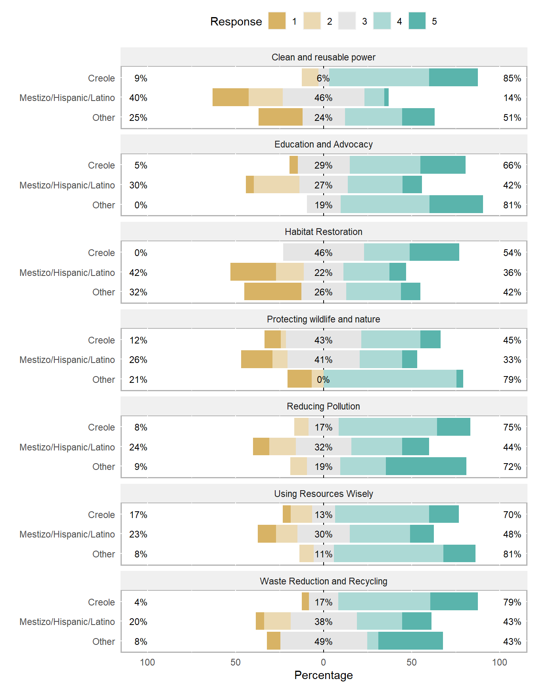
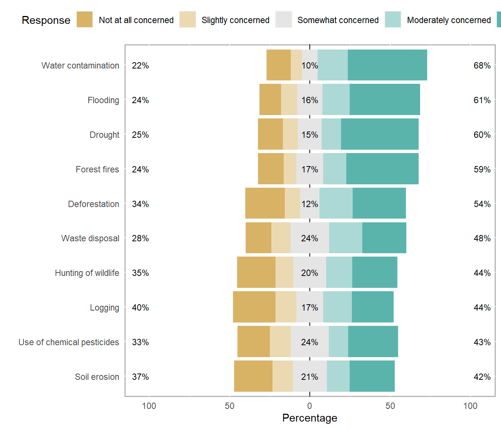

| ctv | Sampled | Submitted | Completed | Completed % |
|---|---|---|---|---|
| Arizona | 19 | 19 | 15 | 78.9% |
| Blackman Eddy | 16 | 16 | 14 | 87.5% |
| El Progress (7 Miles)/Upper Barton Creek | 23 | 22 | 18 | 78.3% |
| Lower Barton Creek/New Holland/East Land | 11 | 8 | 7 | 63.6% |
| Ontario | 23 | 24 | 18 | 78.3% |
| Teakettle | 29 | 29 | 24 | 82.8% |
| Unitedville | 30 | 30 | 22 | 73.3% |
| All | 151 | 148 | 118 | 78% |
TMNR
TMNR Digital Report
1. Introduction and Background
1.1 Overview
The Belize Karst Habitat Conservation (BKHC) is in charge of co-managing the Tapir Mountain National Reserve (TMNR), which is currently perceived as a “paper park” due to a historical absence of proper management. To enact change and convert TMNR into a proper reserve, one that is protected for its ecological value and other benefits, BKHC is seeking to conduct a KAP survey in the buffer communities of the TMNR in order to assess the knowledge, attitudes and practices of the people of these communities. This will allow for the effective planning, implementation and evaluation of future interventions. The end goal is to improve community awareness and practices in order to achieve a more sustainable management of the TMNR to increase its overall function, protection and coverage, while providing value to the surrounding communities.
The Tapir Mountain Nature Reserve (TMNR) is a vital ecosystem located in Belize, co-managed by the Belize Karst Habitat Conservation (BKHC) and the Government of Belize. The BKHC, funded by the Protected Areas Conservation Trust (PACT), aims to enhance TMNR’s ecological value while promoting sustainable development through improved management, community engagement, and financial sustainability. The reserve spans a reasonable area, but the buffer zone expands across several communities. This reserve provides a sanctuary for a variety of plant and animal species. Notably, the name “Tapir Mountain” reflects the presence of tapirs, a key species in Belizean ecosystems.
BKHC’s role in managing the Tapir Mountain Nature Reserve extends beyond traditional conservation measures. The organization actively engages in scientific research, employing a multidisciplinary approach to understand the complex dynamics of Karst environments. Through studies on flora, fauna, and geological formations, BKHC contributes valuable insights that inform conservation strategies and enhance the scientific understanding of these unique ecosystems.
Additionally, BKHC places a strong emphasis on community involvement and education. Recognizing the importance of local communities in the success of conservation initiatives, the organization collaborates with residents in the vicinity of TMNR. By fostering community partnerships, BKHC strives to build a shared sense of responsibility and awareness, aiming to create a harmonious coexistence between human activities and environmental preservation.
Through scientific research, community engagement, and sustainable management practices, BKHC seeks not only to safeguard the beauty of karst landscapes but also fosters a model of conservation that resonates with the broader principles of ecological sustainability and harmonious coexistence between nature and human society. At the same time, BKHC hopes that the relationship between the TMNR and its buffer communities is symbiotic, and that awareness and positive engagement leads to sustainable development within the reserve’s surrounding communities.
1.2 Kap Survey Objectives
To achieve these goals, a Knowledge, Attitude, and Practices (KAP) survey is proposed in the buffer communities surrounding TMNR. (b) KAP Survey Objectives Belize Analytics will assess the knowledge, attitudes, and practices of community members regarding the management of TMNR. The specific objectives are to:
Understand community perceptions and awareness of TMNR’s ecological importance.
Identify barriers and opportunities for community involvement in TMNR management.
To provide recommendations on actions and strategies that the BKHC can undertake in order to promote sustainable management of the TMNR and increase community awareness, engagement, attitudes and practices.
To establish a baseline through which future interventions and strategies can be measured against.
2. Survey Design
2.1 Target Population
The survey targeted the adult population (18 years and older) of the buffer communities of the Tapir Mountain Nature Reserve. This includes the villages of Teakettle, Unitedville, Ontario, Blackman Eddy, Arizona, El Progresso – 7 Miles, Upper Barton Creek, Lower Barton Creek, New Holland Village, and East Land Village.
The adult population, however, resides in households. Thus, the sampling unit was at the household level and a representative sample of households was selected using probability sampling. Within each sampling unit, one knowledgeable adult household member was selected to respond to the questionnaire. This was because knowledge, views, and practices are not independent and there will be a lot of correlation within the household. The adult member who responded on behalf of the household provided reasonably accurate information about others within the household. E.g. parents about children, and spouses about each other.
2.2 Sample Design
The sample design of the KAP survey utilized the inherent administrative structures of the buffer communities. The target population was stratified by administrative area (village) and systematic sampling occurred within these strata. The sample size determination was optimized considering the available resources and obtaining a high degree of statistical accuracy.
The recommended sample size for the TMNR KAP Survey depended on several factors, including the desired level of confidence, margin of error, and variability within the buffer community population. As depicted in table 1, below, a 95% confidence level and a margin of error of around 8% was used for this specific survey.
The formula for calculating the recommended sample size was:
\[ n = \frac{Z^2 \times p(1-p)nrr}{E^2 + (Z^2 \times p(1-p))/N} \]
Where:
\(n\) is the sample size.
\(N\) is the population size (1698 households in this case).
\(Z\) is the Z-score corresponding to the desired confidence level (for 95%, Z≈1.96).
\(p\) is the estimated proportion of the population that possesses the characteristic being measured.
\(E\) is the margin of error
\(nrr\) is the non-response adjustment
The sample size of 150 households was determined to achieve a 95% confidence level with an 8% margin of error, assuming a predicted proportion of 50% in the population. The upper and lower confidence limits provide a range within which the true proportion of the population is likely to fall. The sample fraction (9%) indicates that the survey targeted approximately 9% of the total population.
2.3 Sample Weights
Design weights reflect and adjust for the different probabilities of selection in the sample. The sample selection was done in two stages. The selection criteria along with the selection probabilities for each stage are described below:
Stage 1. Selection of clusters in each community - The sample was stratified using the 7 strata (Community). Simple systematic random sampling without replacement method was used in selecting the households.
Stage 2. Selection of individual – An adult was randomly selected from each household. The base weight for individual i, in household h, in community k, is given by the multiplication of the inverse probabilities at each stage of selection as follows:
2.4 Questionnaire Design
A questionnaire that entailed mainly closed-ended questions was developed to assess the main knowledge, attitude, and practices (KAP) of adult community members. The questionnaire consisted of 4 general sections:
Demographics:
This section captured the characteristics of all members within the household, including age, sex, ethnicity, employment, and education. These variables are important for the disaggregation of the data.
Knowledge Area:
Aimed to gauge community understanding of conservation principles and TMNR specifics, including biodiversity, species, and ecological significance, while also assessing awareness of environmental initiatives and climate change impacts, including the presence of wildlife like jaguars and pumas in TMNR.
Attitudes Area:
This section tried to understand community attitudes towards environmental protection, measure support for TMNR conservation efforts, and explore concerns and willingness to engage in conservation activities, addressing issues such as alternative crop production, climate change impact, and perceptions of wildlife as a threat.
Practices Area:
The section delved into current practices concerning TMNR, including potentially harmful or beneficial activities, waste disposal methods, and the perceived benefits of environmental initiatives. It also aimed at assessing the community’s willingness to collaborate on environmentally friendly crop production and solicits specific actions desired from BKHC for future community-based projects.
2.5 Data Collection using CAPI and Geographic Information Systems (GIS)
Computer-Assisted Personal Interviewing (CAPI) was utilized for data collection. Trained data collectors utilized tablet devices preloaded with the survey questionnaire and adhered to standardized data collection protocols. This method ensured efficient and accurate data collection without the immediate need for internet access during interviews, with online connectivity only necessary for downloading or uploading work to the servers.
The benefits of using CAPI in the survey include increased efficiency and accuracy in data collection due to standardized question presentation, reduced data entry errors, real-time monitoring of data collection progress through dashboards, and the ability to easily incorporate skip patterns and complex survey logic, enhancing the overall quality and reliability of the survey data.
2.6 Limitations and Recommendations
recs
3. Analysis
3.1 Unit of Analysis
In the context of this statistical report, it is crucial to clarify that references to “population,” “persons,” or “individuals” specifically represent the adult population aged 18 years and older within the buffer communities of the Tapir Mountain Nature Reserve. This distinction is intended to guide readers in their interpretation of the report’s findings and promote a comprehensive understanding of the statistical data presented.
3.2 Demographic Characteristics
3.3 Knowledge Area
3.3.1 Understanding Of Environmental Conservation
Approximately 45.1 percent of the adult population from the buffer communities of the TMNR is familiar with the term environmental conservation. Notably, individuals from Mennonite communities exhibited a lower rate of awareness at 38.9 percent when compared to other communities (46.9 percent). Similarly, those with a primary education background reported exposure at a rate of 31 percent, which was lower compared to individuals with higher education levels (77.6 percent). Additionally, awareness was lower among 18–34-year-olds compared to other age groups. These findings highlight variation in awareness of environmental conservation based on factors such as community affiliation, educational background, and age.
Individuals who indicated awareness of environmental conservation were subsequently asked about the specific terms they were familiar with. A higher number of persons expressed that they encountered information on ‘protecting wildlife and nature’ and ‘reducing pollution,’ while concepts such as ‘clean and renewable power’ and ‘habitat restoration’ were less commonly reported. However, the differences are not stark.
When participants were asked to assess their knowledge levels regarding environmental conservation topics they had previously heard about, they generally rated themselves as having a good to strong awareness. The environmental issues on which the population felt most knowledgeable were ‘reducing pollution’ and ‘using resources wisely.’ Conversely, ‘clean and renewable power,’ ‘habitat restoration,’ and ‘protecting wildlife and nature’ were identified as topics about which the population claimed to have lesser knowledge.
A noticeable difference in knowledge ratings was evident among the Mennonite population compared to non-Mennonites and those with no formal education. These groups tended to self-report lower levels of knowledge, possibly attributable to their involvement in agriculture. Their awareness of the complexity and depth of these topics, combined with their acknowledgment of possessing only surface-level knowledge, may contribute to the observed differences in self-assessment.
3.3.2 Knowledge of Climate Change
A significant 80.9 percent of the population reported having prior awareness of the term ‘climate change.’ Higher self-reporting rates were observed among young adults, individuals of Creole decent, and those with a secondary education or higher. However, the observed differences in reporting were not particularly pronounced.
Despite the fact that 8 out of 10 individuals are familiar with ‘climate change’, their knowledge concerning climate-related environmental impacts reveals some gaps in accuracy. Notably, nearly 20 percent of the population either do not believe or are unaware that the act of cutting down trees can lead to soil erosion. Additionally, 45 percent of individuals do not recognize the connection between pesticide use and its potential impact on piped water. There seems to be a lack of awareness among individuals that piped water sources originate from nearby water basins susceptible to contamination through pesticide use.
3.3.3 Knowledge of TMNR and its Wildlife
A considerable portion of the population, totalling 44.7 percent, is aware of the existence of the Tapir Mountain Nature Reserve (TMNR), formerly known as the Society Hall Nature Reserve. Notably, knowledge of TMNR is more prevalent among Mennonite communities compared to non-Mennonite communities. The primary association with the Tapir Mountain Nature Reserve is as a protected area, with 76.4 percent of those familiar with TMNR categorizing it as such. Additionally, 12.4 percent and 5.6 percent identified TMNR as a tourism attraction and hunting area, respectively.
Regarding employment status, a smaller percentage of employed individuals recognized TMNR as a protected area (62.5%) compared to the self-employed (83.3%) and those not employed (80.4%). Among employed individuals aware of the reserve, one in four reported knowledge of it being a hunting ground.
As it related to knowledge about the reserve’s boundaries, majority (63.8%) reported having no awareness, while less than 1 percent claimed familiarity with most or all of the reserve’s boundaries.
The management of TMNR is not widely known among the population, with 58 percent indicating a lack of knowledge. The most frequently mentioned entity was the Forestry Department (14.8%), followed by the Government of Belize (9.6%). Notably, Mennonite communities and the 18-34 age group exhibited a higher proportion of awareness about KARST, with reporting rates at 17.5 percent and 30.4 percent, respectively.
When asked about the main responsibilities associated with TMNR, the majority cited ‘Protecting the wildlife in the reserve’ (57.5%) and ’Protecting the natural habitat’ (29.4%). However, it is noteworthy that one in four individuals reported not knowing the responsibilities involved in managing TMNR.
Regarding the wildlife inhabiting TMNR, tapirs (76.5%), jaguars (68.8%), and deer (58.7%) were the most commonly reported species. The prevalence of these responses could be linked to the reserve’s name and the animals known to be hunted in the area. Pumas (29.8%) and Ocelots (24.3%) were the least frequently mentioned animals. Additionally, 10 percent of individuals indicated a lack of knowledge about the species residing in the reserve.
3.4 Attitude Area
3.4.1 Attitude towards conservation efforts, climate change, and sustainable development
As it relates to attitudes towards the environment, people generally report positive attitudes and a healthy concern for environmental issues, as the rest of this section will show. However, when it comes to matters that personally affect residents, attitudes veer in the direction of self-interest. For example, about 47% of persons believe that “establishing protected areas is bad”, if it is done in land that might be of economic use by the residents of the community. This sentiment was shared amongst all different groups of people, though there were some small differences worth noting. For example, persons with education “Secondary or higher” were more likely to disagree with the statement that establishing protecting areas is bad. Persons from “Other” ethnicities, which includes Mennonite persons, were also less likely to agree with the statement. Persons who agreed with the statement at a higher frequency than others include persons with “Primary” education level and persons of “Mestizo/Hispanic/Latino” ethnicity.
However, residents as a whole display a positive attitude towards conservation efforts. For instance, three quarters (76%) of persons agree that their community could benefit from “a neighbourhood watch that reports forest fires, or wildlife hunting in the reserve and the surrounding communities”. Persons of “Other” ethnicities (which includes Mennonite persons) were less likely to agree, however, as were persons from Mennonite communities as a whole. Self-employed persons were also less likely to agree with the statement. This same pattern of responses was observed when respondents were asked if anyone in their household would be interested in joining the neighbourhood watch. Moreover, only 58% of persons believe that someone in their household would be interested in joining a fire task force.
It can be observed that groups of people who lean towards being farmers, such as the self-employed and those in Mennonite communities, tend to disagree more frequently with the usefulness of neighbourhood watches and fire task forces. It is possible that these persons believe themselves to be self-sufficient enough to take care of the areas surrounding the reserve. At the same time, they might fear that other persons report them for their activities. People in communities where farming is less common tend to have a more positive attitude towards these task forces.
As it relates to Climate Change, the survey revealed interesting results. Although almost 3 in 4 persons (74%) believe that climate change is an issue that threatens the livelihood of people worldwide, only around 50% of people believe that it affects them personally. What is perhaps more interesting, is that only 51% of persons believe that human activity is the principal cause of climate change. Persons from Mennonite communities, persons with “Primary” level education, and persons of “Creole” ethnicity were more likely to be skeptical of climate change and its effects.
Pertaining to sustainable development practices, most persons (74%) agree that slash and burn farming is a threat to TMNR and other protected areas. This again shows the generally positive attitude persons have towards conservation efforts topics. However, the majority of people (53%) disagree or strongly disagree that there are tourism opportunities in their communities. About one third (33%) agree and only 3% strongly agree.
3.4.2 Environmental Concerns
The survey placed a heavy emphasis on the different environmental concerns held by persons in the TMNR buffer communities. A series of topics were mentioned and persons were to report the level of their concern towards the topic (from Not at all concerned to Extremely concerned). Additionally, they were asked to report if they believed the topic affected them personally, and if they believed that it affected the TMNR.
The first three concern items have to do with waste disposal, water contamination and forest fires. Of the first two, about half of respondents over 75% of persons reported being at least somewhat concerned, though there were relatively few cases of extremely concerned. In both cases, people also tend to perceive that this issue affects the TMNR more than it affects them personally. The levels of concern ramp up towards forest fires, however. 77% of persons report being at least somewhat concerned about first fires, and a significant 42% of all persons report being extremely concerned. This is notable because although less than half of persons (46%) believe that first forest affects them personally, over 4 in 5 people (83%) do believe it is an issue affecting the TMNR. The attitudes are consistent between groups, although persons from Mennonite communities tend to be concerned about waste disposal and water contamination at a higher frequency than those in Non-Mennonite communities. Conversely, those in Non-Mennonite communities are relatively more concerned about forest fires than those in Mennonite communities.
The next three concern items are deforestation, soil erosion, and flooding. Responses patterns were similar for deforestation and soil erosion. People tend to have lower levels of concern for these two items than for other items. However, once more, the majority of persons (>75%) think that these issues affect the TMNR. On the other hand, flooding is an item that was of major significant concern for persons, to the extend that over 43% reported being extremely concerned. However, only 42% reported that floodings affect them personally. Among the different groups of people, persons in Non-ennonite communities were more likely to show concern about the three items, and particularly flooding. Creole persons also reported concern at a higher intensity than other ethnicities, particularly towards flooding.
The final four concern items were chemical pesticides, drought, logging and hunting. Of these items, chemical pesticides elicited the lowest levels of concern. Moreover, only 38% of respondents believe the issue affects them personally, and 68% believe it affects TMNR. Conversely, drought was an issue that elicited high and intense levels of concern. 72% of all persons reported being at least somewhat concerned about droughts, and 45% reported being extremely concerned. A bit over half of respondents (55%) believe that droughts affect them personally, and 78% believe it affects the TMNR. Logging and hunting were interesting issues of concern. People report concern for these items at relatively low levels, and these two items are the two least likely to affect respondents personally. At the same time, these two issues were the ones reported to affect TMNR the most. Around 88% of all persons believe that logging and hunting of wildlife are issues that affect TMNR.
Overall, persons reported higher levels of concern towards flooding, forest fires, and drought. They reported lower levels of concern towards pesticides, soil erosion, logging and hunting. The issues that affect persons personally at higher levels are water contamination, drought and flooding. Although persons believed that all items, across the board, affect the TMNR more than it affects them personally, logging, hunting, forest fires and deforestation stand out. Interestingly, these are all issues that are perceived to be threats towards protected areas and the forest environments. Logging and hunting of wildlife particularly stand out because people report low levels of personal concern for these issues and yet they believe that the TMNR is affected by these issues. It is possible that persons are aware of these activities happening in the areas within or surrounding the TMNR.
3.4.3 Attitudes Towards Wildlife
There were several questions aimed at gauging attitudes and perceptions towards the wildlife and species that inhabit the TMNR. Almost one third of the persons in the buffer communities (33%) reported owning livestock or agricultural land within their communities. Of this subset of people. 35% believe that their livestock are threatened by nearby predators such as jaguars and pumas. Additionally, almost a quarter (24%) of all persons (not just who own livestock) believe that jaguars and pumas are threats to the communities they live in. Subsequently, persons were asked what would be their course of action should they encounter wildlife conflict in their communities. 63% of persons said they would report the encounter, while 20% said that they would scare the animal away. Worryingly, about 5% of all persons mentioned that they would poison or hunt the animal.
Persons were likewise asked about their dislike towards 10 specific animal types or species that are common to Belize and most of which also make the TMNR their habitat. Unsurprisingly, snakes were the most disliked animal, with 61% of all persons expressing their negative feelings towards them. All other animal species experienced low levels of dislike, with no other animal exceeding 10%. However, it is worth noting that around 8% of people reported disliking jaguars.
As it relates to response patterns between the different groups of persons, there are a few notable items. For example, people who are more likely to own livestock or agricultural land include persons living in Mennonite communities, persons of Mennonite/Other ethnicities, and persons with lower levels of educational attainment. However, of the people who own livestock or agricultural land, those from Non-Mennonite communities are more likely to believe that predators are a threat to their livestock. Employees are also more likely to believe it as well, as opposed to self employed people (who tend to be farmers). Another item of note is that persons of hispanic origin reported disliking snakes at a higher rate than persons of other ethnicities.
3.5 Practice Area
The Practice section of the KAP focused on the current practices, activities and habits of persons in the target population. The formulated questions targeted household domestic activities, agricultural activities, waste disposal practices, and environmentally impactful activities such as interaction with wildlife and with the TMNR.
3.5.1 Household Activities In Buffer Communities
Persons were probed about domestic and agricultural activities that their households participatedin, as well as the frequency of engagement. The specific activities included
gardening
fishing
raising livestock
hunting
growing crops
carpentry
selling lumber
Out of these activities, the ones of most interest were ‘raising livestock’, ‘hunting’, ‘growing crops’ and ‘selling lumber’. The other items were included to soften the impact of the questions so as to not raise suspicion on the part of respondents when being asked about potentially illegal activities such as hunting and extracting lumber from and within the TMNR.
Of the activities of interest, 45% of all persons reported that their household engaged in raising livestock, with households in Mennonite communities displaying a higher rate (60%) when compared to households in Non-Mennonite communities (40%). Persons of Mestizo/Hispanic/Latino ethnicity reported participation at lower rates (36%) than persons of other ethnicities. As it relates to growing crops, 40% of the population reported that their household engaged in this activity. The same differences between groups as with raising livestock are present, with households in Mennonite communities and of Other ethnicities participating in growing crops at a higher rate. Altogether, about 56% of households participate in either raising livestock or growing crops. Since this is over half of the target population, it is certainly a topic that should be of high interest.
The two activities that are perhaps the most sensitive but of the highest interest were hunting and logging. Out of all persons, only 7% reported that anyone in their household participates in hunting, and none reported participation in logging. Engagement in hunting and logging was again asked at P10 and P11, but specifically about hunting and logging inside the TMNR. Similarly, only 4% of persons admitted that a household member had hunted in the TMNR, and none reported logging.
These are very small figures and would certainly be a welcome indicator for BKHC. However, it might be too early to celebrate. Persons tend to be hesitant to self-report when it comes to issues that are perceived to be sensitive. This is a response bias known as social desirability bias. In accordance, question P12 was designed to counter this bias. Here, persons were asked about their knowledge of other persons in the community who had participated in hunting or logging in the TMNR within the past 12 months. To this question, almost 18% of the population answered positively - they knew someone who participated in these activities! This figure should be taken as more reliable and closer to the truth.
However caution must be exercised, this 18% does not represent the proportion of people who hunt or log in the TMNR, but rather, that 18% of persons are aware of at least one person who does engage in the activities. Nevertheless, because persons from various communities reported a positive answer for P12, it is still likely that logging and hunting is happening at a higher rate than what is being self-reported by the community.
3.5.2 Waste Disposal Practices
The most common form of waste disposal was Open burning, reported by over 46% of the population. Persons from Mennonite communities reported Open burning as their main waste disposal method at a rate of 63%, while for Non-Mennonite communities the rate stood at 42%. The second most common method of waste disposal was Paid service transport to landfill, at 35%. Notably, almost all persons who reported this as their primary waste disposal were from Non-Mennonite communities. In all, 44.5% of persons in Non-Mennonite communities reported Paid service as their household’s main waste disposal method, while less than 4% of persons in Mennonite communities did the same. Between ethnicities, people of Creole descent were more likely to report Paid service as their waste disposal method relative to others, as were persons with higher levels of education.
Although open burning is not optimal for the environment, the population who most often reported this waste disposal method belonged to the communities that are relatively remote and rural in comparison with the other communities. It is likely that municipal waste disposal services are not available to Mennonite and surrounding communities such as Upper and Lower Barton Creek, Eastland, Progresso, 7 Miles, etc. As it relates to the population in Non-Mennonite communities, it was observed that persons with higher education levels and persons who were employees were more likely to have paid waste disposal. Given that education and employment are positively correlated with income, it is likely that income is also a factor that influences the reliance on paid waste disposal services. Persons with lower income might not be able to afford such services, or might prefer to deal with such tasks themselves.
3.5.3 Sustainable Agriculture
Persons were directly asked (question P5) if their household participates in subsistence farming or agricultural production, and 23% responded affirmatively. Persons in Mennonite communities were significantly more likely to engage in these activities, as 43% responded positively, compared to only 17% of persons in Non-Mennonite communities. It is worth noting, however, that at question P3, 40% of all persons reported that their households grow crops, and 42% reported that their household participates in gardening. Therefore, the persons participating in farming activities is likely larger than the 23% who responded affirmatively to question P5. The discrepancy was possibly caused by persons interpreting “agricultural production” and “farming” as more formal, full-time activities. However, sustainable agriculture should be of interest to any person or household engaging in small-scale or large-scale agriculture.
The persons who responded positively to question P5 were subsequently asked if they would be interested in learning about different sustainable agriculture practices. 81% of all persons who participate in agriculture reported their willingness to learn about improved crop production methods. Persons in Non-Mennonite communities were more likely to do so, at 90%, compared to 68% of within Mennonite communities. Persons of Creole descent who participate in agriculture all (100%) reported being willing to learn these improved methods, while 71% of persons of Other/Mennonite ethnicity did the same. Persons who were employees and who have higher levels of education also responded affirmatively at higher rates. This may indicate that it is likely that persons who do not engage in agriculture full-time are more willing to acquire new knowledge compared to persons who are full-time farmers. However, most persons across all backgrounds responded affirmatively to this item.
Similarly, 84% of persons in agriculture were willing to learn about the use of biological pesticides. The response variation between person groups and backgrounds was very similar to that of improved crop production. However, more people, across all backgrounds, are willing to learn about biological pesticides. This seems to be a more novel sustainable practice that is not very well known and is of high interest for all. Overall, there is a high willingness for persons who participate in agriculture towards learning more about sustainable agriculture.
3.5.4 Engagement with News, Media and Karst
Keeping up with modern themes, Social Media was the most common way in which persons consumed news and media, reported by 58% of all persons. Television and Internet are second and third, with 34% and 29% of persons reporting their informational usage, respectively. One notable difference is that within Mennonite communities, radio and Internet were selected as the most common media for news and information. Newspaper (4%) and word-of-mouth (5%) were the least commonly reported options. These results are in-line with the modern consumption of information, dominated by the internet, mobile phones and social media. However, persons in Mennonite communities, perhaps due to their remoteness and possibly bad mobile reception, were equally inclined to consume news via radio.
Persons were asked about their willingness towards engaging in specific, targeted information and educational initiatives. Specifically, they were asked about their likeliness towards participating in
promotional advertisement about the Tapir Mountain Nature Reserve on Social Media
educational campaigns to learn about the Tapir Mountain Nature Reserve
following the social media page of the Belize Karst Habitat Conservation
training workshops that the Belize Karst Habitat Conservation organizes
Overall, the item that the higher number of persons responded positively to was item (ii), education campaigns, with 61% of persons stating they were likely or very likely to participate in them. The least popular option was item (iii), following the BKHC social media page, although 52% of respondents did express positively likeliness towards the item.
Between the different groups of people, persons from Mennonite communities expressed overall lower levels of enthusiasm towards the engagement items. However, there was one item (item iv, training workshops), where their likeliness (57%) surpassed those of Non-Mennonite communities (53%). This indicates that persons in Mennonite communities, who predominantly engage in farming, are more interested in practical, hands-on approaches, as opposed to other types of media-centric engagement.
Future Actions Desired By Household To Be Facilitated By KARST
Aha
Community Engagement By The Household
Ahaa
4. Recommendations
4.1 Enhance Environmental Conservation Awareness:
To address the lower rate of awareness in communities, it is important to implement targeted awareness campaigns. These initiatives should be carefully designed and should incorporate community workshops, involvement of local leaders to deliver informative sessions, and the distribution of educational materials in accessible formats. A key aspect of this strategy involves collaboration with local educational institutions to integrate environmental conservation topics into school curricula, ensuring that future generations are equipped with a strong understanding of the importance of conservation. Furthermore, adapting communication methods to the ones most commonly used by persons of the target populations. As per the survey results, Non-Mennonite communities should be targeted through Social Media, the Internet and Television. Mennonite communities should be targeted primarily via radio and the Internet, which may include social media.
4.2 Community Involvement in TMNR Management
Establishing community forums or village meetings presents an opportunity to actively involve residents in discussions about the benefits and opportunities related to the management of the Tapir Mountain Nature Reserve (TMNR). These forums can serve as platforms to address concerns, gather insights, and build a collaborative approach. Educational programs, workshops, and training sessions are essential for empowering community members with the knowledge and skills necessary for meaningful participation in TMNR management. Over 58% of all persons reported willingness of engaging in educational campagins by BKHC. Furthermore, persons in Mennonite communities showed a high willingness towards participating in workshops and trainings organized by the BKHC, which indicates enthusiasm towards practical, hands-on approaches and management.
In addition, implementing community-based monitoring systems will encourage residents to actively report activities such as forest fires or wildlife hunting, fostering a sense of shared responsibility and contributing to the overall success of conservation efforts. Almost three-quarters of all persons reported willingness to join commuinty neighbourhood watches, and over half expressed willingness for their household to join a fire taskforce.
4.3 Promote Positive Behavioral Changes
Designing behavior change communication and educational campaigns is crucial to emphasize the positive impact of sustainable practices on both the community’s well-being and the ecological health of TMNR. Collaborating with local influencers, leaders, and community organizations can amplify the reach and effectiveness of these campaigns. Implementation of incentive programs, such as recognition or small rewards, creates a positive feedback loop, encouraging individuals and households to adopt and maintain sustainable behaviors. These initiatives collectively contribute to building a culture of environmental stewardship within the community.
4.4 Improve Climate Change Education
Addressing knowledge gaps identified in the survey requires the development of targeted educational campaigns. These campaigns should focus on specific climate-related environmental impacts, ensuring that the information is accessible and relevant to diverse community members. For example, the proportion of persons who are familiar with climate change and its effects can be improved still. More importantly, many people are skeptical about the role of humans in climate change, even if they recognize climate change as a pressing issue. This sentiment should be addressed before it grows roots, as it has done in many areas of the world, fueled by political polarization and economic interests.
Once again, BKHC sould consider collaboration with local schools and community centers to organize workshops and seminars on climate change and its implications. Engaging community leaders and influencers to promote accurate information through various channels, including social media and community events, enhances the overall understanding and awareness of climate change within the community.
4.5 Strengthen Knowledge about TMNR
Implementing targeted awareness campaigns will go far in increasing knowledge about the Tapir Mountain Nature Reserve’s boundaries, management entities, and responsibilities. Developing informative materials, brochures, and signage within and around TMNR provides clear information about its significance and management. Areas where persons are particularly lacking in knowledge include the boundaries of the park, the wildlife that inhabit it, the activities allowed within the reserve, and the benefits obtained from the reserve.
Establishing partnerships with local media outlets ensures consistent and widespread coverage, reinforcing the importance of TMNR in the community’s collective consciousness. These efforts contribute to creating a well-informed community that actively participates in the preservation of this vital natural resource.
Signage should be considered at strategic places within buffer communities, which highlight and illustrate the boundaries of the park, outlines prohibited activities, and lists wildlife species endmeic to the reserve.
4.6 Mitigate Wildlife Conflict
Establishing a community-based wildlife conflict resolution program can prove pivotal in providing resources and support to individuals encountering conflicts with wildlife. Conducting workshops and training sessions on non-lethal methods for mitigating human-wildlife conflicts educates residents on effective and humane strategies. Collaborating with local authorities to enforce regulations against harmful practices like poisoning or hunting wildlife in response to conflicts ensures a holistic approach to wildlife management. These initiatives aim to strike a balance between human activities and wildlife conservation within the community.
In particular, a hotline for reporting conflicts should be established, so that rangers or other personnel can be available to provide guidance in resolving the conflicts. It is possible that neighbourhood watch initiatives and this wildlife conflict iniative can be coalesced into a single channel, if BKHC deems this practical.
4.7 Promote Sustainable Agriculture
Developing and disseminating educational materials on sustainable agricultural practices is essential for promoting environmentally friendly farming techniques. Facilitating workshops and training sessions on sustainable farming, with an emphasis on improved crop production methods and biological pest control, will empower farmers to adopt more sustainable practices. The majoirty of persons who are involved in agriculture already expressed their willigness towards learning these new, sustainable practices.
Collaborating with agricultural extension services, such as the University of Belize and other related organizations, as well as local experts, may provide ongoing support and guidance, fostering a community of farmers dedicated to sustainable agriculture. These initiatives will contribute to the long-term ecological health of the community and the surrounding areas.
4.8 Optimize Waste Disposal Practices
BKHC may consider implementing or at least promoting community-specific waste disposal initiatives. Considering the availability of municipal services and the unique characteristics of Mennonite and non-Mennonite communities, is crucial. Conducting awareness campaigns on the environmental impact of open burning and promoting alternative, eco-friendly waste disposal methods encourages responsible waste management practices. Exploring partnerships with local businesses or organizations to provide affordable waste disposal services, particularly in areas with limited access to municipal services, will help ensure that waste is managed in an environmentally conscious manner.
These efforts contribute to minimizing the ecological footprint of the community and will reduce the negative impacts of pollution and contamination on the TMNR.
4.9 Utilize Diverse Media for Outreach
Tailoring communication strategies based on the preferred media consumption habits of different communities, including social media, radio, television, and the internet, is essential. Collaborating with local influencers and media personalities to deliver key messages will resonate with community members and will enhace the levels of cultural relevance and resonance.A
After designing an effective outreach and communication strategy, regularly updating and maintaining a dynamic online presence is important. The BKHC website is an excellent platform for information access about TMNR, conservation efforts, and community engagement initiatives. To maximize exposure, awareness and ensure that the communities stay informed, it will also be useful to expand and double down on social media presence and efforts. In addition to just establishing social media pages on Facebook, Instagram, TikTok and Youtube, it is important to promote these pages through advertisements and campaigns. As it relates to digital ads, graphics and even videos can be developed and ads might be purchased on Facebook or Google to maximize outreach. Raffles, giveaways, community drives and “Influencer” help will also greatly enhance exposure of the organization and its media.
These efforts collectively contribute to effective outreach and engagement across diverse media platforms and to better inform and engage the community.
4.10 Monitor, Evaluate and Adapt Engagement Initiatives
Monitoring and assessing the effectiveness of engagement initiatives through surveys, feedback sessions, and ongoing community dialogues is crucial. Utilizing data analytics to measure the reach and impact of social media campaigns enables the organization to adapt strategies based on audience engagement. Fostering an open feedback loop, encouraging community members to express their opinions, suggestions, and concerns about conservation efforts and engagement programs, ensures a continuous improvement cycle.
Practically, these might be implemented through satisfaction surveys developed on Google Forms and disseminated via the BKHC website and social media pages. Purchasing Facebook and especially Google ads will also provide access to analytics relating to outreach. Google Analtyics is aplatform that may be implemented into the BKHC website and social media pages in order to better understand the reach and characteristics of those engaging with TMNR media. Community forums or town halls should be useful in providing direct feedback from those in the target communities.
These evaluation and adaptation mechanisms contribute to the ongoing success and relevance of community engagement initiatives.
5. Conclusion
Con
6. Tables and Figures
6.1 Basic Descriptives
| ctv | ed | Sampled | Submitted | Completed | Completed % |
|---|---|---|---|---|---|
| Arizona | 49-081-00 | 19 | 19 | 15 | 78.9% |
| Blackman Eddy | 49-074-00 | 16 | 16 | 14 | 87.5% |
| El Progress (7 Miles)/Upper Barton Creek | 49-068-00 | 11 | 11 | 9 | 81.8% |
| El Progress (7 Miles)/Upper Barton Creek | 49-068-10 | 9 | 9 | 9 | 100% |
| El Progress (7 Miles)/Upper Barton Creek | 49-068-20 | 3 | 2 | NA | NA% |
| Lower Barton Creek/New Holland/East Land | 49-069-00 | 11 | 8 | 7 | 63.6% |
| Ontario | 49-075-00 | 13 | 14 | 10 | 76.9% |
| Ontario | 49-076-00 | 10 | 10 | 8 | 80% |
| Teakettle | 49-077-00 | 11 | 11 | 8 | 72.7% |
| Teakettle | 49-078-00 | 18 | 18 | 16 | 88.9% |
| Unitedville | 49-070-00 | 16 | 16 | 9 | 56.2% |
| Unitedville | 49-072-00 | 14 | 14 | 13 | 92.9% |
| All | All | 151 | 148 | 118 | 78% |
Characteristics of respondents
6.2 Knowledge Area
K1
| Tabulations for question K1 | |||
| Have you ever heard about the term environmental conservation? | |||
| Yes | No | Don't Know | |
|---|---|---|---|
| Community Type | |||
| Mennonite | 38.9% | 61.1% | 0% (0) |
| Non-Mennonite | 46.9% | 52% | 1.1% |
| Age Group | |||
| 18-34 | 30.7% | 69.3% | 0% (0) |
| 35-49 | 58.1% | 41.9% | 0% (0) |
| 50+ | 35.5% | 62.6% | 2% |
| Education Completed | |||
| Other | 42.8% | 57.2% | 0% (0) |
| Primary | 31% | 67.2% | 1.8% |
| Secondary or Higher | 77.6% | 22.4% | 0% (0) |
| Ethnicity | |||
| Creole | 46.3% | 51.6% | 2.1% |
| Mestizo/Hispanic/Latino | 41.3% | 58.7% | 0% (0) |
| Other | 51.8% | 48.2% | 0% (0) |
| Worker Type | |||
| Employee | 45% | 55% | 0% (0) |
| Self Employed | 48.5% | 51.5% | 0% (0) |
| Not Employed | 42.5% | 55.2% | 2.3% |
| Total | 45.1% (1806) | 54.1% (2165) | 0.8% (34) |
K2 - Filter question

K2 - Ratings by Item


| Tabulations for question K2.1 | |||||
| On a scale of 1 to 5, with 5 being the highest, how would you rate your knowledge on Protecting wildlife and nature | |||||
| 1 | 2 | 3 | 4 | 5 | |
|---|---|---|---|---|---|
| Community Type | |||||
| Mennonite | 14.6% (47) | 7.4% (24) | 37.5% (121) | 40.6% (131) | 0% (0) |
| Non-Mennonite | 13.1% (187) | 5.7% (81) | 33% (470) | 37.2% (530) | 10.9% (155) |
| Age Group | |||||
| 18-34 | 0% (0) | 0% (0) | 39.5% (58) | 43.5% (64) | 17% (25) |
| 35-49 | 10.8% (114) | 9.8% (104) | 27.5% (291) | 44.4% (470) | 7.6% (80) |
| 50+ | 22.1% (120) | 0% (0) | 45% (244) | 23.4% (127) | 9.4% (51) |
| Education Completed | |||||
| Other | 18.2% (93) | 16% (82) | 36.6% (187) | 29.2% (149) | 0% (0) |
| Primary | 17.4% (100) | 0% (0) | 26.1% (150) | 37.7% (217) | 18.8% (108) |
| Secondary or Higher | 6.2% (41) | 3.5% (23) | 38.5% (255) | 44.7% (296) | 7.1% (47) |
| Ethnicity | |||||
| Creole | 9% (66) | 3.1% (23) | 42.8% (313) | 33.5% (245) | 11.5% (84) |
| Mestizo/Hispanic/Latino | 17.9% (122) | 8.7% (59) | 40.9% (279) | 24% (164) | 8.5% (58) |
| Other | 13.9% (47) | 7.1% (24) | 0% (0) | 74.9% (253) | 4.1% (14) |
| Worker Type | |||||
| Employee | 6.3% (41) | 9% (59) | 32.4% (211) | 46.5% (303) | 5.8% (38) |
| Self Employed | 0% (0) | 4.6% (24) | 17.3% (91) | 65.6% (345) | 12.5% (66) |
| Not Employed | 33.8% (193) | 4% (23) | 50.8% (290) | 2.5% (14) | 8.9% (51) |
| Total | 13.4% (234) | 6% (104) | 33.9% (591) | 37.8% (660) | 8.9% (155) |
| Tabulations for question K2.1 | |||||
| On a scale of 1 to 5, with 5 being the highest, how would you rate your knowledge on Using Resources Wisely | |||||
| 1 | 2 | 3 | 4 | 5 | |
|---|---|---|---|---|---|
| Community Type | |||||
| Mennonite | 0% (0) | 8.7% (24) | 22.1% (61) | 69.2% (191) | 0% (0) |
| Non-Mennonite | 7.5% (95) | 12.1% (154) | 19.2% (244) | 42% (533) | 19.1% (242) |
| Age Group | |||||
| 18-34 | 0% (0) | 0% (0) | 54.6% (89) | 30.1% (49) | 15.3% (25) |
| 35-49 | 7.3% (68) | 10.7% (99) | 15.7% (146) | 49.3% (458) | 17% (158) |
| 50+ | 5.9% (27) | 17.1% (78) | 15.4% (70) | 48.1% (219) | 13.4% (61) |
| Education Completed | |||||
| Other | 7% (27) | 12.4% (48) | 37% (143) | 43.5% (168) | 0% (0) |
| Primary | 5.1% (27) | 10.2% (54) | 11.3% (60) | 37.2% (197) | 36.1% (191) |
| Secondary or Higher | 6.5% (41) | 12.1% (76) | 16% (101) | 57.1% (360) | 8.3% (52) |
| Ethnicity | |||||
| Creole | 4.4% (27) | 12.4% (76) | 13.1% (80) | 53.4% (326) | 16.7% (102) |
| Mestizo/Hispanic/Latino | 10.6% (68) | 12.1% (78) | 29.7% (191) | 34.2% (220) | 13.5% (87) |
| Other | 0% (0) | 8.2% (24) | 11.7% (34) | 61.5% (179) | 18.6% (54) |
| Worker Type | |||||
| Employee | 7.2% (41) | 0% (0) | 27.3% (155) | 41.4% (235) | 24% (136) |
| Self Employed | 0% (0) | 4.6% (24) | 23% (121) | 59.9% (315) | 12.5% (66) |
| Not Employed | 11.9% (54) | 34% (154) | 6.4% (29) | 38.6% (175) | 9.1% (41) |
| Total | 6.2% (95) | 11.5% (177) | 19.7% (304) | 47% (724) | 15.7% (242) |
| Tabulations for question K2.1 | |||||
| On a scale of 1 to 5, with 5 being the highest, how would you rate your knowledge on Reducing Pollution | |||||
| 1 | 2 | 3 | 4 | 5 | |
|---|---|---|---|---|---|
| Community Type | |||||
| Mennonite | 0% (0) | 18.3% (54) | 36.3% (107) | 25.8% (76) | 19.7% (58) |
| Non-Mennonite | 5% (64) | 9.8% (127) | 20.7% (267) | 42.6% (549) | 21.9% (283) |
| Age Group | |||||
| 18-34 | 0% (0) | 20.4% (33) | 0% (0) | 64.2% (104) | 15.4% (25) |
| 35-49 | 6.6% (64) | 12.1% (117) | 19.7% (191) | 39.6% (383) | 22% (213) |
| 50+ | 0% (0) | 6.8% (31) | 40.1% (182) | 30.4% (138) | 22.7% (103) |
| Education Completed | |||||
| Other | 15.8% (64) | 13.3% (54) | 43.5% (176) | 13.1% (53) | 14.3% (58) |
| Primary | 0% (0) | 6% (33) | 17.9% (98) | 35.9% (197) | 40.1% (220) |
| Secondary or Higher | 0% (0) | 14.8% (94) | 15.8% (100) | 59.4% (376) | 10% (63) |
| Ethnicity | |||||
| Creole | 0% (0) | 8.3% (54) | 17% (111) | 55.8% (365) | 19% (124) |
| Mestizo/Hispanic/Latino | 9.3% (64) | 15.1% (104) | 31.6% (217) | 28.7% (197) | 15.3% (105) |
| Other | 0% (0) | 9.7% (24) | 19% (47) | 25.9% (64) | 45.3% (112) |
| Worker Type | |||||
| Employee | 6% (37) | 11.9% (74) | 28.1% (174) | 37.7% (234) | 16.3% (101) |
| Self Employed | 0% (0) | 4.8% (24) | 17.6% (88) | 52.7% (263) | 24.8% (124) |
| Not Employed | 5.8% (27) | 17.9% (84) | 23.9% (112) | 27.5% (129) | 24.9% (117) |
| Total | 4% (64) | 11.4% (180) | 23.6% (373) | 39.5% (625) | 21.5% (340) |
| Tabulations for question K2.1 | |||||
| On a scale of 1 to 5, with 5 being the highest, how would you rate your knowledge on Clean and reusable power | |||||
| 1 | 2 | 3 | 4 | 5 | |
|---|---|---|---|---|---|
| Community Type | |||||
| Mennonite | 23.3% (77) | 18.5% (61) | 26.7% (88) | 13.9% (46) | 17.6% (58) |
| Non-Mennonite | 11% (101) | 8.2% (75) | 25.8% (236) | 40.3% (369) | 14.7% (135) |
| Age Group | |||||
| 18-34 | 0% (0) | 35.6% (58) | 30.1% (49) | 34.4% (56) | 0% (0) |
| 35-49 | 22.8% (177) | 4% (31) | 25.7% (200) | 28.8% (224) | 18.8% (146) |
| 50+ | 0% (0) | 15.7% (48) | 24.5% (75) | 44.4% (136) | 15.4% (47) |
| Education Completed | |||||
| Other | 25.4% (91) | 8.7% (31) | 41.1% (147) | 8.7% (31) | 16.2% (58) |
| Primary | 12% (47) | 16.3% (64) | 21.4% (84) | 24.4% (96) | 26% (102) |
| Secondary or Higher | 8.2% (41) | 8.4% (42) | 18.6% (93) | 57.9% (289) | 6.8% (34) |
| Ethnicity | |||||
| Creole | 0% (0) | 9.3% (42) | 6% (27) | 57.1% (257) | 27.6% (124) |
| Mestizo/Hispanic/Latino | 20.4% (98) | 19.6% (94) | 46% (221) | 11.5% (55) | 2.5% (12) |
| Other | 25.2% (80) | 0% (0) | 23.9% (76) | 32.7% (104) | 18.2% (58) |
| Worker Type | |||||
| Employee | 15.4% (74) | 15.6% (75) | 27.2% (131) | 32.2% (155) | 9.8% (47) |
| Self Employed | 7% (31) | 7% (31) | 33.3% (148) | 24.9% (111) | 27.9% (124) |
| Not Employed | 22.7% (73) | 9.6% (31) | 14% (45) | 46.6% (150) | 7.1% (23) |
| Total | 14.2% (177) | 10.9% (136) | 26% (324) | 33.3% (415) | 15.5% (193) |
| Tabulations for question K2.1 | |||||
| On a scale of 1 to 5, with 5 being the highest, how would you rate your knowledge on Habitat Restoration | |||||
| 1 | 2 | 3 | 4 | 5 | |
|---|---|---|---|---|---|
| Community Type | |||||
| Mennonite | 39.5% (88) | 13.9% (31) | 13.9% (31) | 32.7% (73) | 0% (0) |
| Non-Mennonite | 10.4% (118) | 4.4% (50) | 37.6% (426) | 25.7% (291) | 21.9% (248) |
| Age Group | |||||
| 18-34 | 20.2% (33) | 0% (0) | 25.2% (41) | 39.3% (64) | 15.3% (25) |
| 35-49 | 17.8% (156) | 5.7% (50) | 24.3% (213) | 30.1% (263) | 22.1% (193) |
| 50+ | 5.6% (18) | 9.6% (31) | 63% (203) | 11.8% (38) | 9.9% (32) |
| Education Completed | |||||
| Other | 22.7% (85) | 21.3% (80) | 40.5% (152) | 15.5% (58) | 0% (0) |
| Primary | 14.3% (64) | 0% (0) | 27.4% (123) | 6% (27) | 52.3% (235) |
| Secondary or Higher | 11% (59) | 0% (0) | 34.1% (183) | 52.2% (280) | 2.6% (14) |
| Ethnicity | |||||
| Creole | 0% (0) | 0% (0) | 46% (284) | 26.1% (161) | 28% (173) |
| Mestizo/Hispanic/Latino | 26% (131) | 15.9% (80) | 22.4% (113) | 26% (131) | 9.7% (49) |
| Other | 32.1% (76) | 0% (0) | 25.7% (61) | 30.8% (73) | 11.4% (27) |
| Worker Type | |||||
| Employee | 13.5% (74) | 9.1% (50) | 34.7% (191) | 31.5% (173) | 11.3% (62) |
| Self Employed | 18.7% (88) | 0% (0) | 19.1% (90) | 29.3% (138) | 32.9% (155) |
| Not Employed | 13.3% (45) | 9.2% (31) | 52.1% (176) | 16% (54) | 9.5% (32) |
| Total | 15.2% (206) | 5.9% (80) | 33.7% (456) | 26.9% (364) | 18.3% (248) |
| Tabulations for question K2.1 | |||||
| On a scale of 1 to 5, with 5 being the highest, how would you rate your knowledge on Waste Reduction and Recycling | |||||
| 1 | 2 | 3 | 4 | 5 | |
|---|---|---|---|---|---|
| Community Type | |||||
| Mennonite | 0% (0) | 0% (0) | 69.8% (176) | 30.2% (76) | 0% (0) |
| Non-Mennonite | 5.9% (72) | 7.2% (87) | 21.8% (265) | 35.5% (431) | 29.6% (359) |
| Age Group | |||||
| 18-34 | 0% (0) | 0% (0) | 60.1% (98) | 24.5% (40) | 15.3% (25) |
| 35-49 | 3.1% (27) | 7.1% (63) | 30% (265) | 32.3% (285) | 27.4% (242) |
| 50+ | 10.6% (45) | 5.9% (25) | 18.6% (79) | 42.9% (182) | 21.9% (93) |
| Education Completed | |||||
| Other | 7.4% (27) | 12.9% (47) | 61.8% (225) | 8.5% (31) | 9.3% (34) |
| Primary | 5.1% (27) | 0% (0) | 11% (58) | 52.6% (278) | 31.4% (166) |
| Secondary or Higher | 3.1% (18) | 7.1% (41) | 27.4% (158) | 34.5% (199) | 27.8% (160) |
| Ethnicity | |||||
| Creole | 4.1% (27) | 0% (0) | 16.7% (110) | 52.3% (344) | 26.9% (177) |
| Mestizo/Hispanic/Latino | 4.7% (27) | 15.2% (87) | 37.6% (216) | 25.8% (148) | 16.7% (96) |
| Other | 7.6% (18) | 0% (0) | 48.9% (116) | 6.8% (16) | 36.7% (87) |
| Worker Type | |||||
| Employee | 0% (0) | 12.7% (63) | 34.9% (173) | 8.1% (40) | 44.4% (220) |
| Self Employed | 0% (0) | 0% (0) | 33.1% (176) | 54.5% (290) | 12.4% (66) |
| Not Employed | 16.3% (72) | 5.7% (25) | 20.9% (92) | 40.4% (178) | 16.8% (74) |
| Total | 4.9% (72) | 5.9% (87) | 30.1% (440) | 34.6% (506) | 24.5% (359) |
| Tabulations for question K2.1 | |||||
| On a scale of 1 to 5, with 5 being the highest, how would you rate your knowledge on Education and Advocacy | |||||
| 1 | 2 | 3 | 4 | 5 | |
|---|---|---|---|---|---|
| Community Type | |||||
| Mennonite | 0% (0) | 25.2% (61) | 31.8% (77) | 30.2% (73) | 12.8% (31) |
| Non-Mennonite | 4.6% (54) | 8.1% (95) | 25.8% (301) | 39.7% (463) | 21.8% (254) |
| Age Group | |||||
| 18-34 | 0% (0) | 0% (0) | 35.6% (58) | 39.3% (64) | 25.2% (41) |
| 35-49 | 3.2% (27) | 4.9% (41) | 27.8% (231) | 40.3% (335) | 23.7% (197) |
| 50+ | 6.5% (27) | 27.6% (115) | 21.6% (90) | 33.1% (138) | 11.3% (47) |
| Education Completed | |||||
| Other | 10.4% (27) | 23.5% (61) | 30.8% (80) | 22.3% (58) | 13.1% (34) |
| Primary | 5.7% (27) | 11.4% (54) | 37.1% (175) | 7% (33) | 38.8% (183) |
| Secondary or Higher | 0% (0) | 6% (41) | 18.1% (123) | 65.8% (446) | 10% (68) |
| Ethnicity | |||||
| Creole | 4.7% (27) | 0% (0) | 29.3% (167) | 40.4% (230) | 25.5% (145) |
| Mestizo/Hispanic/Latino | 4.5% (27) | 25.9% (155) | 27.4% (164) | 31.1% (186) | 11% (66) |
| Other | 0% (0) | 0% (0) | 19.4% (47) | 50% (121) | 30.6% (74) |
| Worker Type | |||||
| Employee | 0% (0) | 6.9% (41) | 25.1% (149) | 39.1% (232) | 29% (172) |
| Self Employed | 0% (0) | 8.7% (31) | 23.6% (84) | 40.4% (144) | 27.2% (97) |
| Not Employed | 11.7% (54) | 18.2% (84) | 31.5% (145) | 34.9% (161) | 3.7% (17) |
| Total | 3.8% (54) | 11% (155) | 26.8% (377) | 38.1% (536) | 20.2% (284) |
AVERAGES
ct_k2_avg() |>
ct_gt(
tit = 'Tabulation of average rating for items in question K2',
sub = ''
)| Tabulation of average rating for items in question K2 | |||||||
| Protecting wildlife and nature | Using Resources Wisely | Reducing Pollution | Clean and reusable power | Habitat Restoration | Waste Reduction and Recycling | Education and Advocacy | |
|---|---|---|---|---|---|---|---|
| Community Type | |||||||
| Mennonite | 3.05 | 3.61 | 3.47 | 2.84 | 2.40 | 3.30 | 3.30 |
| Non-Mennonite | 3.27 | 3.53 | 3.67 | 3.40 | 3.44 | 3.76 | 3.66 |
| Age Group | |||||||
| 18-34 | 3.77 | 3.60 | 3.74 | 2.99 | 3.28 | 3.54 | 3.90 |
| 35-49 | 3.28 | 3.58 | 3.59 | 3.17 | 3.33 | 3.74 | 3.76 |
| 50+ | 2.98 | 3.46 | 3.69 | 3.59 | 3.11 | 3.60 | 3.15 |
| Education Completed | |||||||
| Other | 2.77 | 3.17 | 2.97 | 2.82 | 2.49 | 2.99 | 3.04 |
| Primary | 3.40 | 3.89 | 4.10 | 3.37 | 3.83 | 4.05 | 3.62 |
| Secondary or Higher | 3.43 | 3.49 | 3.64 | 3.47 | 3.36 | 3.77 | 3.80 |
| Ethnicity | |||||||
| Creole | 3.35 | 3.66 | 3.86 | 4.03 | 3.82 | 3.98 | 3.82 |
| Mestizo/Hispanic/Latino | 2.97 | 3.28 | 3.26 | 2.56 | 2.77 | 3.34 | 3.18 |
| Other | 3.49 | 3.91 | 4.08 | 3.19 | 2.90 | 3.65 | 4.11 |
| Worker Type | |||||||
| Employee | 3.37 | 3.75 | 3.47 | 3.05 | 3.18 | 3.84 | 3.90 |
| Self Employed | 3.87 | 3.81 | 3.98 | 3.60 | 3.58 | 3.79 | 3.86 |
| Not Employed | 2.49 | 2.99 | 3.48 | 3.05 | 2.99 | 3.36 | 3.00 |
| Total | 3.23 | 3.55 | 3.63 | 3.25 | 3.27 | 3.68 | 3.60 |
K3
| Tabulations for question K3 | |||
| Have you ever heard about the Tapir Mountain Nature Reserve, formerly known as Society Hall Nature Reserve? | |||
| Yes | No | Don't Know | |
|---|---|---|---|
| Community Type | |||
| Mennonite | 55.8% | 44.2% | 0% (0) |
| Non-Mennonite | 41.5% | 56% | 2.4% |
| Age Group | |||
| 18-34 | 22.2% | 77.8% | 0% (0) |
| 35-49 | 45% | 50.9% | 4.1% |
| 50+ | 51.6% | 48.4% | 0% (0) |
| Education Completed | |||
| Other | 53.9% | 44.4% | 1.8% |
| Primary | 40.4% | 59.6% | 0% (0) |
| Secondary or Higher | 40.8% | 53.2% | 6% |
| Ethnicity | |||
| Creole | 48% | 48.6% | 3.3% |
| Mestizo/Hispanic/Latino | 35% | 63.7% | 1.3% |
| Other | 61.3% | 38.7% | 0% (0) |
| Worker Type | |||
| Employee | 28% | 72% | 0% (0) |
| Self Employed | 52.9% | 45.2% | 1.9% |
| Not Employed | 55.3% | 41% | 3.8% |
| Total | 44.7% (1791) | 53.4% (2137) | 1.9% (76) |
K3_1
| Tabulations for question K3.1 | ||
| Have you heard about a reserve that is located near to this community? | ||
| Yes | No | |
|---|---|---|
| Community Type | ||
| Mennonite | 49.3% | 50.7% |
| Non-Mennonite | 7.9% | 92.1% |
| Age Group | ||
| 18-34 | 12.4% | 87.6% |
| 35-49 | 14.2% | 85.8% |
| 50+ | 19% | 81% |
| Education Completed | ||
| Other | 27.3% | 72.7% |
| Primary | 16.5% | 83.5% |
| Secondary or Higher | 0% (0) | 100% |
| Ethnicity | ||
| Creole | 3.8% | 96.2% |
| Mestizo/Hispanic/Latino | 27.9% | 72.1% |
| Other | 0% (0) | 100% |
| Worker Type | ||
| Employee | 17.5% | 82.5% |
| Self Employed | 17.6% | 82.4% |
| Not Employed | 10.6% | 89.4% |
| Total | 15.6% (334) | 84.4% (1803) |

K4
| Tabulations for question K4 | ||||||
| What do you know about the Tapir Mountain Nature Reserve? | ||||||
| _11 | _22 | _33 | _44 | _8888885 | _9999996 | |
|---|---|---|---|---|---|---|
| Community Type | ||||||
| Mennonite | 75.1%(524) | 4.4%(31) | 8.7%(61) | 16.9%(118) | 4.4%(31) | 12%(84) |
| Non-Mennonite | 77%(1100) | 16.4%(234) | 0%(0) | 0%(0) | 8.8%(125) | 5.3%(75) |
| Age Group | ||||||
| 18-34 | 78.6%(132) | 0%(0) | 0%(0) | 0%(0) | 0%(0) | 21.4%(36) |
| 35-49 | 71.3%(677) | 21.2%(201) | 0%(0) | 6.1%(58) | 14.4%(137) | 4.2%(40) |
| 50+ | 80.8%(815) | 6.3%(64) | 6%(61) | 6%(61) | 1.8%(18) | 8.2%(83) |
| Education Completed | ||||||
| Other | 70.8%(588) | 19.3%(160) | 3.7%(31) | 10.6%(88) | 7.7%(64) | 2.9%(24) |
| Primary | 79.5%(739) | 3.5%(33) | 3.3%(31) | 3.3%(31) | 2.7%(25) | 14.5%(135) |
| Secondary or Higher | 81.6%(298) | 19.7%(72) | 0%(0) | 0%(0) | 18.6%(68) | 0%(0) |
| Ethnicity | ||||||
| Creole | 91.8%(737) | 0%(0) | 0%(0) | 0%(0) | 6.2%(50) | 2.1%(17) |
| Mestizo/Hispanic/Latino | 65.4%(592) | 22.5%(204) | 6.7%(61) | 6.7%(61) | 6.1%(55) | 10.6%(96) |
| Other | 70.6%(295) | 14.6%(61) | 0%(0) | 13.9%(58) | 12.2%(51) | 11%(46) |
| Worker Type | ||||||
| Employee | 62.5%(366) | 24.1%(141) | 0%(0) | 0%(0) | 15%(88) | 16.4%(96) |
| Self Employed | 83.3%(578) | 9.2%(64) | 8.8%(61) | 17%(118) | 0%(0) | 3.5%(24) |
| Not Employed | 80.4%(680) | 7.2%(61) | 0%(0) | 0%(0) | 8%(68) | 4.6%(39) |
| Total | 76.4%(1624) | 12.4%(264) | 2.9%(61) | 5.6%(118) | 7.3%(155) | 7.4%(158) |
| 1 Protected Area | ||||||
| 2 Tourism attraction | ||||||
| 3 Hunting area | ||||||
| 4 Logging area | ||||||
| 5 Other | ||||||
| 6 Not Stated | ||||||
K5
| Tabulations for question K5 | |||
| How would you rate your knowledge of the reserve’s boundaries? | |||
| No Knowledge1 | Some Knowledge2 | Strong Knowledge3 | |
|---|---|---|---|
| Community Type | |||
| Mennonite | 54.6% | 45.4% | 0% (0) |
| Non-Mennonite | 67.4% | 31.6% | 1% |
| Age Group | |||
| 18-34 | 71.8% | 28.2% | 0% (0) |
| 35-49 | 67.3% | 31.1% | 1.6% |
| 50+ | 59.4% | 40.6% | 0% |
| Education Completed | |||
| Other | 77.8% | 22.2% | 0% (0) |
| Primary | 44.3% | 55.7% | 0% (0) |
| Secondary or Higher | 77.8% | 18.5% | 3.7% |
| Ethnicity | |||
| Creole | 59.6% | 40.4% | 0% |
| Mestizo/Hispanic/Latino | 74% | 26% | 0% (0) |
| Other | 57% | 39.7% | 3.2% |
| Worker Type | |||
| Employee | 88.5% | 8.2% | 3.3% |
| Self Employed | 59.6% | 40.4% | 0% |
| Not Employed | 54.3% | 45.7% | 0% (0) |
| Total | 63.8% (1143) | 35.4% (635) | 0.8% (14) |
| 1 Does not know any boundaries | |||
| 2 Knows where some boundaries lie | |||
| 3 Is familiar with most/all boundaries | |||

K6
| Tabulations for question K6 | ||||||
| To your knowledge, who manages the Tapir Mountain Nature Reserve? | ||||||
| Belize KARST Habitat Conservation | Government of Belize | Don't Know | Forestry Department | Belize Audibon Society | Not Stated | |
|---|---|---|---|---|---|---|
| Community Type | ||||||
| Mennonite | 17.5% | 21% | 52.5% | 9% | 0% (0) | 0% (0) |
| Non-Mennonite | 5.2% | 5.1% | 60.1% | 17% | 10.8% | 1.7% |
| Age Group | ||||||
| 18-34 | 30.4% | 28.2% | 41.3% | 0% (0) | 0% (0) | 0% (0) |
| 35-49 | 8.7% | 0% (0) | 60.8% | 15.1% | 15.4% | 0% (0) |
| 50+ | 5.6% | 16.2% | 57.6% | 16.5% | 1.6% | 2.6% |
| Education Completed | ||||||
| Other | 12.9% | 20.4% | 52.4% | 14.2% | 0% (0) | 0% (0) |
| Primary | 0% (0) | 4.4% | 71.5% | 15% | 6.2% | 3% |
| Secondary or Higher | 18.3% | 0% (0) | 40.7% | 15.4% | 25.6% | 0% (0) |
| Ethnicity | ||||||
| Creole | 2.3% | 5.9% | 74.5% | 14.5% | 2.9% | 0% (0) |
| Mestizo/Hispanic/Latino | 10.9% | 21% | 35.3% | 15.4% | 17.3% | 0% (0) |
| Other | 17% | 0% (0) | 60% | 14.5% | 3.2% | 5.3% |
| Worker Type | ||||||
| Employee | 7.7% | 16.3% | 46.6% | 11.7% | 17.6% | 0% (0) |
| Self Employed | 14.5% | 5% | 66.1% | 8.9% | 5.5% | 0% (0) |
| Not Employed | 4.5% | 9.6% | 57.6% | 20.9% | 4.5% | 2.8% |
| Total | 8.6% (155) | 9.6% (172) | 58% (1039) | 14.8% (265) | 7.8% (140) | 1.2% (23) |

K7
| Tabulations for question K7 | ||||||||
| To your knowledge, what responsibilities are involved in managing the (TMNR) reserve? | ||||||||
| _11 | _22 | _33 | _44 | _55 | _76 | _8888887 | _9999998 | |
|---|---|---|---|---|---|---|---|---|
| Community Type | ||||||||
| Mennonite | 22.1%(111) | 57.4%(288) | 21.1%(106) | 6.2%(31) | 0%(0) | 20.7%(104) | 0%(0) | 0%(0) |
| Non-Mennonite | 9.7%(125) | 57.4%(741) | 32.6%(421) | 3.9%(50) | 0%(0) | 28.6%(369) | 2.6%(34) | 0%(0) |
| Age Group | ||||||||
| 18-34 | 0%(0) | 70.1%(82) | 71.8%(84) | 0%(0) | 0%(0) | 0%(0) | 0%(0) | 0%(0) |
| 35-49 | 18.6%(152) | 48.8%(400) | 24.4%(200) | 7.1%(58) | 0%(0) | 32.7%(268) | 0%(0) | 0%(0) |
| 50+ | 9.8%(84) | 64%(548) | 28.4%(243) | 2.7%(23) | 0%(0) | 23.9%(205) | 4%(34) | 0%(0) |
| Education Completed | ||||||||
| Other | 16.3%(111) | 60.1%(408) | 31.2%(212) | 3.4%(23) | 0%(0) | 23.7%(161) | 0%(0) | 0%(0) |
| Primary | 7.2%(54) | 60.6%(454) | 13.9%(104) | 7.7%(58) | 0%(0) | 34%(255) | 4.5%(34) | 0%(0) |
| Secondary or Higher | 19.7%(72) | 46%(168) | 58.1%(212) | 0%(0) | 0%(0) | 15.9%(58) | 0%(0) | 0%(0) |
| Ethnicity | ||||||||
| Creole | 7%(54) | 58.7%(454) | 17.9%(138) | 3%(23) | 0%(0) | 37.9%(293) | 4.4%(34) | 0%(0) |
| Mestizo/Hispanic/Latino | 17%(102) | 65.7%(395) | 52.6%(316) | 5.2%(31) | 0%(0) | 6.2%(37) | 0%(0) | 0%(0) |
| Other | 19.4%(81) | 43.1%(180) | 17.7%(74) | 6.5%(27) | 0%(0) | 34.4%(144) | 0%(0) | 0%(0) |
| Worker Type | ||||||||
| Employee | 17.8%(72) | 52.7%(213) | 35.1%(142) | 6.7%(27) | 0%(0) | 30%(121) | 0%(0) | 0%(0) |
| Self Employed | 17.9%(108) | 57.9%(350) | 15.6%(94) | 5.1%(31) | 0%(0) | 24.3%(147) | 0%(0) | 0%(0) |
| Not Employed | 7.4%(58) | 59.6%(467) | 37.2%(292) | 2.9%(23) | 0%(0) | 26.3%(206) | 4.3%(34) | 0%(0) |
| Total | 13.2%(236) | 57.5%(1029) | 29.4%(526) | 4.5%(80) | 0%(0) | 26.4%(473) | 1.9%(34) | 0%(0) |
| 1 Educating the community | ||||||||
| 2 Protecting wildlife in reserve (from hunting, poaching, specie extraction) | ||||||||
| 3 Protecting the natural habitat in the reserve (logging, plant extraction) | ||||||||
| 4 Protecting reserve from natural disaster (flooding, hurricane) and climate change | ||||||||
| 5 Managing license for hunting in the reserve | ||||||||
| 6 Don't Know | ||||||||
| 7 Other | ||||||||
| 8 Not Stated | ||||||||
K8
| Tabulations for question K8 | |||||||||||||
| To your knowledge, what species of animals live in the Tapir Mountain Nature Reserve? | |||||||||||||
| _11 | _22 | _33 | _44 | _55 | _66 | _77 | _88 | _99 | _1010 | _1211 | _88888812 | _99999913 | |
|---|---|---|---|---|---|---|---|---|---|---|---|---|---|
| Community Type | |||||||||||||
| Mennonite | 71.1%(357) | 68.9%(346) | 33.1%(166) | 17.5%(88) | 58.4%(293) | 31.3%(157) | 49.4%(248) | 40.4%(203) | 63.7%(320) | 36.9%(185) | 0%(0) | 0%(0) | 0%(0) |
| Non-Mennonite | 78.6%(1014) | 68.8%(887) | 28.5%(368) | 27%(348) | 58.9%(760) | 60%(774) | 51.9%(669) | 47.1%(608) | 53.2%(686) | 35.7%(461) | 14.2%(183) | 9%(116) | 0%(0) |
| Age Group | |||||||||||||
| 18-34 | 59%(69) | 100%(117) | 30.8%(36) | 30.8%(36) | 71.8%(84) | 30.8%(36) | 59%(69) | 59%(69) | 59%(69) | 30.8%(36) | 0%(0) | 0%(0) | 0%(0) |
| 35-49 | 75.3%(617) | 64.2%(526) | 27.5%(225) | 36.5%(299) | 61.7%(505) | 63%(516) | 58.6%(480) | 52.3%(428) | 74.5%(610) | 51.9%(425) | 14.2%(116) | 10.1%(83) | 0%(0) |
| 50+ | 80%(685) | 68.9%(590) | 31.9%(273) | 11.9%(102) | 54.2%(464) | 44.3%(379) | 43.1%(369) | 36.7%(314) | 38.4%(329) | 21.6%(185) | 7.8%(67) | 3.9%(33) | 0%(0) |
| Education Completed | |||||||||||||
| Other | 82.3%(559) | 57.1%(388) | 37.1%(252) | 22.2%(151) | 58.5%(397) | 52.4%(356) | 56.4%(383) | 54.2%(368) | 50.2%(341) | 29.7%(202) | 9.9%(67) | 9.9%(67) | 0%(0) |
| Primary | 70%(524) | 74.6%(559) | 28.2%(211) | 22%(165) | 45.1%(338) | 49.5%(371) | 45.5%(341) | 41.5%(311) | 55.1%(413) | 36.4%(273) | 15.5%(116) | 0%(0) | 0%(0) |
| Secondary or Higher | 78.9%(288) | 78.6%(287) | 19.7%(72) | 33.2%(121) | 87.4%(319) | 55.9%(204) | 52.9%(193) | 36.2%(132) | 69.6%(254) | 46.8%(171) | 0%(0) | 13.7%(50) | 0%(0) |
| Ethnicity | |||||||||||||
| Creole | 77.9%(602) | 57.2%(442) | 38.9%(301) | 19.5%(151) | 53.7%(415) | 48.5%(375) | 46.7%(361) | 43.7%(338) | 44.5%(344) | 25.4%(196) | 20.2%(156) | 6.5%(50) | 0%(0) |
| Mestizo/Hispanic/Latino | 85%(511) | 80.2%(482) | 36.6%(220) | 33.3%(200) | 75%(451) | 48.4%(291) | 54.1%(325) | 42.9%(258) | 65.9%(396) | 36.1%(217) | 0%(0) | 5.5%(33) | 0%(0) |
| Other | 61.7%(258) | 74.4%(311) | 3.3%(14) | 20.3%(85) | 44.7%(187) | 63.4%(265) | 55.5%(232) | 51.2%(214) | 63.9%(267) | 56%(234) | 6.5%(27) | 8.1%(34) | 0%(0) |
| Worker Type | |||||||||||||
| Employee | 62.4%(252) | 61.6%(249) | 12.4%(50) | 30%(121) | 61.6%(249) | 44.3%(179) | 41.6%(168) | 44.3%(179) | 56.9%(230) | 37.9%(153) | 23.3%(94) | 16.6%(67) | 0%(0) |
| Self Employed | 68.9%(416) | 55%(332) | 34.9%(211) | 30%(181) | 50.7%(306) | 48.2%(291) | 45.7%(276) | 38.2%(231) | 60.3%(364) | 42.7%(258) | 14.7%(89) | 0%(0) | 0%(0) |
| Not Employed | 89.8%(704) | 83.3%(653) | 34.9%(274) | 17.2%(135) | 63.5%(498) | 58.9%(462) | 60.5%(474) | 51.1%(401) | 52.8%(414) | 30.1%(236) | 0%(0) | 6.4%(50) | 0%(0) |
| Total | 76.5%(1370) | 68.8%(1233) | 29.8%(534) | 24.3%(436) | 58.7%(1052) | 52%(931) | 51.2%(917) | 45.2%(810) | 56.2%(1006) | 36.1%(646) | 10.2%(183) | 6.5%(116) | 0%(0) |
| 1 Tapir | |||||||||||||
| 2 Jaguar | |||||||||||||
| 3 Pumas | |||||||||||||
| 4 Ocelots/Margay | |||||||||||||
| 5 Deer | |||||||||||||
| 6 Peccaries | |||||||||||||
| 7 Howler and spider monkeys | |||||||||||||
| 8 Raptors, such as hawks and vultures | |||||||||||||
| 9 Parrots | |||||||||||||
| 10 Snakes | |||||||||||||
| 11 Don't Know | |||||||||||||
| 12 Other | |||||||||||||
| 13 Not Stated | |||||||||||||
K9
| Tabulations for question K9_1 | |||
| The water from local wells or pumps comes from the waterbasin or water table in the Tapir Mountain Nature Reserve. | |||
| True | False | Don't Know | |
|---|---|---|---|
| Community Type | |||
| Mennonite | 40.8% | 32.7% | 26.5% |
| Non-Mennonite | 31.3% | 29% | 39.7% |
| Age Group | |||
| 18-34 | 28.2% | 41.3% | 30.4% |
| 35-49 | 26.6% | 30.1% | 43.3% |
| 50+ | 41.8% | 28.5% | 29.8% |
| Education Completed | |||
| Other | 36.3% | 12.9% | 50.8% |
| Primary | 39.4% | 42.8% | 17.9% |
| Secondary or Higher | 18.5% | 35.8% | 45.7% |
| Ethnicity | |||
| Creole | 38.1% | 34.5% | 27.5% |
| Mestizo/Hispanic/Latino | 31.5% | 23.6% | 44.9% |
| Other | 29.8% | 31.3% | 38.9% |
| Worker Type | |||
| Employee | 41% | 18.6% | 40.4% |
| Self Employed | 25.7% | 42.5% | 31.8% |
| Not Employed | 36.7% | 26.3% | 37% |
| Total | 33.9% (608) | 30.1% (539) | 36% (645) |
| Tabulations for question K9_2 | |||
| People can hunt in the Tapir Mountain Nature Reserve if they have a valid license. | |||
| True | False | Don't Know | |
|---|---|---|---|
| Community Type | |||
| Mennonite | 18% | 68.2% | 13.8% |
| Non-Mennonite | 15.1% | 83.5% | 1.4% |
| Age Group | |||
| 18-34 | 0% (0) | 100% | 0% (0) |
| 35-49 | 6.4% | 85.1% | 8.4% |
| 50+ | 27.2% | 70.8% | 2.1% |
| Education Completed | |||
| Other | 16.9% | 79.7% | 3.4% |
| Primary | 16.8% | 77.1% | 6.2% |
| Secondary or Higher | 12.4% | 82.7% | 4.9% |
| Ethnicity | |||
| Creole | 15.8% | 84.2% | 0% (0) |
| Mestizo/Hispanic/Latino | 21.3% | 78.7% | 0% (0) |
| Other | 8.5% | 70.7% | 20.8% |
| Worker Type | |||
| Employee | 20.5% | 79.5% | 0% (0) |
| Self Employed | 4.5% | 91.7% | 3.8% |
| Not Employed | 22.4% | 69.4% | 8.1% |
| Total | 15.9% (286) | 79.2% (1419) | 4.9% (87) |
| Tabulations for question K9_3 | ||||
| The Belize KARST can authorize persons to hunt in the Tapir Mountain Nature Reserve. | ||||
| True | False | Don't Know | Not Stated | |
|---|---|---|---|---|
| Community Type | ||||
| Mennonite | 6% | 73.3% | 20.7% | 0% (0) |
| Non-Mennonite | 4.9% | 78.3% | 11.7% | 5.1% |
| Age Group | ||||
| 18-34 | 0% (0) | 28.2% | 71.8% | 0% (0) |
| 35-49 | 4.4% | 82.9% | 12.7% | 0% (0) |
| 50+ | 6.7% | 77.8% | 7.8% | 7.7% |
| Education Completed | ||||
| Other | 9.8% | 71.9% | 8.5% | 9.8% |
| Primary | 3.6% | 83.7% | 12.7% | 0% (0) |
| Secondary or Higher | 0% (0) | 72.1% | 27.9% | 0% (0) |
| Ethnicity | ||||
| Creole | 0% (0) | 87.9% | 3.5% | 8.6% |
| Mestizo/Hispanic/Latino | 13.3% | 72.7% | 14% | 0% (0) |
| Other | 3.2% | 62.4% | 34.4% | 0% (0) |
| Worker Type | ||||
| Employee | 12.3% | 59.3% | 12% | 16.4% |
| Self Employed | 5% | 81% | 14% | 0% (0) |
| Not Employed | 1.7% | 82.8% | 15.5% | 0% (0) |
| Total | 5.2% (94) | 76.9% (1378) | 14.2% (255) | 3.7% (67) |
| Tabulations for question K9_4 | |||
| The pesticides that people use in their garden/land has a negative impact on water in wells. | |||
| True | False | Don't Know | |
|---|---|---|---|
| Community Type | |||
| Mennonite | 65.4% | 24.9% | 9.8% |
| Non-Mennonite | 68.9% | 23% | 8.2% |
| Age Group | |||
| 18-34 | 62% | 32.9% | 5.1% |
| 35-49 | 66.8% | 23.3% | 10% |
| 50+ | 71.4% | 20.5% | 8% |
| Education Completed | |||
| Other | 70.8% | 22.3% | 7% |
| Primary | 57.9% | 29.8% | 12.2% |
| Secondary or Higher | 85.4% | 11.6% | 3% |
| Ethnicity | |||
| Creole | 67.3% | 23.1% | 9.6% |
| Mestizo/Hispanic/Latino | 70.5% | 25.4% | 4.1% |
| Other | 64% | 18.9% | 17% |
| Worker Type | |||
| Employee | 79.1% | 18.1% | 2.8% |
| Self Employed | 45.3% | 36.3% | 18.4% |
| Not Employed | 75.2% | 18.3% | 6.4% |
| Total | 68.1% (2726) | 23.4% (937) | 8.5% (342) |
| Tabulations for question K9_5 | |||
| The pesticides that people use in their garden/land has a negative impact on piped water. | |||
| True | False | Don't Know | |
|---|---|---|---|
| Community Type | |||
| Mennonite | 35.2% | 48.6% | 16.2% |
| Non-Mennonite | 60.4% | 35.8% | 3.7% |
| Age Group | |||
| 18-34 | 50.8% | 49.2% | 0% (0) |
| 35-49 | 59.2% | 32.6% | 8.2% |
| 50+ | 51.2% | 42.1% | 6.7% |
| Education Completed | |||
| Other | 58.2% | 30.2% | 11.5% |
| Primary | 42.6% | 51.1% | 6.2% |
| Secondary or Higher | 75.1% | 24.9% | 0% (0) |
| Ethnicity | |||
| Creole | 62.5% | 33.4% | 4.1% |
| Mestizo/Hispanic/Latino | 50% | 47.4% | 2.5% |
| Other | 48.5% | 29.2% | 22.2% |
| Worker Type | |||
| Employee | 56.1% | 43% | 0.9% |
| Self Employed | 50.7% | 33.7% | 15.6% |
| Not Employed | 56.7% | 38.4% | 4.9% |
| Total | 54.8% (2193) | 38.7% (1550) | 6.5% (261) |
| Tabulations for question K9_6 | |||
| Cutting down trees and forests will cause soil to wash away. | |||
| True | False | Don't Know | |
|---|---|---|---|
| Community Type | |||
| Mennonite | 81.1% | 6.7% | 12.2% |
| Non-Mennonite | 80.9% | 16.4% | 2.7% |
| Age Group | |||
| 18-34 | 85.2% | 9.6% | 5.1% |
| 35-49 | 86.5% | 10% | 3.5% |
| 50+ | 73.5% | 20.3% | 6.3% |
| Education Completed | |||
| Other | 75.2% | 16.5% | 8.3% |
| Primary | 77.4% | 17.7% | 4.9% |
| Secondary or Higher | 96.3% | 3.7% | 0% (0) |
| Ethnicity | |||
| Creole | 84.4% | 11.9% | 3.7% |
| Mestizo/Hispanic/Latino | 80.4% | 16.4% | 3.2% |
| Other | 74.1% | 14.2% | 11.7% |
| Worker Type | |||
| Employee | 91.7% | 8.3% | 0% (0) |
| Self Employed | 82.9% | 11.5% | 5.7% |
| Not Employed | 68.5% | 22.4% | 9.1% |
| Total | 80.9% (3241) | 14.2% (569) | 4.8% (194) |
K10
| Tabulations for question K10 | ||||
| Would your household be interested in learning about breeding native stingless bees for the production of honey? | ||||
| Yes | No | Don't Know | Not Stated | |
|---|---|---|---|---|
| Community Type | ||||
| Mennonite | 54.1% | 21.9% | 24% | 0% (0) |
| Non-Mennonite | 43.4% | 46% | 8.5% | 2.1% |
| Age Group | ||||
| 18-34 | 49.1% | 44.2% | 6.8% | 0% (0) |
| 35-49 | 55.2% | 36.6% | 8.2% | 0% (0) |
| 50+ | 34.4% | 43.8% | 17.8% | 4% |
| Education Completed | ||||
| Other | 55.7% | 21.4% | 17.6% | 5.3% |
| Primary | 34% | 56% | 10% | 0% (0) |
| Secondary or Higher | 56.3% | 35.6% | 8.1% | 0% (0) |
| Ethnicity | ||||
| Creole | 35.3% | 53.7% | 6.9% | 4.1% |
| Mestizo/Hispanic/Latino | 50% | 35.4% | 14.5% | 0% (0) |
| Other | 59.9% | 22.5% | 17.6% | 0% (0) |
| Worker Type | ||||
| Employee | 44.7% | 38.9% | 11.8% | 4.6% |
| Self Employed | 45.3% | 37.4% | 17.3% | 0% (0) |
| Not Employed | 47.3% | 44.9% | 7.9% | 0% (0) |
| Total | 45.8% (1833) | 40.6% (1625) | 12% (480) | 1.7% (67) |
K11
| Tabulations for question K11 | ||||||
| Have you personally noticed any of the following changes? | ||||||
| _11 | _22 | _33 | _44 | _55 | _66 | |
|---|---|---|---|---|---|---|
| Community Type | ||||||
| Mennonite | 70.2%(631) | 62.3%(560) | 66.6%(569) | 80.1%(720) | 46.3%(416) | 38.8%(349) |
| Non-Mennonite | 81.6%(2535) | 58.3%(1809) | 50%(1554) | 93.6%(2907) | 45.2%(1405) | 36.6%(1112) |
| Age Group | ||||||
| 18-34 | 70.9%(373) | 68.6%(361) | 48.5%(255) | 100%(526) | 58.7%(309) | 26.8%(141) |
| 35-49 | 81.5%(1484) | 61.6%(1121) | 52.5%(956) | 87.5%(1593) | 46.2%(840) | 41.8%(746) |
| 50+ | 78.9%(1309) | 53.6%(889) | 56.5%(912) | 90.9%(1508) | 40.6%(674) | 35.2%(574) |
| Education Completed | ||||||
| Other | 77.4%(974) | 62.1%(782) | 58.6%(712) | 88.1%(1109) | 44.4%(559) | 34.9%(439) |
| Primary | 78.7%(1456) | 53.9%(997) | 48.2%(892) | 88.7%(1642) | 45.7%(845) | 34.5%(617) |
| Secondary or Higher | 82.2%(735) | 66.1%(591) | 57.9%(518) | 98%(876) | 46.8%(418) | 45.3%(405) |
| Ethnicity | ||||||
| Creole | 86.5%(1391) | 67.7%(1089) | 59.5%(958) | 96.1%(1547) | 54.8%(882) | 36.9%(584) |
| Mestizo/Hispanic/Latino | 78.1%(1338) | 55.1%(945) | 49.3%(822) | 95.1%(1630) | 40.8%(699) | 33.8%(579) |
| Other | 64.2%(437) | 49.3%(336) | 50.2%(342) | 66.2%(451) | 35.4%(241) | 46.5%(300) |
| Worker Type | ||||||
| Employee | 86.3%(1246) | 61.8%(893) | 52.3%(755) | 98.1%(1417) | 60.9%(880) | 38.6%(558) |
| Self Employed | 70.2%(801) | 37.2%(425) | 46.7%(512) | 79.6%(908) | 22.6%(258) | 32.3%(368) |
| Not Employed | 78.9%(1119) | 74.2%(1053) | 60.3%(856) | 91.8%(1303) | 48.1%(683) | 39.5%(536) |
| Total | 79.1%(3165) | 59.2%(2369) | 53.6%(2122) | 90.6%(3626) | 45.5%(1821) | 37.1%(1461) |
| 1 Changes in the rain | ||||||
| 2 More storms | ||||||
| 3 Stronger storms | ||||||
| 4 Change in temperature during day/night | ||||||
| 5 More flooding | ||||||
| 6 Loss of soil or erosion | ||||||
K12
| Tabulations for question K12 | |||
| Have you ever heard that the Earth’s climate, or its weather patterns are changing? | |||
| Yes | No | Don't Know | |
|---|---|---|---|
| Community Type | |||
| Mennonite | 54.3% | 33.4% | 12.2% |
| Non-Mennonite | 80% | 17.2% | 2.8% |
| Age Group | |||
| 18-34 | 70.7% | 29.3% | 0% (0) |
| 35-49 | 76.1% | 20.1% | 3.8% |
| 50+ | 73.3% | 19% | 7.7% |
| Education Completed | |||
| Other | 65.3% | 25.5% | 9.2% |
| Primary | 76.7% | 19.9% | 3.4% |
| Secondary or Higher | 81.7% | 16.3% | 2% |
| Ethnicity | |||
| Creole | 81.1% | 15.8% | 3.2% |
| Mestizo/Hispanic/Latino | 71.9% | 21.6% | 6.5% |
| Other | 64.1% | 30.9% | 5.1% |
| Worker Type | |||
| Employee | 75.5% | 20.7% | 3.7% |
| Self Employed | 73.6% | 16.8% | 9.6% |
| Not Employed | 73.5% | 24.2% | 2.3% |
| Total | 74.2% (2973) | 20.8% (835) | 4.9% (197) |
K13
| Tabulations for question K13 | |||
| Have you ever heard about the term "Climate Change"? | |||
| Yes | No | Don't Know | |
|---|---|---|---|
| Community Type | |||
| Mennonite | 59.4% | 36.8% | 3.8% |
| Non-Mennonite | 87.1% | 12.3% | 0.6% |
| Age Group | |||
| 18-34 | 89.8% | 10.2% | 0% (0) |
| 35-49 | 84.5% | 15.5% | 0% (0) |
| 50+ | 74.1% | 22.8% | 3.2% |
| Education Completed | |||
| Other | 70% | 27.2% | 2.7% |
| Primary | 83.9% | 15.2% | 1% |
| Secondary or Higher | 89.9% | 10.1% | 0% (0) |
| Ethnicity | |||
| Creole | 92% | 6.9% | 1.1% |
| Mestizo/Hispanic/Latino | 80.6% | 19.4% | 0% (0) |
| Other | 55.4% | 39.5% | 5.1% |
| Worker Type | |||
| Employee | 87.2% | 12.8% | 0% (0) |
| Self Employed | 71.1% | 25.8% | 3% |
| Not Employed | 82.3% | 16.4% | 1.3% |
| Total | 80.9% (3238) | 17.8% (714) | 1.3% (53) |

6.3 Attitude Area
A1


Age Group


| Tabulations for question A1.1 | ||||||
| To what extent does waste disposal concern you? | ||||||
| Not at all concerned | Slightly concerned | Somewhat concerned | Moderately concerned | Extremely concerned | Not stated | |
|---|---|---|---|---|---|---|
| Community Type | ||||||
| Mennonite | 10.3% | 6.7% | 41.8% | 14.3% | 21.8% | 5.1% |
| Non-Mennonite | 16.5% | 13.5% | 17% | 20.8% | 29.5% | 2.7% |
| Age Group | ||||||
| 18-34 | 16.7% | 11.4% | 12.8% | 29% | 30.1% | 0% (0) |
| 35-49 | 12.8% | 15.4% | 18.6% | 17.5% | 29.8% | 5.9% |
| 50+ | 17% | 8.3% | 30.1% | 18.3% | 24.8% | 1.5% |
| Education Completed | ||||||
| Other | 19.5% | 12.1% | 21.2% | 19.2% | 21.3% | 6.7% |
| Primary | 12.7% | 12.6% | 20.5% | 21% | 30.7% | 2.5% |
| Secondary or Higher | 13.8% | 10.4% | 28.8% | 16.1% | 30.9% | 0% (0) |
| Ethnicity | ||||||
| Creole | 18.8% | 5.7% | 15.1% | 23.7% | 36.6% | 0% (0) |
| Mestizo/Hispanic/Latino | 11.1% | 21.9% | 24.4% | 20.3% | 20.9% | 1.4% |
| Other | 16.1% | 1.6% | 35.7% | 6.6% | 24.3% | 15.6% |
| Worker Type | ||||||
| Employee | 4% | 9.7% | 29.3% | 23.7% | 33.4% | 0% (0) |
| Self Employed | 11.1% | 16.8% | 27% | 26.7% | 18.4% | 0% (0) |
| Not Employed | 29.5% | 10.3% | 12.3% | 9% | 29.7% | 9.2% |
| Total | 15.1% (603) | 11.9% (479) | 22.6% (905) | 19.3% (774) | 27.8% (1113) | 3.3% (131) |
Affect Personally
| Tabulations for question A2.1 | ||||
| And does water disposal affect you? | ||||
| Yes | No | Don't Know | Not Stated | |
|---|---|---|---|---|
| Community Type | ||||
| Mennonite | 47.1% | 49.1% | 3.8% | 0% (0) |
| Non-Mennonite | 41.9% | 56.3% | 1% | 0.8% |
| Age Group | ||||
| 18-34 | 62.2% | 34.6% | 3.1% | 0% (0) |
| 35-49 | 42.2% | 57.8% | 0% (0) | 0% (0) |
| 50+ | 38% | 57.7% | 2.9% | 1.5% |
| Education Completed | ||||
| Other | 53.2% | 42.2% | 2.7% | 1.9% |
| Primary | 38.7% | 59.7% | 1.6% | 0% (0) |
| Secondary or Higher | 38% | 62% | 0% (0) | 0% (0) |
| Ethnicity | ||||
| Creole | 44.3% | 53.8% | 1.9% | 0% (0) |
| Mestizo/Hispanic/Latino | 54% | 44.5% | 0% (0) | 1.4% |
| Other | 12.6% | 82.3% | 5.1% | 0% (0) |
| Worker Type | ||||
| Employee | 47.7% | 52.3% | 0% (0) | 0% (0) |
| Self Employed | 40.8% | 56.2% | 3% | 0% (0) |
| Not Employed | 40.3% | 55.9% | 2.1% | 1.7% |
| Total | 43.1% (1725) | 54.7% (2190) | 1.6% (65) | 0.6% (25) |
Affect TMNR
| Tabulations for question A3.1 | |||
| Do you think it affects the Tapir Mountain Nature Reserve? | |||
| Yes | No | Don't Know | |
|---|---|---|---|
| Community Type | |||
| Mennonite | 72.4% | 21.2% | 6.4% |
| Non-Mennonite | 68.3% | 18% | 13.7% |
| Age Group | |||
| 18-34 | 76.7% | 0% (0) | 23.3% |
| 35-49 | 63.3% | 27.1% | 9.6% |
| 50+ | 73.3% | 15.5% | 11.2% |
| Education Completed | |||
| Other | 72% | 21.5% | 6.5% |
| Primary | 63.8% | 20% | 16.2% |
| Secondary or Higher | 76.3% | 12.3% | 11.4% |
| Ethnicity | |||
| Creole | 62.6% | 24.6% | 12.8% |
| Mestizo/Hispanic/Latino | 81.8% | 8.9% | 9.3% |
| Other | 53.3% | 29.7% | 17% |
| Worker Type | |||
| Employee | 77.7% | 11.6% | 10.6% |
| Self Employed | 58% | 29.1% | 12.8% |
| Not Employed | 69.5% | 17.6% | 12.9% |
| Total | 69.2% (2771) | 18.7% (751) | 12.1% (483) |
| Tabulations for question A1.2 | ||||||
| To what extent does waste contamination concern you? | ||||||
| Not at all concerned | Somewhat concerned | Moderately concerned | Extremely concerned | Not stated | Slightly concerned | |
|---|---|---|---|---|---|---|
| Community Type | ||||||
| Mennonite | 13.6% | 3.4% | 34.2% | 43.7% | 5.1% | 0% (0) |
| Non-Mennonite | 14% | 10.9% | 12.8% | 49.9% | 3.1% | 9.3% |
| Age Group | ||||||
| 18-34 | 11.9% | 0% (0) | 9.1% | 72.2% | 0% (0) | 6.8% |
| 35-49 | 17.3% | 8.4% | 19.9% | 36.6% | 7.8% | 9.9% |
| 50+ | 10.7% | 13.1% | 17.8% | 54% | 0% (0) | 4.4% |
| Education Completed | ||||||
| Other | 9.1% | 9.4% | 22.5% | 39.4% | 7.7% | 11.9% |
| Primary | 17.4% | 6.2% | 16.4% | 53.4% | 2.5% | 4.1% |
| Secondary or Higher | 13.4% | 15.4% | 13.1% | 51.2% | 0% (0) | 7% |
| Ethnicity | ||||||
| Creole | 23.4% | 6.2% | 12.3% | 56.5% | 0% (0) | 1.7% |
| Mestizo/Hispanic/Latino | 4.1% | 12.9% | 18.7% | 48.8% | 2.1% | 13.3% |
| Other | 16.1% | 7.1% | 27.4% | 28.8% | 15.6% | 4.9% |
| Worker Type | ||||||
| Employee | 11% | 8.1% | 19.1% | 57% | 2.5% | 2.3% |
| Self Employed | 14.6% | 11% | 25.5% | 38.3% | 0% (0) | 10.6% |
| Not Employed | 16.2% | 9% | 9.8% | 48% | 7.5% | 9.5% |
| Total | 13.9% (556) | 9.2% (370) | 17.6% (705) | 48.5% (1942) | 3.6% (143) | 7.2% (289) |
Affect Personally
| Tabulations for question A2.2 | |||
| And does water contamination affect you? | |||
| Yes | No | Don't Know | |
|---|---|---|---|
| Community Type | |||
| Mennonite | 69.1% | 25.7% | 5.1% |
| Non-Mennonite | 53.9% | 44.3% | 1.7% |
| Age Group | |||
| 18-34 | 80.4% | 19.6% | 0% (0) |
| 35-49 | 53.3% | 41.3% | 5.5% |
| 50+ | 54.5% | 45.5% | 0% (0) |
| Education Completed | |||
| Other | 70.3% | 29.7% | 0% (0) |
| Primary | 52.1% | 45.4% | 2.5% |
| Secondary or Higher | 50% | 44% | 6% |
| Ethnicity | |||
| Creole | 47.9% | 48.8% | 3.3% |
| Mestizo/Hispanic/Latino | 62% | 38% | 0% (0) |
| Other | 67.9% | 25.3% | 6.8% |
| Worker Type | |||
| Employee | 69.5% | 30.5% | 0% (0) |
| Self Employed | 59.4% | 40.6% | 0% (0) |
| Not Employed | 43.4% | 49.6% | 7% |
| Total | 57.3% (2296) | 40.2% (1608) | 2.5% (100) |
Affect TMNR
| Tabulations for question A3.2 | |||
| Do you think it affects the Tapir Mountain Nature Reserve? | |||
| Yes | No | Don't Know | |
|---|---|---|---|
| Community Type | |||
| Mennonite | 71% | 16.2% | 12.8% |
| Non-Mennonite | 74.1% | 9.1% | 16.8% |
| Age Group | |||
| 18-34 | 76.7% | 4.6% | 18.7% |
| 35-49 | 72.5% | 14.4% | 13.1% |
| 50+ | 73.3% | 8.6% | 18.1% |
| Education Completed | |||
| Other | 77.1% | 17.2% | 5.7% |
| Primary | 64.7% | 10.1% | 25.3% |
| Secondary or Higher | 86.3% | 2.7% | 11% |
| Ethnicity | |||
| Creole | 70.6% | 9.8% | 19.7% |
| Mestizo/Hispanic/Latino | 79% | 9.1% | 12% |
| Other | 66.2% | 16.9% | 16.9% |
| Worker Type | |||
| Employee | 83.5% | 7.6% | 9% |
| Self Employed | 62% | 24.1% | 13.8% |
| Not Employed | 72.3% | 3.1% | 24.6% |
| Total | 73.4% (2939) | 10.7% (428) | 15.9% (637) |
| Tabulations for question A1.3 | ||||||
| To what extent do forest fires concern you? | ||||||
| Not at all concerned | Slightly concerned | Somewhat concerned | Moderately concerned | Extremely concerned | Not stated | |
|---|---|---|---|---|---|---|
| Community Type | ||||||
| Mennonite | 32.1% | 5.1% | 16.5% | 10.2% | 36.2% | 0% (0) |
| Non-Mennonite | 10% | 9.7% | 16.2% | 17.6% | 43.7% | 2.9% |
| Age Group | ||||||
| 18-34 | 14.8% | 6.3% | 6.8% | 25.3% | 46.9% | 0% (0) |
| 35-49 | 13.1% | 9.6% | 21.2% | 14.5% | 36.7% | 4.9% |
| 50+ | 17% | 8.3% | 13.8% | 14.6% | 46.3% | 0% (0) |
| Education Completed | ||||||
| Other | 15.8% | 3.7% | 20.6% | 19% | 41% | 0% (0) |
| Primary | 16.1% | 10.1% | 15.6% | 13.1% | 40.3% | 4.8% |
| Secondary or Higher | 11.4% | 12.7% | 11.5% | 17.5% | 47% | 0% (0) |
| Ethnicity | ||||||
| Creole | 13.2% | 6.7% | 18% | 16% | 40.7% | 5.5% |
| Mestizo/Hispanic/Latino | 13.5% | 11.3% | 17.7% | 11.7% | 45.8% | 0% (0) |
| Other | 22.8% | 6.8% | 8.5% | 26.6% | 35.4% | 0% (0) |
| Worker Type | ||||||
| Employee | 13.5% | 4.6% | 10.5% | 24.7% | 46.7% | 0% (0) |
| Self Employed | 17.7% | 8.8% | 29.6% | 11.9% | 24.2% | 7.8% |
| Not Employed | 14.2% | 12.7% | 11.3% | 10.2% | 51.5% | 0% (0) |
| Total | 14.9% (599) | 8.6% (347) | 16.2% (650) | 15.9% (639) | 42% (1682) | 2.2% (89) |
Affect Personally
| Tabulations for question A2.3 | ||||
| And do forest fires affect you? | ||||
| Yes | No | Don't Know | Not Stated | |
|---|---|---|---|---|
| Community Type | ||||
| Mennonite | 42.5% | 57.5% | 0% (0) | 0% (0) |
| Non-Mennonite | 46.7% | 48.7% | 1.7% | 2.9% |
| Age Group | ||||
| 18-34 | 59.7% | 40.3% | 0% (0) | 0% (0) |
| 35-49 | 37.9% | 54.2% | 2.9% | 4.9% |
| 50+ | 50% | 50% | 0% (0) | 0% (0) |
| Education Completed | ||||
| Other | 57.6% | 42.4% | 0% (0) | 0% (0) |
| Primary | 35.8% | 59.4% | 0% (0) | 4.8% |
| Secondary or Higher | 49.9% | 44.2% | 6% | 0% (0) |
| Ethnicity | ||||
| Creole | 37.1% | 54.1% | 3.3% | 5.5% |
| Mestizo/Hispanic/Latino | 58.6% | 41.4% | 0% (0) | 0% (0) |
| Other | 34.1% | 65.9% | 0% (0) | 0% (0) |
| Worker Type | ||||
| Employee | 48.8% | 51.2% | 0% (0) | 0% (0) |
| Self Employed | 29.9% | 62.3% | 0% (0) | 7.8% |
| Not Employed | 55.5% | 40.8% | 3.8% | 0% (0) |
| Total | 45.8% (1833) | 50.7% (2028) | 1.3% (54) | 2.2% (89) |
Affect TMNR
| Tabulations for question A3.3 | |||
| Do you think it affects the Tapir Mountain Nature Reserve? | |||
| Yes | No | Don't Know | |
|---|---|---|---|
| Community Type | |||
| Mennonite | 78.4% | 16.5% | 5.1% |
| Non-Mennonite | 84.2% | 11.4% | 4.4% |
| Age Group | |||
| 18-34 | 94.9% | 0% (0) | 5.1% |
| 35-49 | 86.7% | 8.8% | 4.5% |
| 50+ | 75% | 20.6% | 4.4% |
| Education Completed | |||
| Other | 81.5% | 9.8% | 8.6% |
| Primary | 80.3% | 15.8% | 3.9% |
| Secondary or Higher | 90.3% | 9.7% | 0% (0) |
| Ethnicity | |||
| Creole | 84.2% | 14.2% | 1.7% |
| Mestizo/Hispanic/Latino | 81% | 12.6% | 6.3% |
| Other | 84.8% | 8.5% | 6.8% |
| Worker Type | |||
| Employee | 87.3% | 10.2% | 2.5% |
| Self Employed | 92.3% | 7.7% | 0% (0) |
| Not Employed | 70.9% | 18.9% | 10.3% |
| Total | 82.9% (3320) | 12.5% (502) | 4.5% (182) |
| Tabulations for question A1.4 | ||||||
| To what extent does deforestation concern you? | ||||||
| Not at all concerned | Slightly concerned | Somewhat concerned | Moderately concerned | Extremely concerned | Not stated | |
|---|---|---|---|---|---|---|
| Community Type | ||||||
| Mennonite | 27.9% | 11.7% | 10.6% | 14.3% | 30.4% | 5.1% |
| Non-Mennonite | 22.9% | 13.6% | 11.5% | 20.7% | 31.3% | 0% (0) |
| Age Group | ||||||
| 18-34 | 11.4% | 22.1% | 3.1% | 39.8% | 23.5% | 0% (0) |
| 35-49 | 18.7% | 15.5% | 11.8% | 15.1% | 36.4% | 2.5% |
| 50+ | 33.9% | 7.8% | 13.4% | 17.4% | 27.6% | 0% (0) |
| Education Completed | ||||||
| Other | 34% | 17.1% | 11.2% | 15.3% | 22.4% | 0% (0) |
| Primary | 22.9% | 10.6% | 8.4% | 21.5% | 34.1% | 2.5% |
| Secondary or Higher | 12.3% | 13% | 17.5% | 20.3% | 36.9% | 0% (0) |
| Ethnicity | ||||||
| Creole | 27.1% | 14.6% | 9.4% | 19.3% | 29.7% | 0% (0) |
| Mestizo/Hispanic/Latino | 22.4% | 13.6% | 14% | 20.6% | 29.5% | 0% (0) |
| Other | 21.1% | 8.9% | 9% | 15.9% | 38.3% | 6.8% |
| Worker Type | ||||||
| Employee | 19.7% | 5.6% | 9.1% | 29.3% | 36.3% | 0% (0) |
| Self Employed | 21.6% | 17.4% | 14.9% | 21.9% | 24.2% | 0% (0) |
| Not Employed | 30.4% | 17.5% | 10.7% | 6.9% | 31.2% | 3.2% |
| Total | 24% (963) | 13.2% (528) | 11.3% (453) | 19.3% (772) | 31.1% (1244) | 1.2% (47) |
Affect Personally
| Tabulations for question A2.4 | |||
| And does deforestation affect you? | |||
| Yes | No | Don't Know | |
|---|---|---|---|
| Community Type | |||
| Mennonite | 40.3% | 49.5% | 10.2% |
| Non-Mennonite | 40.6% | 56.5% | 2.9% |
| Age Group | |||
| 18-34 | 55.6% | 44.4% | 0% (0) |
| 35-49 | 46.5% | 48% | 5.5% |
| 50+ | 29.2% | 65.9% | 4.9% |
| Education Completed | |||
| Other | 37% | 57.6% | 5.3% |
| Primary | 36.8% | 57.1% | 6.1% |
| Secondary or Higher | 53.2% | 46.8% | 0% (0) |
| Ethnicity | |||
| Creole | 32.5% | 61.9% | 5.5% |
| Mestizo/Hispanic/Latino | 51.3% | 46% | 2.6% |
| Other | 32.3% | 61% | 6.8% |
| Worker Type | |||
| Employee | 56.9% | 39.4% | 3.7% |
| Self Employed | 31.8% | 64.3% | 4% |
| Not Employed | 31% | 63.2% | 5.8% |
| Total | 40.5% (1623) | 55% (2200) | 4.5% (181) |
Affect TMNR
| Tabulations for question A3.4 | |||
| Do you think it affects the Tapir Mountain Nature Reserve? | |||
| Yes | No | Don't Know | |
|---|---|---|---|
| Community Type | |||
| Mennonite | 69.8% | 20% | 10.2% |
| Non-Mennonite | 85% | 11.4% | 3.6% |
| Age Group | |||
| 18-34 | 83.5% | 6.8% | 9.7% |
| 35-49 | 80.6% | 16.8% | 2.5% |
| 50+ | 82% | 11.5% | 6.4% |
| Education Completed | |||
| Other | 73.5% | 19.1% | 7.4% |
| Primary | 81.1% | 12.9% | 6% |
| Secondary or Higher | 94% | 6% | 0% (0) |
| Ethnicity | |||
| Creole | 85.1% | 12.4% | 2.5% |
| Mestizo/Hispanic/Latino | 86.5% | 6.7% | 6.9% |
| Other | 61.1% | 32.2% | 6.8% |
| Worker Type | |||
| Employee | 92.2% | 6.2% | 1.7% |
| Self Employed | 77.7% | 18.3% | 4% |
| Not Employed | 74% | 16.6% | 9.5% |
| Total | 81.6% (3267) | 13.3% (533) | 5.1% (205) |
| Tabulations for question A1.5 | |||||
| To what extent does soil erosion concern you? | |||||
| Not at all concerned | Slightly concerned | Somewhat concerned | Moderately concerned | Extremely concerned | |
|---|---|---|---|---|---|
| Community Type | |||||
| Mennonite | 28.3% | 13.4% | 27% | 19.4% | 11.8% |
| Non-Mennonite | 28.1% | 12.1% | 17.7% | 11.5% | 30.6% |
| Age Group | |||||
| 18-34 | 14.8% | 13% | 15.4% | 19.6% | 37.2% |
| 35-49 | 34.9% | 5.4% | 22.9% | 13% | 23.8% |
| 50+ | 25% | 20% | 17.7% | 11.6% | 25.7% |
| Education Completed | |||||
| Other | 33.2% | 7.3% | 29.8% | 13.2% | 16.6% |
| Primary | 33.9% | 9% | 13.8% | 12.3% | 31% |
| Secondary or Higher | 9.1% | 26.8% | 17.9% | 15.5% | 30.7% |
| Ethnicity | |||||
| Creole | 30.8% | 7.2% | 24.1% | 10.9% | 27% |
| Mestizo/Hispanic/Latino | 25.4% | 20.7% | 15.5% | 16.7% | 21.6% |
| Other | 28.9% | 4% | 20.2% | 10.1% | 36.8% |
| Worker Type | |||||
| Employee | 22.2% | 6.4% | 27% | 8.6% | 35.8% |
| Self Employed | 30% | 8.8% | 22.5% | 22.4% | 16.3% |
| Not Employed | 32.7% | 21.5% | 10.2% | 10.7% | 24.9% |
| Total | 28.2% (1128) | 12.4% (498) | 19.8% (791) | 13.3% (532) | 26.4% (1056) |
Affect Personally
| Tabulations for question A2.5 | |||
| And does soil erosion affect you? | |||
| Yes | No | Don't Know | |
|---|---|---|---|
| Community Type | |||
| Mennonite | 29.1% | 60.7% | 10.2% |
| Non-Mennonite | 35.7% | 60.9% | 3.3% |
| Age Group | |||
| 18-34 | 47.3% | 52.7% | 0% (0) |
| 35-49 | 35.3% | 57.2% | 7.5% |
| 50+ | 28.9% | 67.5% | 3.5% |
| Education Completed | |||
| Other | 35.8% | 60.6% | 3.6% |
| Primary | 30.9% | 63.9% | 5.2% |
| Secondary or Higher | 39% | 55.1% | 6% |
| Ethnicity | |||
| Creole | 34.6% | 61.2% | 4.2% |
| Mestizo/Hispanic/Latino | 31.1% | 66.2% | 2.6% |
| Other | 41.2% | 46.7% | 12.1% |
| Worker Type | |||
| Employee | 39% | 61% | 0% (0) |
| Self Employed | 38.4% | 57.6% | 4% |
| Not Employed | 26.1% | 63.4% | 10.5% |
| Total | 34.2% (1371) | 60.9% (2438) | 4.9% (195) |
Affect TMNR
| Tabulations for question A3.5 | |||
| Do you think it affects the Tapir Mountain Nature Reserve? | |||
| Yes | No | Don't Know | |
|---|---|---|---|
| Community Type | |||
| Mennonite | 60.3% | 27% | 12.7% |
| Non-Mennonite | 76.9% | 10.9% | 12.2% |
| Age Group | |||
| 18-34 | 70% | 18.1% | 11.9% |
| 35-49 | 75.9% | 8.5% | 15.6% |
| 50+ | 71.2% | 19.9% | 8.9% |
| Education Completed | |||
| Other | 75.4% | 12.4% | 12.1% |
| Primary | 64% | 20.5% | 15.5% |
| Secondary or Higher | 89% | 5.1% | 6% |
| Ethnicity | |||
| Creole | 73.9% | 14.8% | 11.3% |
| Mestizo/Hispanic/Latino | 73.4% | 14.6% | 12% |
| Other | 71% | 13.5% | 15.5% |
| Worker Type | |||
| Employee | 81.5% | 10.8% | 7.8% |
| Self Employed | 70.7% | 15.5% | 13.8% |
| Not Employed | 66.8% | 17.4% | 15.8% |
| Total | 73.2% (2930) | 14.5% (580) | 12.3% (494) |
| Tabulations for question A1.6 | |||||
| To what extent does flooding concern you? | |||||
| Not at all concerned | Slightly concerned | Somewhat concerned | Moderately concerned | Extremely concerned | |
|---|---|---|---|---|---|
| Community Type | |||||
| Mennonite | 22.1% | 5.1% | 23.2% | 28.6% | 21% |
| Non-Mennonite | 13.1% | 11.9% | 12.5% | 12% | 50.6% |
| Age Group | |||||
| 18-34 | 0% (0) | 18.2% | 5.1% | 22.2% | 54.5% |
| 35-49 | 12.1% | 9.1% | 19.4% | 20.5% | 38.8% |
| 50+ | 23.2% | 9.3% | 13% | 8.4% | 46.2% |
| Education Completed | |||||
| Other | 20.3% | 7.2% | 18.4% | 15.1% | 39% |
| Primary | 18.3% | 11.5% | 4% | 21.2% | 45% |
| Secondary or Higher | 1.2% | 12.7% | 32.5% | 5.1% | 48.5% |
| Ethnicity | |||||
| Creole | 14.6% | 7.2% | 14% | 14.6% | 49.6% |
| Mestizo/Hispanic/Latino | 10% | 14.2% | 14.1% | 20.3% | 41.5% |
| Other | 29.2% | 8.4% | 19.1% | 6.8% | 36.6% |
| Worker Type | |||||
| Employee | 12% | 7% | 11.8% | 15.3% | 53.9% |
| Self Employed | 17.6% | 6.6% | 22.5% | 21.5% | 31.8% |
| Not Employed | 16.2% | 16.9% | 11.9% | 11.4% | 43.6% |
| Total | 15.1% (605) | 10.4% (417) | 14.9% (596) | 15.7% (629) | 43.9% (1758) |
Affect Personally
| Tabulations for question A2.6 | |||
| And does flooding affect you? | |||
| Yes | No | Don't Know | |
|---|---|---|---|
| Community Type | |||
| Mennonite | 53% | 47% | 0% (0) |
| Non-Mennonite | 51.9% | 46.3% | 1.7% |
| Age Group | |||
| 18-34 | 74.4% | 25.6% | 0% (0) |
| 35-49 | 52.9% | 44.1% | 3% |
| 50+ | 44.3% | 55.7% | 0% (0) |
| Education Completed | |||
| Other | 61.1% | 38.9% | 0% (0) |
| Primary | 44.7% | 52.4% | 2.9% |
| Secondary or Higher | 55.1% | 44.9% | 0% (0) |
| Ethnicity | |||
| Creole | 45.3% | 54.7% | 0% (0) |
| Mestizo/Hispanic/Latino | 62.4% | 36.5% | 1% |
| Other | 42.5% | 52.2% | 5.3% |
| Worker Type | |||
| Employee | 64.7% | 35.3% | 0% (0) |
| Self Employed | 53.4% | 45% | 1.6% |
| Not Employed | 38.3% | 59.1% | 2.6% |
| Total | 52.2% (2089) | 46.5% (1861) | 1.3% (54) |
Affect TMNR
| Tabulations for question A3.6 | |||
| Do you think it affects the Tapir Mountain Nature Reserve? | |||
| Yes | No | Don't Know | |
|---|---|---|---|
| Community Type | |||
| Mennonite | 68.6% | 22.4% | 9% |
| Non-Mennonite | 75.9% | 16.5% | 7.6% |
| Age Group | |||
| 18-34 | 81.3% | 6.8% | 11.9% |
| 35-49 | 73% | 19.8% | 7.2% |
| 50+ | 73.4% | 19.3% | 7.3% |
| Education Completed | |||
| Other | 68% | 14.7% | 17.3% |
| Primary | 68.2% | 27.4% | 4.3% |
| Secondary or Higher | 95.5% | 2.5% | 2% |
| Ethnicity | |||
| Creole | 68.4% | 23.9% | 7.7% |
| Mestizo/Hispanic/Latino | 87.1% | 8.3% | 4.5% |
| Other | 55.6% | 27.6% | 16.7% |
| Worker Type | |||
| Employee | 87.4% | 6.6% | 6% |
| Self Employed | 67.6% | 23.7% | 8.6% |
| Not Employed | 66.3% | 24.6% | 9.2% |
| Total | 74.3% (2973) | 17.9% (715) | 7.9% (316) |
| Tabulations for question A1.7 | |||||
| To what extent do chemical pesticides concern you? | |||||
| Not at all concerned | Slightly concerned | Somewhat concerned | Moderately concerned | Extremely concerned | |
|---|---|---|---|---|---|
| Community Type | |||||
| Mennonite | 13.4% | 25.6% | 15.2% | 19.5% | 26.2% |
| Non-Mennonite | 25.2% | 10.2% | 24.2% | 10.2% | 30.1% |
| Age Group | |||||
| 18-34 | 22.2% | 9.9% | 24.6% | 18.7% | 24.7% |
| 35-49 | 22.5% | 6.3% | 26.6% | 16.1% | 28.6% |
| 50+ | 22.8% | 23% | 16.6% | 6.1% | 31.5% |
| Education Completed | |||||
| Other | 15.3% | 19.3% | 23% | 9.8% | 32.6% |
| Primary | 32.6% | 9.6% | 20.6% | 16.1% | 21.1% |
| Secondary or Higher | 11.9% | 14.3% | 24.4% | 8% | 41.4% |
| Ethnicity | |||||
| Creole | 25.6% | 13.6% | 19.6% | 7.5% | 33.7% |
| Mestizo/Hispanic/Latino | 23.2% | 11% | 27.3% | 14.9% | 23.5% |
| Other | 13.8% | 20.6% | 15.5% | 16.9% | 33.3% |
| Worker Type | |||||
| Employee | 25.3% | 3.2% | 33% | 11.6% | 27% |
| Self Employed | 12.8% | 14.6% | 28.3% | 23% | 21.3% |
| Not Employed | 27.7% | 23.5% | 6.3% | 4.4% | 38% |
| Total | 22.6% (904) | 13.7% (548) | 22.2% (889) | 12.3% (493) | 29.3% (1172) |
Affect Personally
| Tabulations for question A2.7 | |||
| And do chemical pesticides affect you? | |||
| Yes | No | Don't Know | |
|---|---|---|---|
| Community Type | |||
| Mennonite | 32.8% | 60.7% | 6.4% |
| Non-Mennonite | 39.2% | 59.5% | 1.3% |
| Age Group | |||
| 18-34 | 43.3% | 56.7% | 0% (0) |
| 35-49 | 36.4% | 60.4% | 3.2% |
| 50+ | 37.4% | 60.1% | 2.4% |
| Education Completed | |||
| Other | 41.5% | 54% | 4.6% |
| Primary | 27.5% | 70.3% | 2.2% |
| Secondary or Higher | 53.8% | 46.2% | 0% (0) |
| Ethnicity | |||
| Creole | 38.1% | 59.4% | 2.5% |
| Mestizo/Hispanic/Latino | 41.9% | 58.1% | 0% (0) |
| Other | 26.4% | 65.1% | 8.5% |
| Worker Type | |||
| Employee | 40.9% | 59.1% | 0% (0) |
| Self Employed | 28.4% | 66.5% | 5% |
| Not Employed | 42% | 55.1% | 2.8% |
| Total | 37.8% (1512) | 59.8% (2394) | 2.4% (98) |
Affect TMNR
| Tabulations for question A3.7 | |||
| Do you think it affects the Tapir Mountain Nature Reserve? | |||
| Yes | No | Don't Know | |
|---|---|---|---|
| Community Type | |||
| Mennonite | 62.8% | 26.9% | 10.3% |
| Non-Mennonite | 69.4% | 17.8% | 12.8% |
| Age Group | |||
| 18-34 | 66.4% | 17.1% | 16.5% |
| 35-49 | 70.3% | 17.8% | 11.9% |
| 50+ | 65.7% | 23% | 11.4% |
| Education Completed | |||
| Other | 63.3% | 24.9% | 11.9% |
| Primary | 60.9% | 23% | 16.2% |
| Secondary or Higher | 89% | 6.3% | 4.7% |
| Ethnicity | |||
| Creole | 74.3% | 12.3% | 13.4% |
| Mestizo/Hispanic/Latino | 67% | 26.4% | 6.6% |
| Other | 55.1% | 21.2% | 23.7% |
| Worker Type | |||
| Employee | 73.8% | 18.5% | 7.7% |
| Self Employed | 60.8% | 23.4% | 15.9% |
| Not Employed | 67.6% | 18.3% | 14% |
| Total | 67.9% (2718) | 19.8% (795) | 12.3% (491) |
| Tabulations for question A1.8 | |||||
| To what extent does drought concern you? | |||||
| Not at all concerned | Slightly concerned | Somewhat concerned | Moderately concerned | Extremely concerned | |
|---|---|---|---|---|---|
| Community Type | |||||
| Mennonite | 21.8% | 10.6% | 13.1% | 24.6% | 29.9% |
| Non-Mennonite | 17.1% | 10.1% | 14.2% | 9% | 49.6% |
| Age Group | |||||
| 18-34 | 8% | 10.9% | 19.3% | 11.4% | 50.4% |
| 35-49 | 19.1% | 8.6% | 12.1% | 11% | 49.2% |
| 50+ | 20.4% | 11.7% | 14.3% | 14.5% | 39.1% |
| Education Completed | |||||
| Other | 16.5% | 17% | 19.1% | 14% | 33.4% |
| Primary | 21.6% | 9% | 10.3% | 12.8% | 46.3% |
| Secondary or Higher | 13.4% | 3% | 14.4% | 9.8% | 59.5% |
| Ethnicity | |||||
| Creole | 24.9% | 3.9% | 16.3% | 9% | 46% |
| Mestizo/Hispanic/Latino | 15.5% | 14.6% | 9.9% | 10.6% | 49.4% |
| Other | 9.3% | 13.9% | 18.8% | 25.3% | 32.7% |
| Worker Type | |||||
| Employee | 11.1% | 6.4% | 19.1% | 6.4% | 57% |
| Self Employed | 19.1% | 14.2% | 21.7% | 13.7% | 31.3% |
| Not Employed | 24.7% | 10.8% | 2.5% | 17.7% | 44.3% |
| Total | 18.2% (728) | 10.2% (408) | 14% (559) | 12.5% (500) | 45.2% (1809) |
Affect Personally
| Tabulations for question A2.8 | |||
| And does drought affect you? | |||
| Yes | No | Don't Know | |
|---|---|---|---|
| Community Type | |||
| Mennonite | 51.1% | 48.9% | 0% (0) |
| Non-Mennonite | 57.2% | 40.8% | 2% |
| Age Group | |||
| 18-34 | 63.8% | 36.2% | 0% (0) |
| 35-49 | 53.8% | 44.2% | 2% |
| 50+ | 55.5% | 42.9% | 1.6% |
| Education Completed | |||
| Other | 57.7% | 42.3% | 0% (0) |
| Primary | 53.5% | 43.1% | 3.4% |
| Secondary or Higher | 57.9% | 42.1% | 0% (0) |
| Ethnicity | |||
| Creole | 54.4% | 43.9% | 1.7% |
| Mestizo/Hispanic/Latino | 62.7% | 37.3% | 0% (0) |
| Other | 41.7% | 52.9% | 5.3% |
| Worker Type | |||
| Employee | 64.6% | 35.4% | 0% (0) |
| Self Employed | 42.5% | 57.5% | 0% (0) |
| Not Employed | 57.6% | 38% | 4.4% |
| Total | 55.8% (2234) | 42.6% (1707) | 1.6% (64) |
Affect TMNR
| Tabulations for question A3.8 | |||
| Do you think it affects the Tapir Mountain Nature Reserve? | |||
| Yes | No | Don't Know | |
|---|---|---|---|
| Community Type | |||
| Mennonite | 68.2% | 26.7% | 5.1% |
| Non-Mennonite | 81.1% | 12.1% | 6.8% |
| Age Group | |||
| 18-34 | 94.9% | 0% (0) | 5.1% |
| 35-49 | 71.5% | 24% | 4.5% |
| 50+ | 80.3% | 10.8% | 8.9% |
| Education Completed | |||
| Other | 78.8% | 21.2% | 0% (0) |
| Primary | 72.5% | 13.6% | 13.9% |
| Secondary or Higher | 89.1% | 10.9% | 0% (0) |
| Ethnicity | |||
| Creole | 74% | 15.1% | 10.9% |
| Mestizo/Hispanic/Latino | 90.5% | 9.5% | 0% (0) |
| Other | 57.1% | 30.9% | 12.1% |
| Worker Type | |||
| Employee | 88.8% | 11.2% | 0% (0) |
| Self Employed | 72.2% | 25.5% | 2.4% |
| Not Employed | 72.3% | 11.5% | 16.2% |
| Total | 78.2% (3131) | 15.4% (616) | 6.4% (258) |
| Tabulations for question A1.9 | |||||
| To what extent does logging concern you? | |||||
| Not at all concerned | Slightly concerned | Somewhat concerned | Moderately concerned | Extremely concerned | |
|---|---|---|---|---|---|
| Community Type | |||||
| Mennonite | 28.6% | 25.6% | 9.8% | 22.6% | 13.4% |
| Non-Mennonite | 26.9% | 10.5% | 17.2% | 15.1% | 30.4% |
| Age Group | |||||
| 18-34 | 54.3% | 7.5% | 12.5% | 4.6% | 21.1% |
| 35-49 | 21.5% | 12.3% | 19.5% | 18.2% | 28.6% |
| 50+ | 25.1% | 17.7% | 12.1% | 19% | 26.2% |
| Education Completed | |||||
| Other | 20.2% | 21.4% | 18.3% | 24% | 16.1% |
| Primary | 36.3% | 7.4% | 13.7% | 10.5% | 32.1% |
| Secondary or Higher | 18.6% | 16.7% | 15.4% | 19.4% | 29.9% |
| Ethnicity | |||||
| Creole | 26.2% | 8.6% | 12% | 19% | 34.3% |
| Mestizo/Hispanic/Latino | 33% | 18.2% | 17.6% | 11.2% | 20.1% |
| Other | 15.5% | 15.6% | 18.8% | 25.4% | 24.7% |
| Worker Type | |||||
| Employee | 39.9% | 2.7% | 19.8% | 4.8% | 32.7% |
| Self Employed | 10.5% | 20.2% | 26.2% | 26.8% | 16.2% |
| Not Employed | 27.8% | 20.2% | 2.5% | 20.8% | 28.7% |
| Total | 27.3% (1092) | 13.9% (556) | 15.5% (622) | 16.7% (671) | 26.6% (1065) |
Affect Personally
| Tabulations for question A2.9 | |||
| And does logging affect you? | |||
| Yes | No | Don't Know | |
|---|---|---|---|
| Community Type | |||
| Mennonite | 33.8% | 66.2% | 0% (0) |
| Non-Mennonite | 28.5% | 66.9% | 4.6% |
| Age Group | |||
| 18-34 | 18.9% | 81.1% | 0% (0) |
| 35-49 | 28% | 70.1% | 2% |
| 50+ | 35.1% | 58.5% | 6.4% |
| Education Completed | |||
| Other | 44.9% | 49.8% | 5.3% |
| Primary | 18% | 77.8% | 4.1% |
| Secondary or Higher | 32.6% | 67.4% | 0% (0) |
| Ethnicity | |||
| Creole | 26.5% | 66.9% | 6.6% |
| Mestizo/Hispanic/Latino | 29.1% | 70.9% | 0% (0) |
| Other | 39% | 55.7% | 5.3% |
| Worker Type | |||
| Employee | 22.9% | 72.5% | 4.6% |
| Self Employed | 25.2% | 74.8% | 0% (0) |
| Not Employed | 40.3% | 54.3% | 5.4% |
| Total | 29.7% (1191) | 66.7% (2671) | 3.6% (143) |
Affect TMNR
| Tabulations for question A3.9 | |||
| Do you think it affects the Tapir Mountain Nature Reserve? | |||
| Yes | No | Don't Know | |
|---|---|---|---|
| Community Type | |||
| Mennonite | 89.9% | 10.1% | 0% (0) |
| Non-Mennonite | 87.2% | 7.7% | 5.1% |
| Age Group | |||
| 18-34 | 82.4% | 5.7% | 11.9% |
| 35-49 | 97% | 1% | 2% |
| 50+ | 79.5% | 17% | 3.5% |
| Education Completed | |||
| Other | 90.9% | 9.1% | 0% (0) |
| Primary | 80.8% | 11.7% | 7.5% |
| Secondary or Higher | 98% | 0% (0) | 2% |
| Ethnicity | |||
| Creole | 87.8% | 6.9% | 5.3% |
| Mestizo/Hispanic/Latino | 85.1% | 12.8% | 2.1% |
| Other | 94.7% | 0% (0) | 5.3% |
| Worker Type | |||
| Employee | 90% | 6.3% | 3.7% |
| Self Employed | 98.4% | 1.6% | 0% (0) |
| Not Employed | 77% | 15.7% | 7.3% |
| Total | 87.8% (3516) | 8.3% (331) | 3.9% (157) |
| Tabulations for question A1.10 | |||||
| To what extent does hunting of wildlife concern you? | |||||
| Not at all concerned | Slightly concerned | Somewhat concerned | Moderately concerned | Extremely concerned | |
|---|---|---|---|---|---|
| Community Type | |||||
| Mennonite | 32.5% | 10.6% | 21.5% | 13.6% | 21.8% |
| Non-Mennonite | 27% | 10.5% | 19.1% | 15.5% | 27.9% |
| Age Group | |||||
| 18-34 | 27.5% | 23.9% | 19.8% | 19.6% | 9.2% |
| 35-49 | 30.2% | 8.9% | 19.5% | 10.1% | 31.4% |
| 50+ | 26.4% | 8% | 19.7% | 19.2% | 26.7% |
| Education Completed | |||||
| Other | 29.4% | 11.4% | 25.5% | 10.4% | 23.2% |
| Primary | 32.9% | 11% | 12.3% | 14% | 29.9% |
| Secondary or Higher | 16.9% | 8.2% | 26.6% | 24% | 24.3% |
| Ethnicity | |||||
| Creole | 26.2% | 14.9% | 21.2% | 11.4% | 26.3% |
| Mestizo/Hispanic/Latino | 24.2% | 8.5% | 21.3% | 16.4% | 29.6% |
| Other | 43.2% | 5.1% | 11.7% | 20.6% | 19.4% |
| Worker Type | |||||
| Employee | 18.9% | 8.7% | 21.7% | 11.6% | 39.1% |
| Self Employed | 21.4% | 16% | 17.9% | 22.9% | 21.7% |
| Not Employed | 43.2% | 7.9% | 18.9% | 12.4% | 17.7% |
| Total | 28.2% (1131) | 10.5% (420) | 19.6% (786) | 15.1% (605) | 26.6% (1063) |
Affect Personally
| Tabulations for question A2.10 | |||
| And does hunting of wildlife affect you? | |||
| Yes | No | Don't Know | |
|---|---|---|---|
| Community Type | |||
| Mennonite | 33.6% | 60% | 6.4% |
| Non-Mennonite | 33.9% | 63% | 3% |
| Age Group | |||
| 18-34 | 36.8% | 63.2% | 0% (0) |
| 35-49 | 32.4% | 61.4% | 6.1% |
| 50+ | 34.5% | 63% | 2.4% |
| Education Completed | |||
| Other | 43.3% | 52.1% | 4.6% |
| Primary | 28.1% | 66.8% | 5.1% |
| Secondary or Higher | 32.5% | 67.5% | 0% (0) |
| Ethnicity | |||
| Creole | 33.7% | 63.8% | 2.5% |
| Mestizo/Hispanic/Latino | 39.4% | 59.5% | 1% |
| Other | 20.3% | 66% | 13.8% |
| Worker Type | |||
| Employee | 42.6% | 57.4% | 0% (0) |
| Self Employed | 21.7% | 71.6% | 6.6% |
| Not Employed | 34.7% | 59.9% | 5.4% |
| Total | 33.9% (1356) | 62.3% (2496) | 3.8% (152) |
Affect TMNR
| Tabulations for question A3.10 | |||
| Do you think it affects the Tapir Mountain Nature Reserve? | |||
| Yes | No | Don't Know | |
|---|---|---|---|
| Community Type | |||
| Mennonite | 76.3% | 23.7% | 0% (0) |
| Non-Mennonite | 90.4% | 1.5% | 8.1% |
| Age Group | |||
| 18-34 | 82.4% | 5.7% | 11.9% |
| 35-49 | 92.2% | 5.8% | 2% |
| 50+ | 83.4% | 7.5% | 9.2% |
| Education Completed | |||
| Other | 91.8% | 8.2% | 0% (0) |
| Primary | 79% | 8.4% | 12.6% |
| Secondary or Higher | 98% | 0% (0) | 2% |
| Ethnicity | |||
| Creole | 91.7% | 3% | 5.3% |
| Mestizo/Hispanic/Latino | 86.1% | 6.3% | 7.6% |
| Other | 79.5% | 15.2% | 5.3% |
| Worker Type | |||
| Employee | 87.2% | 6.3% | 6.5% |
| Self Employed | 86.8% | 13.2% | 0% (0) |
| Not Employed | 87.7% | 1.3% | 11.1% |
| Total | 87.3% (3493) | 6.5% (260) | 6.3% (251) |
A4
| Tabulations for question A4 | |||
| Do you own livestock or agricultural land in your community? | |||
| Yes | No | Don't Know | |
|---|---|---|---|
| Community Type | |||
| Mennonite | 62.6% | 33.5% | 3.8% |
| Non-Mennonite | 24.3% | 74% | 1.7% |
| Age Group | |||
| 18-34 | 13.5% | 86.5% | 0% (0) |
| 35-49 | 37.9% | 59.1% | 2.9% |
| 50+ | 33.5% | 64.4% | 2.1% |
| Education Completed | |||
| Other | 50.5% | 46.7% | 2.7% |
| Primary | 25.6% | 71.6% | 2.9% |
| Secondary or Higher | 23.2% | 76.8% | 0% (0) |
| Ethnicity | |||
| Creole | 29.2% | 67.5% | 3.3% |
| Mestizo/Hispanic/Latino | 23% | 77% | 0% (0) |
| Other | 66.5% | 28.4% | 5.1% |
| Worker Type | |||
| Employee | 18.8% | 77.5% | 3.7% |
| Self Employed | 41.5% | 55.5% | 3% |
| Not Employed | 40.3% | 59.7% | 0% (0) |
| Total | 32.9% (1317) | 64.9% (2599) | 2.2% (88) |
A5
| Tabulations for question A5 | |||
| Do you feel that your livestock or agricultural land is threatened by predators like jaguars, pumas, from nearby bushes? | |||
| Yes | No | Don't Know | |
|---|---|---|---|
| Community Type | |||
| Mennonite | 13.5% | 86.5% | 0% (0) |
| Non-Mennonite | 50.3% | 36.6% | 13.1% |
| Age Group | |||
| 18-34 | 42.6% | 57.4% | 0% (0) |
| 35-49 | 47.9% | 52.1% | 0% (0) |
| 50+ | 17% | 65.2% | 17.7% |
| Education Completed | |||
| Other | 33.1% | 66.9% | 0% (0) |
| Primary | 26.3% | 56.7% | 17.1% |
| Secondary or Higher | 58.1% | 33.4% | 8.6% |
| Ethnicity | |||
| Creole | 51.8% | 27.2% | 21% |
| Mestizo/Hispanic/Latino | 17.1% | 82.9% | 0% (0) |
| Other | 31.9% | 68.1% | 0% (0) |
| Worker Type | |||
| Employee | 64.1% | 29.3% | 6.6% |
| Self Employed | 12.1% | 87.9% | 0% (0) |
| Not Employed | 39.2% | 46.7% | 14.1% |
| Total | 34.6% (456) | 57.9% (763) | 7.5% (99) |
A6
| Tabulations for question A6 | |||
| Do you think that jaguars and pumas are currently a threat to your community? | |||
| Yes | No | Don't Know | |
|---|---|---|---|
| Community Type | |||
| Mennonite | 26.6% | 66.2% | 7.2% |
| Non-Mennonite | 23.1% | 72.9% | 4.1% |
| Age Group | |||
| 18-34 | 20.2% | 74.6% | 5.1% |
| 35-49 | 27.2% | 70.9% | 1.8% |
| 50+ | 21.3% | 70.8% | 7.9% |
| Education Completed | |||
| Other | 30.8% | 63.9% | 5.4% |
| Primary | 22% | 73.8% | 4.3% |
| Secondary or Higher | 18.1% | 76.9% | 5% |
| Ethnicity | |||
| Creole | 28.4% | 68.8% | 2.8% |
| Mestizo/Hispanic/Latino | 18.1% | 78.5% | 3.3% |
| Other | 27.4% | 59.4% | 13.2% |
| Worker Type | |||
| Employee | 27.6% | 67% | 5.4% |
| Self Employed | 23.2% | 71.1% | 5.7% |
| Not Employed | 20.5% | 76% | 3.5% |
| Total | 23.9% (956) | 71.4% (2857) | 4.8% (192) |
A7
| Tabulations for question A7 | |||
| In your opinion, have human-wildlife conflicts increased, decreased, or remain the same? | |||
| Yes | No | Don't Know | |
|---|---|---|---|
| Community Type | |||
| Mennonite | 61.8% | 25.8% | 12.3% |
| Non-Mennonite | 58.8% | 32% | 9.2% |
| Age Group | |||
| 18-34 | 64.2% | 24.4% | 11.4% |
| 35-49 | 59.7% | 30.5% | 9.8% |
| 50+ | 57.8% | 32.7% | 9.5% |
| Education Completed | |||
| Other | 53.6% | 39.3% | 7.1% |
| Primary | 61.7% | 28.5% | 9.8% |
| Secondary or Higher | 63.2% | 22.7% | 14.1% |
| Ethnicity | |||
| Creole | 58.5% | 30.9% | 10.6% |
| Mestizo/Hispanic/Latino | 69% | 24.7% | 6.3% |
| Other | 38% | 44.8% | 17.2% |
| Worker Type | |||
| Employee | 65.2% | 28.5% | 6.2% |
| Self Employed | 59.9% | 30.8% | 9.3% |
| Not Employed | 53.4% | 32.6% | 14% |
| Total | 59.5% (2383) | 30.6% (1226) | 9.9% (396) |
A8
| Tabulations for question A8 | ||||||
| What would you do if you experienced a conflict with wildlife in your village? | ||||||
| Report | Scare | Poison or hunt | No action | Other | Not Stated | |
|---|---|---|---|---|---|---|
| Community Type | ||||||
| Mennonite | 52.1%(468) | 35.8%(322) | 9.8%(88) | 8.5%(76) | 6%(54) | 0%(0) |
| Non-Mennonite | 65.5%(2033) | 14.6%(454) | 3.6%(111) | 11.1%(346) | 6.6%(206) | 0%(0) |
| Age Group | ||||||
| 18-34 | 57.4%(302) | 19.2%(101) | 5.9%(31) | 18.8%(99) | 4.8%(25) | 0%(0) |
| 35-49 | 66.2%(1205) | 16.2%(294) | 5%(91) | 8.7%(159) | 4%(73) | 0%(0) |
| 50+ | 59.9%(994) | 23%(382) | 4.7%(78) | 9.9%(164) | 9.8%(163) | 0%(0) |
| Education Completed | ||||||
| Other | 52.3%(658) | 20.6%(259) | 5.5%(69) | 12.3%(155) | 9.5%(120) | 0%(0) |
| Primary | 64.9%(1201) | 20.2%(373) | 5.2%(97) | 12.5%(232) | 4.9%(91) | 0%(0) |
| Secondary or Higher | 71.8%(642) | 16.3%(146) | 3.7%(33) | 4%(36) | 5.6%(50) | 0%(0) |
| Ethnicity | ||||||
| Creole | 68.2%(1098) | 11.3%(182) | 6%(97) | 11.3%(182) | 7.2%(116) | 0%(0) |
| Mestizo/Hispanic/Latino | 56.7%(971) | 25.4%(436) | 1.9%(33) | 11.4%(195) | 7.1%(121) | 0%(0) |
| Other | 63.4%(432) | 23.3%(159) | 10.1%(69) | 6.8%(46) | 3.5%(24) | 0%(0) |
| Worker Type | ||||||
| Employee | 67.9%(980) | 19.7%(284) | 4.4%(64) | 9.3%(135) | 1.7%(25) | 0%(0) |
| Self Employed | 62.5%(713) | 20.6%(235) | 6%(69) | 10.2%(116) | 7.6%(87) | 0%(0) |
| Not Employed | 56.9%(808) | 18.3%(259) | 4.7%(67) | 12.1%(171) | 10.5%(149) | 0%(0) |
| Total | 62.5%(2500) | 19.4%(776) | 5%(199) | 10.5%(422) | 6.5%(260) | 0%(0) |
A9
| Tabulations for question A9 | ||||||||||
| Do you dislike any of the following animals? | ||||||||||
| _11 | _102 | _23 | _34 | _45 | _56 | _67 | _78 | _89 | _910 | |
|---|---|---|---|---|---|---|---|---|---|---|
| Community Type | ||||||||||
| Mennonite | 2.7%(24) | 62.5%(533) | 11%(99) | 4.6%(39) | 9.8%(84) | 0%(0) | 5.1%(46) | 6.8%(61) | 6.8%(61) | 2.7%(24) |
| Non-Mennonite | 3%(93) | 61%(1895) | 7.4%(223) | 6.3%(190) | 5.2%(150) | 3.1%(93) | 8.6%(258) | 9.4%(283) | 8%(239) | 2%(61) |
| Age Group | ||||||||||
| 18-34 | 5.1%(27) | 95.4%(502) | 28.9%(152) | 22.6%(119) | 16.5%(87) | 5.1%(27) | 17.5%(92) | 19.8%(104) | 8.4%(44) | 0%(0) |
| 35-49 | 1.3%(24) | 44.6%(790) | 4.3%(75) | 4.4%(75) | 3.1%(50) | 0%(0) | 3.9%(69) | 1%(17) | 2.8%(49) | 4.8%(84) |
| 50+ | 4.1%(66) | 68.5%(1137) | 5.9%(96) | 2.2%(36) | 5.9%(96) | 4.1%(66) | 8.8%(143) | 13.7%(223) | 12.8%(208) | 0%(0) |
| Education Completed | ||||||||||
| Other | 7.1%(89) | 66.7%(840) | 4.7%(59) | 4.7%(59) | 4.7%(59) | 5.2%(66) | 7.9%(100) | 1.1%(14) | 5.3%(67) | 6.7%(84) |
| Primary | 1.5%(27) | 55.2%(996) | 11.7%(212) | 6.7%(119) | 6.9%(123) | 1.5%(27) | 9.3%(169) | 16.8%(305) | 10.2%(185) | 0%(0) |
| Secondary or Higher | 0%(0) | 66.2%(592) | 6.3%(52) | 6.3%(52) | 7.2%(52) | 0%(0) | 4.4%(36) | 3%(25) | 6%(49) | 0%(0) |
| Ethnicity | ||||||||||
| Creole | 5.9%(93) | 57.8%(930) | 8.6%(130) | 8.6%(130) | 7.5%(114) | 6.3%(93) | 5.1%(77) | 10.9%(166) | 6.1%(92) | 0%(0) |
| Mestizo/Hispanic/Latino | 0%(0) | 71.5%(1226) | 10%(169) | 4.4%(75) | 6%(96) | 0%(0) | 12.6%(213) | 10.4%(177) | 12.3%(208) | 0%(0) |
| Other | 3.5%(24) | 42.8%(272) | 3.5%(24) | 3.8%(24) | 3.8%(24) | 0%(0) | 2.1%(14) | 0%(0) | 0%(0) | 12.3%(84) |
| Worker Type | ||||||||||
| Employee | 0%(0) | 69.5%(1003) | 15.4%(220) | 8.8%(126) | 10.8%(147) | 0%(0) | 8.2%(117) | 10.9%(156) | 7.6%(109) | 0%(0) |
| Self Employed | 2.1%(24) | 47.9%(547) | 2.1%(24) | 2.1%(24) | 2.1%(24) | 0%(0) | 2.8%(31) | 2.9%(33) | 0%(0) | 2.1%(24) |
| Not Employed | 6.6%(93) | 64%(879) | 5.9%(79) | 6.1%(79) | 4.9%(63) | 6.9%(93) | 11.6%(157) | 11.5%(155) | 14.2%(191) | 4.5%(61) |
| Total | 2.9%(116) | 61.4%(2428) | 8.3%(322) | 5.9%(228) | 6.2%(233) | 2.4%(93) | 7.8%(303) | 8.8%(343) | 7.7%(299) | 2.2%(84) |
| 1 Tapir | ||||||||||
| 2 Snakes | ||||||||||
| 3 Jaguar | ||||||||||
| 4 Pumas | ||||||||||
| 5 Ocelots/Margay | ||||||||||
| 6 Deer | ||||||||||
| 7 Peccaries | ||||||||||
| 8 Howler and spider monkeys | ||||||||||
| 9 Raptors, such as hawks and vultures | ||||||||||
| 10 Parrots | ||||||||||
A10


Age Group


| Tabulations for question A10.1 | ||||||
| Climate change poses a serious threat for people around the world | ||||||
| Strongly disagree | Disagree | Neutral | Agree | Strongly Agree | Don't Know/Not Stated | |
|---|---|---|---|---|---|---|
| Community Type | ||||||
| Mennonite | 6.4% | 10.1% | 15.4% | 46.3% | 16.8% | 5.1% |
| Non-Mennonite | 3.7% | 13.2% | 5.1% | 62.1% | 14.8% | 1.1% |
| Age Group | ||||||
| 18-34 | 0% (0) | 22.4% | 0% (0) | 48.6% | 22.2% | 6.8% |
| 35-49 | 6.1% | 6.6% | 9.8% | 67% | 8% | 2.5% |
| 50+ | 3.8% | 15.8% | 7.1% | 52.3% | 20.9% | 0% (0) |
| Education Completed | ||||||
| Other | 4.6% | 10% | 12.1% | 58.8% | 14.5% | 0% (0) |
| Primary | 2.4% | 18.3% | 5.2% | 57.6% | 14% | 2.5% |
| Secondary or Higher | 8% | 3.8% | 5.4% | 59.9% | 18.9% | 4% |
| Ethnicity | ||||||
| Creole | 6.1% | 21.7% | 3.8% | 54.8% | 13.6% | 0% (0) |
| Mestizo/Hispanic/Latino | 0% (0) | 8.8% | 5.6% | 69.5% | 14% | 2.1% |
| Other | 11.1% | 0% (0) | 20.3% | 39.7% | 22.2% | 6.8% |
| Worker Type | ||||||
| Employee | 0% (0) | 18.6% | 3.3% | 54.6% | 23.4% | 0% (0) |
| Self Employed | 5% | 2.6% | 20.5% | 62.7% | 9.1% | 0% (0) |
| Not Employed | 8.2% | 14.1% | 0.9% | 59.1% | 11.8% | 5.8% |
| Total | 4.3% (174) | 12.5% (500) | 7.4% (296) | 58.5% (2343) | 15.2% (610) | 2% (82) |
| Tabulations for question A10.2 | ||||||
| Climate change poses a threat to my livelihood | ||||||
| Strongly disagree | Disagree | Neutral | Agree | Strongly Agree | Don't Know/Not Stated | |
|---|---|---|---|---|---|---|
| Community Type | ||||||
| Mennonite | 9.8% | 13.1% | 24.2% | 26% | 21.8% | 5.1% |
| Non-Mennonite | 4.4% | 33% | 6.6% | 42.5% | 10.2% | 3.3% |
| Age Group | ||||||
| 18-34 | 0% (0) | 35.3% | 10.3% | 32.8% | 14.8% | 6.8% |
| 35-49 | 9% | 25.5% | 10.4% | 44.6% | 8% | 2.5% |
| 50+ | 3.8% | 29.6% | 10.8% | 34.3% | 17.5% | 4% |
| Education Completed | ||||||
| Other | 6.3% | 12.4% | 19.8% | 41.6% | 14.6% | 5.3% |
| Primary | 4% | 45.6% | 8.1% | 29% | 10.7% | 2.5% |
| Secondary or Higher | 8% | 15.7% | 2.7% | 55% | 14.7% | 4% |
| Ethnicity | ||||||
| Creole | 6.1% | 42.6% | 6.9% | 36.3% | 8.1% | 0% (0) |
| Mestizo/Hispanic/Latino | 3.1% | 19.5% | 10.8% | 45.7% | 15% | 5.9% |
| Other | 11.1% | 18% | 18.6% | 27% | 18.6% | 6.8% |
| Worker Type | ||||||
| Employee | 1.5% | 28.9% | 9.3% | 42.6% | 17.7% | 0% (0) |
| Self Employed | 7.7% | 26.2% | 21.8% | 32.4% | 11.9% | 0% (0) |
| Not Employed | 8.2% | 29.9% | 2.8% | 39.9% | 8.7% | 10.4% |
| Total | 5.6% (226) | 28.5% (1142) | 10.6% (423) | 38.8% (1552) | 12.8% (515) | 3.7% (148) |
| Tabulations for question A10.3 | ||||||
| Human activity is greatly responsible for climate change | ||||||
| Strongly disagree | Disagree | Neutral | Agree | Strongly Agree | Don't Know/Not Stated | |
|---|---|---|---|---|---|---|
| Community Type | ||||||
| Mennonite | 14.8% | 24.4% | 20.5% | 28.5% | 6.7% | 5.1% |
| Non-Mennonite | 3.2% | 30.8% | 7.8% | 45% | 10.4% | 2.8% |
| Age Group | ||||||
| 18-34 | 0% (0) | 44.8% | 9.2% | 36.3% | 9.7% | 0% (0) |
| 35-49 | 7% | 22.7% | 10% | 48.9% | 4.2% | 7.2% |
| 50+ | 6.3% | 31.8% | 11.8% | 34.7% | 15.4% | 0% (0) |
| Education Completed | ||||||
| Other | 11.4% | 26.6% | 17.5% | 36% | 5.6% | 2.9% |
| Primary | 1.9% | 38.6% | 6.7% | 38.4% | 9.3% | 5.2% |
| Secondary or Higher | 6% | 14.1% | 9.1% | 54.9% | 15.9% | 0% (0) |
| Ethnicity | ||||||
| Creole | 5.4% | 34.2% | 5.1% | 40.2% | 12% | 3.1% |
| Mestizo/Hispanic/Latino | 1.8% | 24.4% | 7.7% | 54.4% | 9.6% | 2.1% |
| Other | 16.7% | 30.5% | 31% | 11% | 4% | 6.8% |
| Worker Type | ||||||
| Employee | 1.1% | 27.2% | 5.2% | 51.3% | 9.2% | 5.9% |
| Self Employed | 6% | 20.8% | 22% | 44.3% | 6.8% | 0% (0) |
| Not Employed | 10.3% | 38.4% | 7% | 28.8% | 12.2% | 3.2% |
| Total | 5.8% (232) | 29.4% (1176) | 10.6% (426) | 41.3% (1655) | 9.6% (385) | 3.3% (132) |
10.4
| Tabulations for question A10.4 | ||||||
| Climate change poses a threat to protected areas | ||||||
| Strongly disagree | Disagree | Neutral | Agree | Strongly Agree | Don't Know/Not Stated | |
|---|---|---|---|---|---|---|
| Community Type | ||||||
| Mennonite | 0% (0) | 13.9% | 33% | 36.2% | 11.7% | 5.1% |
| Non-Mennonite | 4% | 12.3% | 2.5% | 68.6% | 9.3% | 3.3% |
| Age Group | ||||||
| 18-34 | 0% (0) | 5.7% | 0% (0) | 82.9% | 11.4% | 0% (0) |
| 35-49 | 5.9% | 9.6% | 12.2% | 60.2% | 8.1% | 4% |
| 50+ | 1.1% | 18.2% | 9.3% | 55.7% | 11.2% | 4.6% |
| Education Completed | ||||||
| Other | 0% (0) | 7.5% | 22.5% | 60.1% | 7.7% | 2.1% |
| Primary | 3.8% | 18.5% | 5% | 56.4% | 9.6% | 6.6% |
| Secondary or Higher | 6% | 7.7% | 0% (0) | 73.2% | 13.1% | 0% (0) |
| Ethnicity | ||||||
| Creole | 7.7% | 15.3% | 7.7% | 55.8% | 11.8% | 1.7% |
| Mestizo/Hispanic/Latino | 0% (0) | 6.5% | 5.3% | 77.4% | 7.7% | 3.1% |
| Other | 0% (0) | 21.9% | 23.7% | 33.8% | 10.6% | 10% |
| Worker Type | ||||||
| Employee | 3.7% | 9.8% | 4.6% | 69.9% | 12.1% | 0% (0) |
| Self Employed | 0% (0) | 6.9% | 23.2% | 64.5% | 5.3% | 0% (0) |
| Not Employed | 5% | 20.2% | 3.2% | 50% | 11.1% | 10.5% |
| Total | 3.1% (125) | 12.7% (507) | 9.4% (376) | 61.3% (2455) | 9.8% (394) | 3.7% (149) |
| Tabulations for question A10.5 | ||||||
| Slash and burn is a threat to protected areas | ||||||
| Strongly disagree | Disagree | Neutral | Agree | Strongly Agree | Don't Know/Not Stated | |
|---|---|---|---|---|---|---|
| Community Type | ||||||
| Mennonite | 0% (0) | 22.9% | 8.5% | 51.8% | 11.7% | 5.1% |
| Non-Mennonite | 5.4% | 10.3% | 2.8% | 59.7% | 18% | 3.8% |
| Age Group | ||||||
| 18-34 | 0% (0) | 5.7% | 0% (0) | 71% | 23.3% | 0% (0) |
| 35-49 | 8.3% | 10.9% | 6.6% | 52.9% | 12.2% | 9% |
| 50+ | 1.1% | 17.9% | 2.6% | 59.2% | 19.2% | 0% (0) |
| Education Completed | ||||||
| Other | 0% (0) | 20.2% | 6.7% | 56.6% | 13.5% | 2.9% |
| Primary | 4.8% | 13.7% | 3.1% | 56.3% | 17.9% | 4.3% |
| Secondary or Higher | 9% | 2% | 2.5% | 63% | 18.1% | 5.4% |
| Ethnicity | ||||||
| Creole | 7.7% | 12.6% | 4.1% | 53.3% | 17.3% | 5% |
| Mestizo/Hispanic/Latino | 2.6% | 10.1% | 3.1% | 66.9% | 15.3% | 2.1% |
| Other | 0% (0) | 22.2% | 6.8% | 46.2% | 18.1% | 6.8% |
| Worker Type | ||||||
| Employee | 3.7% | 7.5% | 0% (0) | 65.2% | 17.8% | 5.9% |
| Self Employed | 1.6% | 12% | 10.1% | 58.7% | 17.6% | 0% (0) |
| Not Employed | 6.9% | 19.8% | 3.5% | 49.8% | 14.5% | 5.6% |
| Total | 4.2% (170) | 13.2% (527) | 4.1% (164) | 57.9% (2318) | 16.6% (664) | 4.1% (164) |
| Tabulations for question A10.6 | ||||||
| Establishing protected areas is bad for the community because the land can be used by villagers to provide for their families | ||||||
| Strongly disagree | Disagree | Neutral | Agree | Strongly Agree | Don't Know/Not Stated | |
|---|---|---|---|---|---|---|
| Community Type | ||||||
| Mennonite | 6.7% | 21.2% | 26.7% | 20.1% | 20.1% | 5.1% |
| Non-Mennonite | 10.1% | 28.5% | 10.3% | 43.4% | 6.1% | 1.6% |
| Age Group | ||||||
| 18-34 | 2.9% | 15.5% | 5.1% | 76.5% | 0% (0) | 0% (0) |
| 35-49 | 15.4% | 31.8% | 14.8% | 28.4% | 4.4% | 5.2% |
| 50+ | 4.7% | 24.9% | 16% | 36.9% | 17.5% | 0% (0) |
| Education Completed | ||||||
| Other | 8.4% | 22.2% | 24.2% | 29.9% | 15.3% | 0% (0) |
| Primary | 6.4% | 25.8% | 5.9% | 51.6% | 7.8% | 2.5% |
| Secondary or Higher | 16.8% | 35.6% | 16.4% | 22.1% | 3.7% | 5.4% |
| Ethnicity | ||||||
| Creole | 5.4% | 30.5% | 15.3% | 38.2% | 7.7% | 3% |
| Mestizo/Hispanic/Latino | 11.6% | 25.1% | 9.7% | 41.8% | 11.8% | 0% (0) |
| Other | 13.1% | 22.5% | 22% | 29.1% | 6.6% | 6.8% |
| Worker Type | ||||||
| Employee | 9.1% | 25.8% | 1.9% | 43.2% | 16.7% | 3.3% |
| Self Employed | 5.5% | 18.9% | 28.6% | 41.6% | 5.4% | 0% (0) |
| Not Employed | 12.7% | 34.3% | 14.6% | 30.4% | 4.7% | 3.2% |
| Total | 9.3% (375) | 26.8% (1075) | 14% (561) | 38.2% (1530) | 9.3% (371) | 2.4% (95) |
| Tabulations for question A10.7 | |||||
| Our community can benefit from a clean water initiative | |||||
| Strongly disagree | Disagree | Neutral | Agree | Strongly Agree | |
|---|---|---|---|---|---|
| Community Type | |||||
| Mennonite | 6.4% | 3.8% | 10.3% | 47.6% | 31.9% |
| Non-Mennonite | 2.9% | 9.4% | 0.8% | 65.9% | 21.1% |
| Age Group | |||||
| 18-34 | 0% (0) | 0% (0) | 4.6% | 73.7% | 21.7% |
| 35-49 | 8.1% | 7.7% | 2.5% | 64.2% | 17.5% |
| 50+ | 0% (0) | 11.1% | 2.8% | 55.4% | 30.7% |
| Education Completed | |||||
| Other | 4.6% | 3.6% | 3.7% | 59.4% | 28.7% |
| Primary | 0% (0) | 15.1% | 2.5% | 56.2% | 26.2% |
| Secondary or Higher | 9.9% | 0% (0) | 2.7% | 76.9% | 10.4% |
| Ethnicity | |||||
| Creole | 3.3% | 14% | 1.5% | 53.6% | 27.5% |
| Mestizo/Hispanic/Latino | 2.1% | 1% | 0% (0) | 74.3% | 22.6% |
| Other | 8.5% | 12% | 13.5% | 49.9% | 16.1% |
| Worker Type | |||||
| Employee | 2.5% | 3.7% | 1.7% | 62% | 30.2% |
| Self Employed | 5% | 5.6% | 8.1% | 60% | 21.3% |
| Not Employed | 3.8% | 14.7% | 0% (0) | 63.2% | 18.4% |
| Total | 3.7% (147) | 8.1% (325) | 2.9% (117) | 61.8% (2476) | 23.5% (941) |
| Tabulations for question A10.8 | ||||||
| Our community can benefit from a task force that tackles forest fires | ||||||
| Strongly disagree | Disagree | Neutral | Agree | Strongly Agree | Don't Know/Not Stated | |
|---|---|---|---|---|---|---|
| Community Type | ||||||
| Mennonite | 0% (0) | 33.4% | 8.5% | 41.2% | 11.7% | 5.1% |
| Non-Mennonite | 6.3% | 9.3% | 9% | 60.7% | 11.4% | 3.4% |
| Age Group | ||||||
| 18-34 | 0% (0) | 2.9% | 18.1% | 73.3% | 5.7% | 0% (0) |
| 35-49 | 7.1% | 14.3% | 4.4% | 55.6% | 10.2% | 8.3% |
| 50+ | 4% | 18.8% | 10.8% | 51.8% | 14.7% | 0% (0) |
| Education Completed | ||||||
| Other | 7% | 22% | 3.6% | 50.9% | 16.5% | 0% (0) |
| Primary | 1% | 15% | 15.4% | 49.5% | 11% | 8.2% |
| Secondary or Higher | 9.9% | 3.7% | 2.7% | 78.2% | 5.5% | 0% (0) |
| Ethnicity | ||||||
| Creole | 3.3% | 10.7% | 8.7% | 56.1% | 14.6% | 6.5% |
| Mestizo/Hispanic/Latino | 8.3% | 12% | 8.5% | 65.1% | 6.1% | 0% (0) |
| Other | 0% (0) | 30.9% | 10% | 34.6% | 17.7% | 6.8% |
| Worker Type | ||||||
| Employee | 4% | 7.5% | 12.8% | 59.5% | 16.2% | 0% (0) |
| Self Employed | 1.6% | 21.7% | 8.2% | 52.8% | 7.9% | 7.8% |
| Not Employed | 8.4% | 16.4% | 5.4% | 55.9% | 9.5% | 4.4% |
| Total | 4.9% (196) | 14.7% (588) | 8.8% (355) | 56.3% (2256) | 11.5% (460) | 3.8% (152) |
| Tabulations for question A10.9 | ||||||
| There are job opportunities in tourism in my community | ||||||
| Strongly disagree | Disagree | Neutral | Agree | Strongly Agree | Don't Know/Not Stated | |
|---|---|---|---|---|---|---|
| Community Type | ||||||
| Mennonite | 13.4% | 49.9% | 0% (0) | 23.2% | 8.4% | 5.1% |
| Non-Mennonite | 4.7% | 45.8% | 5.9% | 36.4% | 1.6% | 5.6% |
| Age Group | ||||||
| 18-34 | 12.5% | 45.5% | 4.6% | 27.5% | 0% (0) | 9.9% |
| 35-49 | 4.9% | 51.5% | 4.4% | 29.2% | 0.7% | 9.3% |
| 50+ | 6.8% | 41.9% | 4.7% | 39.9% | 6.7% | 0% (0) |
| Education Completed | ||||||
| Other | 13.3% | 40.9% | 5.5% | 34.3% | 6% | 0% (0) |
| Primary | 5.4% | 51.8% | 4.8% | 28.2% | 1.9% | 7.8% |
| Secondary or Higher | 0% (0) | 44.4% | 2.7% | 42.9% | 1.5% | 8.5% |
| Ethnicity | ||||||
| Creole | 7.1% | 50.1% | 4.8% | 30.7% | 2.2% | 5.1% |
| Mestizo/Hispanic/Latino | 7% | 42.7% | 6.1% | 37% | 1.8% | 5.4% |
| Other | 4.9% | 48.9% | 0% (0) | 30.9% | 8.6% | 6.8% |
| Worker Type | ||||||
| Employee | 8.4% | 38.1% | 5.4% | 38.5% | 3.4% | 6.2% |
| Self Employed | 2.9% | 59.7% | 6.8% | 27.9% | 2.6% | 0% (0) |
| Not Employed | 8% | 45% | 1.9% | 32.7% | 3.2% | 9.2% |
| Total | 6.7% (268) | 46.7% (1871) | 4.6% (183) | 33.4% (1338) | 3.1% (125) | 5.5% (221) |
A11
| Tabulations for question A11 | |||
| Do you think that your community could benefit from a neighbourhood watch that reports forest fires, or wildlife hunting in the reserve and the surrounding communities? | |||
| Yes | No | Don't Know | |
|---|---|---|---|
| Community Type | |||
| Mennonite | 69.7% | 14.9% | 15.4% |
| Non-Mennonite | 77.7% | 18.5% | 3.7% |
| Age Group | |||
| 18-34 | 93.7% | 6.3% | 0% (0) |
| 35-49 | 63.5% | 27.5% | 9% |
| 50+ | 83.9% | 10.7% | 5.4% |
| Education Completed | |||
| Other | 72.7% | 13.3% | 14% |
| Primary | 74.2% | 22.6% | 3.2% |
| Secondary or Higher | 84.1% | 13.9% | 2% |
| Ethnicity | |||
| Creole | 80.5% | 17.5% | 1.9% |
| Mestizo/Hispanic/Latino | 81.8% | 16.8% | 1.4% |
| Other | 50.3% | 20.5% | 29.2% |
| Worker Type | |||
| Employee | 85.4% | 13.4% | 1.2% |
| Self Employed | 64.2% | 25.6% | 10.2% |
| Not Employed | 75.8% | 15.8% | 8.5% |
| Total | 75.9% (3040) | 17.7% (710) | 6.3% (254) |
A12
| Tabulations for question A12 | |||
| Would your household be interested in joining a neighbourhood watch? | |||
| Yes | No | Don't Know | |
|---|---|---|---|
| Community Type | |||
| Mennonite | 73.4% | 14.4% | 12.2% |
| Non-Mennonite | 71.2% | 26% | 2.8% |
| Age Group | |||
| 18-34 | 58.3% | 41.7% | 0% (0) |
| 35-49 | 73.4% | 24.2% | 2.3% |
| 50+ | 74.9% | 16.7% | 8.4% |
| Education Completed | |||
| Other | 80.7% | 19.3% | 0% (0) |
| Primary | 70.7% | 20.8% | 8.5% |
| Secondary or Higher | 62.5% | 34% | 3.6% |
| Ethnicity | |||
| Creole | 71.4% | 26.6% | 2.1% |
| Mestizo/Hispanic/Latino | 73.3% | 21.6% | 5% |
| Other | 65.9% | 20.7% | 13.5% |
| Worker Type | |||
| Employee | 71.7% | 22.9% | 5.5% |
| Self Employed | 62.7% | 26.9% | 10.4% |
| Not Employed | 77.7% | 22.3% | 0% (0) |
| Total | 71.6% (2178) | 23.6% (719) | 4.7% (144) |
A13
| Tabulations for question A13 | |||
| Would anyone in your household be interested in receiving training to join a fire task force? | |||
| Yes | No | Don't Know | |
|---|---|---|---|
| Community Type | |||
| Mennonite | 52.9% | 20.5% | 26.6% |
| Non-Mennonite | 58.7% | 28.8% | 12.5% |
| Age Group | |||
| 18-34 | 43.1% | 39.3% | 17.6% |
| 35-49 | 68.5% | 26.1% | 5.5% |
| 50+ | 53.5% | 23.6% | 22.8% |
| Education Completed | |||
| Other | 68.1% | 24.7% | 7.2% |
| Primary | 53.8% | 24.8% | 21.4% |
| Secondary or Higher | 51.4% | 34.2% | 14.4% |
| Ethnicity | |||
| Creole | 57.8% | 28.6% | 13.6% |
| Mestizo/Hispanic/Latino | 60.5% | 25.5% | 14% |
| Other | 44.3% | 28.1% | 27.5% |
| Worker Type | |||
| Employee | 59% | 27% | 14% |
| Self Employed | 49.4% | 32.4% | 18.2% |
| Not Employed | 61.4% | 23.6% | 15% |
| Total | 57.5% (1749) | 27.1% (824) | 15.4% (468) |
6.4 Practice Area
P1
| Tabulations for question P1 | |||||||
| What is the MAIN way your household disposes of garbage? | |||||||
| Open burning | Household transport to landfill | Paid service to transport to landfill | Dumping | Other | Composting | Burying | |
|---|---|---|---|---|---|---|---|
| Community Type | |||||||
| Mennonite | 63% | 10.1% | 3.4% | 18.5% | 5% | 0% (0) | 0% (0) |
| Non-Mennonite | 41.6% | 5.4% | 44.5% | 5.2% | 1.1% | 1.1% | 1.1% |
| Age Group | |||||||
| 18-34 | 47.3% | 11.4% | 30% | 4.6% | 0% (0) | 6.8% | 0% (0) |
| 35-49 | 44.4% | 5.1% | 41.4% | 7.2% | 0% (0) | 0% (0) | 1.8% |
| 50+ | 48.4% | 6.4% | 30.1% | 10.4% | 4.7% | 0% (0) | 0% (0) |
| Education Completed | |||||||
| Other | 52.1% | 4.8% | 24.1% | 13.8% | 2.6% | 0% (0) | 2.6% |
| Primary | 48.7% | 6.8% | 35.4% | 7.2% | 0% (0) | 1.9% | 0% (0) |
| Secondary or Higher | 33.7% | 8.1% | 50.6% | 2.5% | 5.1% | 0% (0) | 0% (0) |
| Ethnicity | |||||||
| Creole | 48.3% | 3.2% | 41.8% | 4.4% | 0% (0) | 2.2% | 0% (0) |
| Mestizo/Hispanic/Latino | 39.6% | 9.3% | 36.9% | 9.7% | 4.6% | 0% (0) | 0% (0) |
| Other | 59.2% | 7.1% | 15.4% | 13.4% | 0% (0) | 0% (0) | 4.9% |
| Worker Type | |||||||
| Employee | 39.7% | 9.6% | 42% | 1.7% | 2.3% | 2.5% | 2.3% |
| Self Employed | 58.2% | 10.5% | 20.4% | 10.9% | 0% (0) | 0% (0) | 0% (0) |
| Not Employed | 43.9% | 0% (0) | 40.3% | 12.7% | 3.2% | 0% (0) | 0% (0) |
| Total | 46.4% (1859) | 6.5% (259) | 35.2% (1411) | 8.2% (329) | 2% (79) | 0.9% (36) | 0.8% (34) |

P3
| Tabulations for question P3.1 | ||
| Does anyone in your household engage in Gardening? | ||
| Yes | No | |
|---|---|---|
| Community Type | ||
| Mennonite | 66.5% | 33.5% |
| Non-Mennonite | 35.2% | 64.8% |
| Age Group | ||
| 18-34 | 15.2% | 84.8% |
| 35-49 | 40.1% | 59.9% |
| 50+ | 53.1% | 46.9% |
| Education Completed | ||
| Other | 54.1% | 45.9% |
| Primary | 34.9% | 65.1% |
| Secondary or Higher | 40.6% | 59.4% |
| Ethnicity | ||
| Creole | 34.1% | 65.9% |
| Mestizo/Hispanic/Latino | 36% | 64% |
| Other | 77.3% | 22.7% |
| Worker Type | ||
| Employee | 43.2% | 56.8% |
| Self Employed | 43.9% | 56.1% |
| Not Employed | 39.9% | 60.1% |
| Total | 42.2% (1691) | 57.8% (2313) |
Frequency
| Tabulations for question P4.1 | ||||||
| How often does your household engage in Gardening? | ||||||
| Daily | Weekly | Monthly | Bi-Weekly | Yearly | Don't Know | |
|---|---|---|---|---|---|---|
| Community Type | ||||||
| Mennonite | 81.6% | 5% | 13.4% | 0% (0) | 0% (0) | 0% (0) |
| Non-Mennonite | 44.3% | 29.7% | 18% | 4.2% | 1.2% | 2.5% |
| Age Group | ||||||
| 18-34 | 18.9% | 20.6% | 30.2% | 30.2% | 0% (0) | 0% (0) |
| 35-49 | 68.4% | 25.6% | 2.3% | 0% (0) | 0% (0) | 3.7% |
| 50+ | 52% | 17.2% | 26.8% | 2.5% | 1.5% | 0% (0) |
| Education Completed | ||||||
| Other | 60.1% | 10.9% | 25% | 0% (0) | 0% (0) | 4% |
| Primary | 63.9% | 28% | 2.5% | 3.4% | 2.1% | 0% (0) |
| Secondary or Higher | 41.2% | 27.3% | 24.8% | 6.6% | 0% (0) | 0% (0) |
| Ethnicity | ||||||
| Creole | 31.7% | 36.2% | 22.8% | 4.4% | 0% (0) | 4.9% |
| Mestizo/Hispanic/Latino | 75.7% | 18.2% | 3.9% | 0% (0) | 2.2% | 0% (0) |
| Other | 63.1% | 8.4% | 24.3% | 4.2% | 0% (0) | 0% (0) |
| Worker Type | ||||||
| Employee | 50.4% | 18.5% | 25.1% | 3.9% | 2.2% | 0% (0) |
| Self Employed | 74.5% | 18.6% | 6.9% | 0% (0) | 0% (0) | 0% (0) |
| Not Employed | 50.3% | 25.8% | 15.2% | 3.9% | 0% (0) | 4.8% |
| Total | 57.5% (973) | 21% (355) | 16.4% (277) | 2.7% (47) | 0.8% (14) | 1.6% (27) |
| Tabulations for question P3.1 | ||
| Does anyone in your household engage in Fishing? | ||
| Yes | No | |
|---|---|---|
| Community Type | ||
| Mennonite | 3.4% | 96.6% |
| Non-Mennonite | 20.5% | 79.5% |
| Age Group | ||
| 18-34 | 16.5% | 83.5% |
| 35-49 | 22.8% | 77.2% |
| 50+ | 9.9% | 90.1% |
| Education Completed | ||
| Other | 12% | 88% |
| Primary | 25.1% | 74.9% |
| Secondary or Higher | 5.5% | 94.5% |
| Ethnicity | ||
| Creole | 19.1% | 80.9% |
| Mestizo/Hispanic/Latino | 18.1% | 81.9% |
| Other | 7.2% | 92.8% |
| Worker Type | ||
| Employee | 24% | 76% |
| Self Employed | 17.4% | 82.6% |
| Not Employed | 8.5% | 91.5% |
| Total | 16.6% (666) | 83.4% (3338) |
Frequency
| Tabulations for question P4.2 | |||||
| How often does your household engage in Fishing? | |||||
| Monthly | Weekly | Bi-Weekly | Yearly | Don't Know | |
|---|---|---|---|---|---|
| Community Type | |||||
| Mennonite | 100% | 0% (0) | 0% (0) | 0% (0) | 0% (0) |
| Non-Mennonite | 45.7% | 29.4% | 3.5% | 13.4% | 8% |
| Age Group | |||||
| 18-34 | 41.1% | 0% (0) | 0% (0) | 31.1% | 27.9% |
| 35-49 | 49.5% | 45.1% | 0% (0) | 5.3% | 0% (0) |
| 50+ | 48.3% | 0% (0) | 13.4% | 21.9% | 16.3% |
| Education Completed | |||||
| Other | 85.4% | 14.6% | 0% (0) | 0% (0) | 0% (0) |
| Primary | 41.1% | 35.4% | 4.7% | 7.8% | 11% |
| Secondary or Higher | 0% (0) | 0% (0) | 0% (0) | 100% | 0% (0) |
| Ethnicity | |||||
| Creole | 30.4% | 53.7% | 0% (0) | 7.2% | 8.8% |
| Mestizo/Hispanic/Latino | 64.7% | 7.1% | 0% (0) | 20.4% | 7.8% |
| Other | 54.9% | 0% (0) | 45.1% | 0% (0) | 0% (0) |
| Worker Type | |||||
| Employee | 71% | 14.3% | 0% (0) | 7.8% | 7% |
| Self Employed | 24.1% | 44.2% | 0% (0) | 18.2% | 13.5% |
| Not Employed | 22.3% | 41.1% | 18.3% | 18.3% | 0% (0) |
| Total | 48.1% (321) | 28.1% (188) | 3.3% (23) | 12.8% (86) | 7.7% (52) |
| Tabulations for question P3.3 | ||
| Does anyone in your household engage in Raising Livestock? | ||
| Yes | No | |
|---|---|---|
| Community Type | ||
| Mennonite | 59.8% | 40.2% |
| Non-Mennonite | 40.7% | 59.3% |
| Age Group | ||
| 18-34 | 30% | 70% |
| 35-49 | 44.1% | 55.9% |
| 50+ | 50.7% | 49.3% |
| Education Completed | ||
| Other | 55.8% | 44.2% |
| Primary | 46.8% | 53.2% |
| Secondary or Higher | 25.9% | 74.1% |
| Ethnicity | ||
| Creole | 38.9% | 61.1% |
| Mestizo/Hispanic/Latino | 36.2% | 63.8% |
| Other | 81.4% | 18.6% |
| Worker Type | ||
| Employee | 39% | 61% |
| Self Employed | 44.3% | 55.7% |
| Not Employed | 51.7% | 48.3% |
| Total | 45% (1801) | 55% (2203) |
Frequency
| Tabulations for question P4.3 | ||||
| How often does your household engage in Raising Livestock? | ||||
| Daily | Weekly | Monthly | Yearly | |
|---|---|---|---|---|
| Community Type | ||||
| Mennonite | 66.8% | 19.1% | 14% | 0% (0) |
| Non-Mennonite | 66.5% | 14% | 11% | 8.5% |
| Age Group | ||||
| 18-34 | 74.2% | 0% (0) | 0% (0) | 25.8% |
| 35-49 | 57.8% | 29.3% | 12.9% | 0% (0) |
| 50+ | 73.5% | 5.4% | 13.2% | 7.9% |
| Education Completed | ||||
| Other | 53.8% | 20.9% | 15.8% | 9.4% |
| Primary | 70.8% | 15.4% | 12% | 1.9% |
| Secondary or Higher | 89.6% | 0% (0) | 0% (0) | 10.4% |
| Ethnicity | ||||
| Creole | 54% | 10.5% | 18.4% | 17.1% |
| Mestizo/Hispanic/Latino | 66% | 25.3% | 8.8% | 0% (0) |
| Other | 81.4% | 10.4% | 8.2% | 0% (0) |
| Worker Type | ||||
| Employee | 54.9% | 15.9% | 13.1% | 16.1% |
| Self Employed | 56.3% | 37.7% | 6% | 0% (0) |
| Not Employed | 82.6% | 0% (0) | 15.2% | 2.2% |
| Total | 66.6% (1200) | 15.6% (281) | 11.9% (215) | 5.9% (107) |
| Tabulations for question P3.4 | ||
| Does anyone in your household engage in Hunting? | ||
| No | Yes | |
|---|---|---|
| Community Type | ||
| Mennonite | 100% | 0% (0) |
| Non-Mennonite | 91.6% | 8.4% |
| Age Group | ||
| 18-34 | 95.4% | 4.6% |
| 35-49 | 92.7% | 7.3% |
| 50+ | 93.8% | 6.2% |
| Education Completed | ||
| Other | 94.7% | 5.3% |
| Primary | 92.2% | 7.8% |
| Secondary or Higher | 94.5% | 5.5% |
| Ethnicity | ||
| Creole | 89.1% | 10.9% |
| Mestizo/Hispanic/Latino | 95.1% | 4.9% |
| Other | 100% | 0% (0) |
| Worker Type | ||
| Employee | 90.2% | 9.8% |
| Self Employed | 94.5% | 5.5% |
| Not Employed | 96.1% | 3.9% |
| Total | 93.5% (3744) | 6.5% (260) |
Frequency
| Tabulations for question P4.4 | ||||
| How often does your household engage in Hunting? | ||||
| Item | Weekly | Bi-Weekly | Monthly | Yearly |
|---|---|---|---|---|
| Non-Mennonite | 12.8% | 9.3% | 55.5% | 22.4% |
| 18-34 | 0% (0) | 0% (0) | 100% | 0% (0) |
| 35-49 | 24.9% | 18.1% | 40.4% | 16.6% |
| 50+ | 0% (0) | 0% (0) | 64.7% | 35.3% |
| Creole | 18.9% | 0% (0) | 68.5% | 12.6% |
| Mestizo/Hispanic/Latino | 0% (0) | 28.6% | 28.6% | 42.9% |
| Other | 0% (0) | 0% (0) | 100% | 0% (0) |
| Primary | 22.9% | 16.7% | 35.3% | 25% |
| Secondary or Higher | 0% (0) | 0% (0) | 54.9% | 45.1% |
| Employee | 0% (0) | 17.1% | 82.9% | 0% (0) |
| Self Employed | 0% (0) | 0% (0) | 42.6% | 57.4% |
| Not Employed | 60% | 0% (0) | 0% (0) | 40% |
| Total | 12.8% (34) | 9.3% (25) | 55.5% (145) | 22.4% (59) |
| Tabulations for question P3.5 | ||
| Does anyone in your household engage in Growing Crops? | ||
| Yes | No | |
|---|---|---|
| Community Type | ||
| Mennonite | 46.3% | 53.7% |
| Non-Mennonite | 38.5% | 61.5% |
| Age Group | ||
| 18-34 | 16.9% | 83.1% |
| 35-49 | 48.7% | 51.3% |
| 50+ | 38.4% | 61.6% |
| Education Completed | ||
| Other | 44.8% | 55.2% |
| Primary | 37.7% | 62.3% |
| Secondary or Higher | 39.1% | 60.9% |
| Ethnicity | ||
| Creole | 31.2% | 68.8% |
| Mestizo/Hispanic/Latino | 34% | 66% |
| Other | 77.3% | 22.7% |
| Worker Type | ||
| Employee | 37% | 63% |
| Self Employed | 51.3% | 48.7% |
| Not Employed | 34.6% | 65.4% |
| Total | 40.2% (1611) | 59.8% (2393) |
Frequency
| Tabulations for question P4.5 | ||||
| How often does your household engage in Growing Crops? | ||||
| Daily | Weekly | Monthly | Yearly | |
|---|---|---|---|---|
| Community Type | ||||
| Mennonite | 64.3% | 3.6% | 11.1% | 21.1% |
| Non-Mennonite | 33.9% | 11.2% | 29.4% | 25.4% |
| Age Group | ||||
| 18-34 | 0% (0) | 27.2% | 0% (0) | 72.8% |
| 35-49 | 48.2% | 3.7% | 16.6% | 31.5% |
| 50+ | 38.6% | 14.5% | 39.3% | 7.6% |
| Education Completed | ||||
| Other | 46.1% | 10.5% | 16% | 27.3% |
| Primary | 43.6% | 7.7% | 32.4% | 16.3% |
| Secondary or Higher | 31.1% | 10.4% | 23.2% | 35.3% |
| Ethnicity | ||||
| Creole | 35.4% | 7.2% | 48.7% | 8.6% |
| Mestizo/Hispanic/Latino | 38.6% | 11.8% | 18.3% | 31.2% |
| Other | 51.3% | 8.4% | 8.8% | 31.6% |
| Worker Type | ||||
| Employee | 25.4% | 10.7% | 21.4% | 42.5% |
| Self Employed | 58.6% | 4.5% | 21.9% | 15% |
| Not Employed | 39.5% | 13.4% | 31.4% | 15.6% |
| Total | 41.8% (673) | 9.3% (150) | 24.7% (398) | 24.3% (392) |
| Tabulations for question P3.6 | ||
| Does anyone in your household engage in Carpentry? | ||
| Yes | No | |
|---|---|---|
| Community Type | ||
| Mennonite | 25.8% | 74.2% |
| Non-Mennonite | 29.5% | 70.5% |
| Age Group | ||
| 18-34 | 16% | 84% |
| 35-49 | 34.9% | 65.1% |
| 50+ | 25.9% | 74.1% |
| Education Completed | ||
| Other | 34.2% | 65.8% |
| Primary | 31.9% | 68.1% |
| Secondary or Higher | 14.3% | 85.7% |
| Ethnicity | ||
| Creole | 26.7% | 73.3% |
| Mestizo/Hispanic/Latino | 29.4% | 70.6% |
| Other | 31.7% | 68.3% |
| Worker Type | ||
| Employee | 30% | 70% |
| Self Employed | 38.9% | 61.1% |
| Not Employed | 19.2% | 80.8% |
| Total | 28.7% (1150) | 71.3% (2854) |
Frequency
| Tabulations for question P4.6 | ||||||
| How often does your household engage in Carpentry? | ||||||
| Item | Weekly | Monthly | Yearly | Daily | Bi-Weekly | Don't Know |
|---|---|---|---|---|---|---|
| Mennonite | 32.5% | 47.7% | 19.8% | 0% (0) | 0% (0) | 0% (0) |
| Non-Mennonite | 5.3% | 28.9% | 40.4% | 21.6% | 1.9% | 1.9% |
| 18-34 | 57.6% | 42.4% | 0% (0) | 0% (0) | 0% (0) | 0% (0) |
| 35-49 | 4.7% | 29.5% | 42.3% | 20.7% | 2.8% | 0% (0) |
| 50+ | 10.5% | 35.6% | 34.4% | 15.4% | 0% (0) | 4.1% |
| Creole | 0% (0) | 24.9% | 46.7% | 24.3% | 0% (0) | 4.1% |
| Mestizo/Hispanic/Latino | 24.5% | 32% | 25.7% | 14.2% | 3.5% | 0% (0) |
| Other | 0% (0) | 49.8% | 40% | 10.2% | 0% (0) | 0% (0) |
| Other | 17.5% | 48.9% | 10.7% | 22.9% | 0% (0) | 0% (0) |
| Primary | 0% (0) | 28% | 56.7% | 9.3% | 3% | 3% |
| Secondary or Higher | 37.7% | 0% (0) | 27.8% | 34.5% | 0% (0) | 0% (0) |
| Employee | 18.1% | 40.5% | 30% | 11.4% | 0% (0) | 0% (0) |
| Self Employed | 10.2% | 36.1% | 37.3% | 12.4% | 4% | 0% (0) |
| Not Employed | 0% (0) | 14.8% | 44.4% | 34.2% | 0% (0) | 6.5% |
| Total | 10.8% (124) | 32.7% (376) | 36.3% (417) | 17.2% (198) | 1.5% (18) | 1.5% (18) |
| Tabulations for question P3.7 | ||
| Does anyone in your household engage in Selling Lumber? | ||
| No | Yes | |
|---|---|---|
| Community Type | ||
| Mennonite | 100% | 0% (0) |
| Non-Mennonite | 98.9% | 1.1% |
| Age Group | ||
| 18-34 | 100% | 0% (0) |
| 35-49 | 98.2% | 1.8% |
| 50+ | 100% | 0% (0) |
| Education Completed | ||
| Other | 100% | 0% (0) |
| Primary | 98.2% | 1.8% |
| Secondary or Higher | 100% | 0% (0) |
| Ethnicity | ||
| Creole | 97.9% | 2.1% |
| Mestizo/Hispanic/Latino | 100% | 0% (0) |
| Other | 100% | 0% (0) |
| Worker Type | ||
| Employee | 100% | 0% (0) |
| Self Employed | 100% | 0% (0) |
| Not Employed | 97.7% | 2.3% |
| Total | 99.2% (3970) | 0.8% (34) |
Frequency
| Tabulations for question P4.7 | |
| How often does your household engage in Selling Lumber? | |
| Item | Don't Know |
|---|---|
| Non-Mennonite | 100% |
| 35-49 | 100% |
| Creole | 100% |
| Primary | 100% |
| Not Employed | 100% |
| Total | 100% (34) |
P5
| Tabulations for question P5 | ||
| Does your household engage in subsistence farming or agricultural production? | ||
| Yes | No | |
|---|---|---|
| Community Type | ||
| Mennonite | 42.8% | 57.2% |
| Non-Mennonite | 17% | 83% |
| Age Group | ||
| 18-34 | 16.9% | 83.1% |
| 35-49 | 30% | 70% |
| 50+ | 16.7% | 83.3% |
| Education Completed | ||
| Other | 27.7% | 72.3% |
| Primary | 21.9% | 78.1% |
| Secondary or Higher | 17.7% | 82.3% |
| Ethnicity | ||
| Creole | 5.6% | 94.4% |
| Mestizo/Hispanic/Latino | 29.5% | 70.5% |
| Other | 46.6% | 53.4% |
| Worker Type | ||
| Employee | 20.3% | 79.7% |
| Self Employed | 30.1% | 69.9% |
| Not Employed | 19.5% | 80.5% |
| Total | 22.8% (913) | 77.2% (3091) |
P6
| Tabulations for question P5 | |||
| Would your household be interested in learning environmentally improved crop production crop production methods? | |||
| Yes | No | Don't Know | |
|---|---|---|---|
| Community Type | |||
| Mennonite | 68.2% | 12% | 19.8% |
| Non-Mennonite | 89.8% | 0% (0) | 10.2% |
| Age Group | |||
| 18-34 | 100% | 0% (0) | 0% (0) |
| 35-49 | 86.1% | 8.4% | 5.5% |
| 50+ | 63.9% | 0% (0) | 36.1% |
| Education Completed | |||
| Other | 86.8% | 13.2% | 0% (0) |
| Primary | 67.9% | 0% (0) | 32.1% |
| Secondary or Higher | 100% | 0% (0) | 0% (0) |
| Ethnicity | |||
| Creole | 100% | 0% (0) | 0% (0) |
| Mestizo/Hispanic/Latino | 83.4% | 0% (0) | 16.6% |
| Other | 70.9% | 14.5% | 14.5% |
| Worker Type | |||
| Employee | 100% | 0% (0) | 0% (0) |
| Self Employed | 64.4% | 13.4% | 22.2% |
| Not Employed | 80.5% | 0% (0) | 19.5% |
| Total | 80.7% (737) | 5.1% (47) | 14.3% (131) |
P7
| Tabulations for question P7 | |||
| Would your household be interested in learning about biological pesticides? | |||
| Yes | No | Don't Know | |
|---|---|---|---|
| Community Type | |||
| Mennonite | 76% | 12% | 12% |
| Non-Mennonite | 89.8% | 0% | 10.2% |
| Age Group | |||
| 18-34 | 100% | 0% (0) | 0% (0) |
| 35-49 | 91.6% | 8.4% | 0% (0) |
| 50+ | 63.9% | 0% | 36.1% |
| Education Completed | |||
| Other | 86.8% | 13.2% | 0% (0) |
| Primary | 75.4% | 0% (0) | 24.6% |
| Secondary or Higher | 100% | 0% | 0% (0) |
| Ethnicity | |||
| Creole | 100% | 0% | 0% (0) |
| Mestizo/Hispanic/Latino | 89.3% | 0% (0) | 10.7% |
| Other | 70.9% | 14.5% | 14.5% |
| Worker Type | |||
| Employee | 100% | 0% (0) | 0% (0) |
| Self Employed | 73.2% | 13.4% | 13.4% |
| Not Employed | 80.5% | 0% (0) | 19.5% |
| Total | 84% (767) | 5.1% (47) | 11% (100) |
P8
| Tabulations for question P8 | |||||||||
| How do you access news and information on a daily basis? | |||||||||
| 1 | _11 | _22 | _33 | _44 | _55 | _66 | _77 | _8888888 | |
|---|---|---|---|---|---|---|---|---|---|
| Community Type | |||||||||
| Mennonite | NaN%(0) | 16.8%(151) | 35.3%(317) | 30.3%(272) | 15.5%(139) | 36.6%(329) | 0%(0) | 16.2%(146) | 5.2%(47) |
| Non-Mennonite | NaN%(0) | 38.8%(1204) | 23.8%(740) | 65.5%(2034) | 0.9%(27) | 27.1%(841) | 2.2%(69) | 1.6%(50) | 0%(0) |
| Age Group | |||||||||
| 18-34 | NaN%(0) | 21.7%(114) | 17.7%(93) | 83.8%(441) | 0%(0) | 42%(221) | 0%(0) | 0%(0) | 0%(0) |
| 35-49 | NaN%(0) | 35.9%(654) | 23.8%(434) | 59.7%(1087) | 7.2%(131) | 27.6%(503) | 2.8%(51) | 7%(127) | 0%(0) |
| 50+ | NaN%(0) | 35.4%(587) | 32%(531) | 47%(779) | 2.1%(35) | 26.9%(447) | 1.1%(18) | 4.2%(69) | 2.8%(47) |
| Education Completed | |||||||||
| Other | NaN%(0) | 25.8%(325) | 41.9%(528) | 40.7%(512) | 13.2%(166) | 32.2%(405) | 2.7%(34) | 4.8%(61) | 0%(0) |
| Primary | NaN%(0) | 28.8%(533) | 22.4%(414) | 68.7%(1271) | 0%(0) | 31.7%(587) | 1.9%(36) | 6.6%(123) | 2.5%(47) |
| Secondary or Higher | NaN%(0) | 55.7%(498) | 12.9%(115) | 58.5%(523) | 0%(0) | 19.9%(178) | 0%(0) | 1.3%(12) | 0%(0) |
| Ethnicity | |||||||||
| Creole | NaN%(0) | 48.6%(782) | 22.4%(361) | 65.7%(1057) | 1.7%(27) | 37.2%(599) | 1.1%(18) | 0%(0) | 0%(0) |
| Mestizo/Hispanic/Latino | NaN%(0) | 28.8%(494) | 34.4%(589) | 57.9%(993) | 0%(0) | 22.2%(381) | 1.1%(18) | 4%(69) | 0%(0) |
| Other | NaN%(0) | 11.7%(80) | 15.7%(107) | 37.6%(256) | 20.4%(139) | 27.9%(190) | 5%(34) | 18.6%(127) | 6.9%(47) |
| Worker Type | |||||||||
| Employee | NaN%(0) | 36%(520) | 17.9%(258) | 75.5%(1090) | 0%(0) | 26%(375) | 2.4%(34) | 0.8%(12) | 0%(0) |
| Self Employed | NaN%(0) | 33.8%(386) | 31.6%(361) | 40.6%(463) | 12.2%(139) | 23%(262) | 1.6%(18) | 9.7%(111) | 4.1%(47) |
| Not Employed | NaN%(0) | 31.6%(449) | 30.9%(439) | 53.1%(754) | 1.9%(27) | 37.6%(533) | 1.3%(18) | 5.1%(73) | 0%(0) |
| Total | NaN%(0) | 33.8%(1354) | 26.4%(1057) | 57.6%(2306) | 4.1%(166) | 29.2%(1170) | 1.7%(69) | 4.9%(195) | 1.2%(47) |
| 1 Television | |||||||||
| 2 Radio | |||||||||
| 3 Social Media | |||||||||
| 4 Newspaper | |||||||||
| 5 Internet | |||||||||
| 6 Mobile Apps | |||||||||
| 7 Word of mouth/community leader | |||||||||
| 8 Other | |||||||||
P9


| Tabulations for question P9.1 | ||||||
| How likely are you or your household to engage with promotional advertisement about the Tapir Mountain Nature Reserve on Social Media | ||||||
| Not at all likely | Not very likely | Nuetral | Somewhat Likely | Very Likely | Not Stated | |
|---|---|---|---|---|---|---|
| Community Type | ||||||
| Mennonite | 32.7% | 7.2% | 14.8% | 21.8% | 23.5% | 0% (0) |
| Non-Mennonite | 19.5% | 9.6% | 15.7% | 37.1% | 15.9% | 2.2% |
| Age Group | ||||||
| 18-34 | 6.8% | 13% | 11.4% | 36.9% | 25.1% | 6.8% |
| 35-49 | 24.8% | 8.9% | 16.7% | 33% | 14.8% | 1.8% |
| 50+ | 24.9% | 8% | 15.4% | 33.3% | 18.3% | 0% (0) |
| Education Completed | ||||||
| Other | 15% | 9.1% | 15.2% | 52% | 8.6% | 0% (0) |
| Primary | 30.2% | 12% | 9% | 24.3% | 22.7% | 1.8% |
| Secondary or Higher | 16.9% | 3% | 29.3% | 27% | 19.8% | 4% |
| Ethnicity | ||||||
| Creole | 19.8% | 5.9% | 9.9% | 36% | 26.4% | 2% |
| Mestizo/Hispanic/Latino | 15.9% | 9.4% | 23.5% | 35% | 14.1% | 2.1% |
| Other | 45.3% | 15.6% | 8.5% | 24.8% | 5.8% | 0% (0) |
| Worker Type | ||||||
| Employee | 11.8% | 10.6% | 21.2% | 37.2% | 19.1% | 0% (0) |
| Self Employed | 32.6% | 9.2% | 12.9% | 34.1% | 11.2% | 0% (0) |
| Not Employed | 25.2% | 7.4% | 11.7% | 29.6% | 21.3% | 4.8% |
| Total | 22.5% (900) | 9.1% (364) | 15.5% (620) | 33.6% (1347) | 17.6% (707) | 1.7% (69) |
| Tabulations for question P9.2 | |||||
| How likely are you or your household to engage in educational campaigns to learn about the Tapir Mountain Nature Reserve? | |||||
| Not at all likely | Not very likely | Nuetral | Somewhat Likely | Very Likely | |
|---|---|---|---|---|---|
| Community Type | |||||
| Mennonite | 21.2% | 9% | 11.4% | 25.2% | 33.2% |
| Non-Mennonite | 21.3% | 9.3% | 7.5% | 45.5% | 16.3% |
| Age Group | |||||
| 18-34 | 6.8% | 3.1% | 13.5% | 47.1% | 29.5% |
| 35-49 | 22.4% | 10.5% | 9.8% | 42.3% | 15% |
| 50+ | 24.7% | 9.8% | 5.2% | 37.6% | 22.7% |
| Education Completed | |||||
| Other | 17.4% | 8.2% | 5.6% | 45.1% | 23.7% |
| Primary | 28% | 12% | 7.1% | 38.8% | 14.2% |
| Secondary or Higher | 13% | 5% | 15% | 39.7% | 27.4% |
| Ethnicity | |||||
| Creole | 25.3% | 6.9% | 5.5% | 36.5% | 25.8% |
| Mestizo/Hispanic/Latino | 15.1% | 6% | 11.1% | 51.6% | 16.3% |
| Other | 27.5% | 23% | 8.5% | 24.8% | 16.2% |
| Worker Type | |||||
| Employee | 5.6% | 3.4% | 11.1% | 60.9% | 19.1% |
| Self Employed | 27.8% | 18.5% | 10.3% | 28% | 15.5% |
| Not Employed | 32.1% | 7.8% | 4.1% | 31.1% | 24.9% |
| Total | 21.3% (853) | 9.2% (370) | 8.4% (336) | 41% (1640) | 20.1% (806) |
| Tabulations for question P9.3 | ||||||
| How likely are you or our household to follow the social media page of the Belize Karst Habitat Conservation | ||||||
| Not at all likely | Not very likely | Nuetral | Somewhat Likely | Very Likely | Not Stated | |
|---|---|---|---|---|---|---|
| Community Type | ||||||
| Mennonite | 21.3% | 22% | 11.4% | 8.4% | 36.9% | 0% (0) |
| Non-Mennonite | 17.8% | 13.3% | 8.1% | 35.3% | 24% | 1.4% |
| Age Group | ||||||
| 18-34 | 4.6% | 9.6% | 11.4% | 37.9% | 36.5% | 0% (0) |
| 35-49 | 20% | 26.2% | 7.7% | 24.1% | 20.2% | 1.8% |
| 50+ | 21.5% | 5% | 9.4% | 32.3% | 31.3% | 0.7% |
| Education Completed | ||||||
| Other | 6.8% | 23.3% | 9.3% | 34.5% | 25.2% | 0.9% |
| Primary | 31.7% | 13.5% | 7.3% | 22.2% | 23.5% | 1.8% |
| Secondary or Higher | 8% | 7.5% | 11.4% | 36.7% | 36.4% | 0% (0) |
| Ethnicity | ||||||
| Creole | 24.7% | 9.4% | 5.1% | 36% | 22.8% | 2% |
| Mestizo/Hispanic/Latino | 8.4% | 14.8% | 11.3% | 28.4% | 37.2% | 0% (0) |
| Other | 29.6% | 30.3% | 11.7% | 15.9% | 10.8% | 1.6% |
| Worker Type | ||||||
| Employee | 8.5% | 11.5% | 4.1% | 43.7% | 32.2% | 0% (0) |
| Self Employed | 27.5% | 27% | 14.3% | 18.1% | 12.1% | 1% |
| Not Employed | 21.7% | 9.6% | 9.3% | 23.6% | 33.5% | 2.3% |
| Total | 18.6% (745) | 15.2% (611) | 8.9% (355) | 29.3% (1173) | 26.9% (1078) | 1.1% (44) |
| Tabulations for question P9.4 | ||||||
| How likely are or your household to join training workshops that the Belize Karst Habitat Conservation organize | ||||||
| Not at all likely | Not very likely | Nuetral | Somewhat Likely | Very Likely | Not Stated | |
|---|---|---|---|---|---|---|
| Community Type | ||||||
| Mennonite | 11% | 10.6% | 21.6% | 21.5% | 35.2% | 0% (0) |
| Non-Mennonite | 15.1% | 12.2% | 19.4% | 27.8% | 24.4% | 1.1% |
| Age Group | ||||||
| 18-34 | 11.4% | 8% | 6.8% | 57% | 16.9% | 0% (0) |
| 35-49 | 20% | 11.5% | 21.4% | 21.6% | 23.7% | 1.8% |
| 50+ | 8.7% | 13.5% | 22.5% | 21.8% | 33.4% | 0% |
| Education Completed | ||||||
| Other | 15.5% | 9.1% | 12.2% | 29.1% | 34% | 0% (0) |
| Primary | 9.7% | 15.6% | 19.7% | 28% | 25.3% | 1.8% |
| Secondary or Higher | 21.6% | 8% | 31.2% | 19.1% | 20% | 0% |
| Ethnicity | ||||||
| Creole | 19.5% | 11.3% | 18.8% | 24.9% | 23.4% | 2% |
| Mestizo/Hispanic/Latino | 10.8% | 11.3% | 14% | 29.7% | 34.2% | 0% (0) |
| Other | 10.1% | 14.5% | 37.5% | 21.2% | 16.7% | 0% (0) |
| Worker Type | ||||||
| Employee | 6.3% | 12.5% | 17.8% | 35% | 28.4% | 0% (0) |
| Self Employed | 21.8% | 16% | 15.1% | 31.2% | 16% | 0% |
| Not Employed | 16.2% | 7.9% | 26% | 13.6% | 34% | 2.3% |
| Total | 14.2% (570) | 11.9% (475) | 19.9% (798) | 26.4% (1055) | 26.8% (1075) | 0.8% (33) |
P10
| Tabulations for question P10 | |||
| In the past 12 months, has anyone in your household hunted animals from the Tapir Mountain Nature Reserve? | |||
| Yes | No | Don't Know | |
|---|---|---|---|
| Community Type | |||
| Mennonite | 10.1% | 89.9% | 0% (0) |
| Non-Mennonite | 2.1% | 96.4% | 1.4% |
| Age Group | |||
| 18-34 | 0% (0) | 100% | 0% (0) |
| 35-49 | 3.6% | 95.4% | 1% |
| 50+ | 5.5% | 92.9% | 1.6% |
| Education Completed | |||
| Other | 2.4% | 97.6% | 0% (0) |
| Primary | 6.8% | 90.8% | 2.4% |
| Secondary or Higher | 0% (0) | 100% | 0% (0) |
| Ethnicity | |||
| Creole | 4.1% | 94.2% | 1.7% |
| Mestizo/Hispanic/Latino | 5.3% | 93.7% | 1% |
| Other | 0% (0) | 100% | 0% (0) |
| Worker Type | |||
| Employee | 4.2% | 95.8% | 0% (0) |
| Self Employed | 5.5% | 92.9% | 1.6% |
| Not Employed | 2.3% | 95.8% | 1.9% |
| Total | 3.9% (157) | 95% (3802) | 1.1% (45) |
| Tabulations for question P10 | |||
| In the past 12 months, has anyone in your household hunted animals from the Tapir Mountain Nature Reserve? | |||
| Yes | No | Don't Know | |
|---|---|---|---|
| Community Type | |||
| Mennonite | 10.1% | 89.9% | 0% (0) |
| Non-Mennonite | 2.1% | 96.4% | 1.4% |
| Age Group | |||
| 18-34 | 0% (0) | 100% | 0% (0) |
| 35-49 | 3.6% | 95.4% | 1% |
| 50+ | 5.5% | 92.9% | 1.6% |
| Education Completed | |||
| Other | 2.4% | 97.6% | 0% (0) |
| Primary | 6.8% | 90.8% | 2.4% |
| Secondary or Higher | 0% (0) | 100% | 0% (0) |
| Ethnicity | |||
| Creole | 4.1% | 94.2% | 1.7% |
| Mestizo/Hispanic/Latino | 5.3% | 93.7% | 1% |
| Other | 0% (0) | 100% | 0% (0) |
| Worker Type | |||
| Employee | 4.2% | 95.8% | 0% (0) |
| Self Employed | 5.5% | 92.9% | 1.6% |
| Not Employed | 2.3% | 95.8% | 1.9% |
| Total | 3.9% (157) | 95% (3802) | 1.1% (45) |
P11
| Tabulations for question P11 | ||
| In the past 12 months, has anyone in your household extracted plants, trees, or logs from the Tapir Mountain Nature Reserve? | ||
| No | Don't Know | |
|---|---|---|
| Community Type | ||
| Mennonite | 100% | 0% (0) |
| Non-Mennonite | 97.7% | 2.3% |
| Age Group | ||
| 18-34 | 100% | 0% (0) |
| 35-49 | 99% | 1% |
| 50+ | 96.8% | 3.2% |
| Education Completed | ||
| Other | 100% | 0% (0) |
| Primary | 96.1% | 3.9% |
| Secondary or Higher | 100% | 0% (0) |
| Ethnicity | ||
| Creole | 96.7% | 3.3% |
| Mestizo/Hispanic/Latino | 99% | 1% |
| Other | 100% | 0% (0) |
| Worker Type | ||
| Employee | 100% | 0% (0) |
| Self Employed | 96.1% | 3.9% |
| Not Employed | 98.1% | 1.9% |
| Total | 98.2% (3932) | 1.8% (72) |
| Tabulations for question P11 | ||
| In the past 12 months, has anyone in your household extracted plants, trees, or logs from the Tapir Mountain Nature Reserve? | ||
| No | Don't Know | |
|---|---|---|
| Community Type | ||
| Mennonite | 100% | 0% (0) |
| Non-Mennonite | 97.7% | 2.3% |
| Age Group | ||
| 18-34 | 100% | 0% (0) |
| 35-49 | 99% | 1% |
| 50+ | 96.8% | 3.2% |
| Education Completed | ||
| Other | 100% | 0% (0) |
| Primary | 96.1% | 3.9% |
| Secondary or Higher | 100% | 0% (0) |
| Ethnicity | ||
| Creole | 96.7% | 3.3% |
| Mestizo/Hispanic/Latino | 99% | 1% |
| Other | 100% | 0% (0) |
| Worker Type | ||
| Employee | 100% | 0% (0) |
| Self Employed | 96.1% | 3.9% |
| Not Employed | 98.1% | 1.9% |
| Total | 98.2% (3932) | 1.8% (72) |
P12
| Tabulations for question P12 | ||||
| We don’t want to know their names, but do you know if persons in the community hunted animals or extracted plants, trees, or logs from the Tapir Mountain Nature Reserve within the past 12 months? | ||||
| Yes | No | Don't Know | Not Stated | |
|---|---|---|---|---|
| Community Type | ||||
| Mennonite | 16.9% | 69.7% | 13.4% | 0% (0) |
| Non-Mennonite | 18% | 68.9% | 12.5% | 0.6% |
| Age Group | ||||
| 18-34 | 4.6% | 79.9% | 15.5% | 0% (0) |
| 35-49 | 20.1% | 64.8% | 14.2% | 1% |
| 50+ | 19.4% | 70.3% | 10.3% | 0% (0) |
| Education Completed | ||||
| Other | 11.8% | 78% | 10.2% | 0% (0) |
| Primary | 22.2% | 61.2% | 15.7% | 1% |
| Secondary or Higher | 16.9% | 72.8% | 10.2% | 0% (0) |
| Ethnicity | ||||
| Creole | 20.7% | 60.6% | 18.7% | 0% (0) |
| Mestizo/Hispanic/Latino | 19.4% | 69.5% | 10.1% | 1% |
| Other | 6.8% | 87.9% | 5.3% | 0% (0) |
| Worker Type | ||||
| Employee | 13.1% | 76.2% | 10.7% | 0% (0) |
| Self Employed | 22.3% | 61.5% | 14.6% | 1.6% |
| Not Employed | 18.9% | 67.8% | 13.3% | 0% (0) |
| Total | 17.8% (711) | 69.1% (2765) | 12.7% (511) | 0.4% (18) |
| Tabulations for question P12 | ||||
| We don’t want to know their names, but do you know if persons in the community hunted animals or extracted plants, trees, or logs from the Tapir Mountain Nature Reserve within the past 12 months? | ||||
| Yes | No | Don't Know | Not Stated | |
|---|---|---|---|---|
| Community Type | ||||
| Mennonite | 16.9% | 69.7% | 13.4% | 0% (0) |
| Non-Mennonite | 18% | 68.9% | 12.5% | 0.6% |
| Age Group | ||||
| 18-34 | 4.6% | 79.9% | 15.5% | 0% (0) |
| 35-49 | 20.1% | 64.8% | 14.2% | 1% |
| 50+ | 19.4% | 70.3% | 10.3% | 0% (0) |
| Education Completed | ||||
| Other | 11.8% | 78% | 10.2% | 0% (0) |
| Primary | 22.2% | 61.2% | 15.7% | 1% |
| Secondary or Higher | 16.9% | 72.8% | 10.2% | 0% (0) |
| Ethnicity | ||||
| Creole | 20.7% | 60.6% | 18.7% | 0% (0) |
| Mestizo/Hispanic/Latino | 19.4% | 69.5% | 10.1% | 1% |
| Other | 6.8% | 87.9% | 5.3% | 0% (0) |
| Worker Type | ||||
| Employee | 13.1% | 76.2% | 10.7% | 0% (0) |
| Self Employed | 22.3% | 61.5% | 14.6% | 1.6% |
| Not Employed | 18.9% | 67.8% | 13.3% | 0% (0) |
| Total | 17.8% (711) | 69.1% (2765) | 12.7% (511) | 0.4% (18) |